Physically Based Rendering
Table of Contents
- Physically Based Rendering
- Prepare
- 1 Introduction
- Part 1 Main Geometric Functionality
- Part 2 Image Formation Process
- Part 3 Light And Scatter
- 8 Reflection models
- 9 Materials
- 10 Texture
- 11 Volume Scattering
- 12 Light Source
- Part 4 Implement Light Transport algorithms
- 13 Monte Carlo Integration
- 14 Light Transport I:Surface Reflection
- 15 Light Transport II:Volume Rendering
- 16 Light Transport III:Bidirectional Methods
- 17 Retrospective and the future
- 参考资料
- Lighting Model
- Misc
Physically Based Rendering 第 3 版 翻译.
<!– more –>
Physically Based Rendering
Prepare
git clone -b book git@github.com:mmp/pbrt-v3.git git submodule update --init --recursive ## 配置 CMake SourceCode 路径 D:/Documents/MyProject/Public/pbrt3_book ## 配置 CMake Build Binaries 路径 D:/Documents/MyProject/Public/pbrt3_book/BuildApp ## Windows CMake Configure ## Windows CMake Generate ## D:/Documents/MyProject/Public/pbrt3_book/BuildApp 目录下打开VS工程 ## run test pbrt.exe --nthreads 1 D:\Documents\MyProject\Public\pbrt3\scenes\killeroo-simple.pbrt ## 下载更多场景 git clone git://git.pbrt.org/pbrt-v3-scenes ./pbrt3_scenes
1 Introduction
Literate Programming
Literate Programming 是 Tex 的作者发明的一种编程方法，它基于很简单却非常有革命性的观念，这个观念就是应该以人的思维，而不应该以电脑的思维来写程序。
Photorealistic rendering and the ray-tracing algorithm
尽管有很多种方式实现光线追踪，但是所有的这些实现中都需要模拟下面物体和现象:
Cameras
- 对于场景图片的每个点，摄像机记录的颜色值应该为多少呢？
从简易的针孔照相机来看，只有通过针孔和胶片像素点连线的光线才会被记录到胶片上。所以，可以依据像素点和摄像机位置生成射线。
Ray-object intersections
每次摄像机生成一条射线时，渲染器的第一项任务就是确定射线第一次和哪个物体相交，并且交点在哪儿。交点就是沿着射线可见的点。然后，我们将模拟光线和交点的交互。
射线的参数表示形式， \(o\) 表示射线的原点， \(t\) 为参数，其合法范围为 \((0, \infty )\)
只是一个单独的交点对于射线追踪器是不够的，它还需要知道表面上该点的一些特定的属性。首先，该点的材质必须是确定的，并且会被传递给射线追踪算法的后续阶段。其次，交点的额外的几何信息也是需要的。例如交点的法线。
Light sources
射线和物体的交互阶段确定了需要被渲染的点，以及该点的一些局部几何信息。回顾我们最终的目标是要找出在摄像机方向上离开该点的光的总量。为此我们需要知道有多少光照可以到达该交点。
假设光源为点光源，单位表面接收到的辐照度如下， \(\Phi\) 表示光源的辐射通量，\(\theta\) 表示光线和表面的夹角
Visibility
构造一个新的射线，其起点为前面阶段得到的交点，其方向指向光源。这些特殊的射线被称为阴影射线。如果我们追踪这些射线，就可以判断是否有阻挡物在交点和光源之间，没有阻挡物时，光线的贡献才会被计算。
Surface scattering
场景中的每个物体都提供了一个材质，这是物体表面上每个点的显示属性的描述。这个描述是通过双向反射分布函数给出的。这个函数可以告诉我们从入射方向 \(w_i\) 到 出射方向 \(w_o\) 有多少能量被反射。我们将在 p 点的 BRDF 记作 \(f_r(p, w_o, w_i)\)
foreach(var light in lights) { if (!IsLightBlocked(light)) { incident_light = light.L(point); amount_reflected = surface.BRDF(hit_point, camera_vector, light_vector); L += amount_reflected * incident_light; } } // 此处的 L 表示辐射率
BTDF 双向透射分布函数
BSDF 双向散射分布函数
BSSRDF 双向次表面散射反射分布函数
Indirect light transport
如果从摄像机发出的射线碰到了有光泽的物体例如一面镜子，我们可以依据交点处表面的法线反射射线，并递归地调用射线追踪程序来找到到达交点的光照，然后将其贡献加到原始的摄像机射线中。同样的技术可以用于追踪和透明物体相交时，生成的透射射线。
通常来讲，从某个点到达摄像机的光由两部分组成，一部分是该点发出的光的总量，另一部分是该点反射的光的总量。这种观念的正式表述就是光照传播方程（也叫渲染方程）：
Whitted 简化了上述渲染方程中，积分的求解，他只计算朝向光源的 L_i(p,w_i)。但是，他的方法可以进一步扩展，例如，我们可以计算多个靠近 Whitted 选取方向的射线进行计算，然后按照权重计算他们的贡献，这样就可以获得更好的效果。
当射线碰到物体时，我们可以一直生成新的射线，然后，递归计算该射线。这样就可以捕捉到物体之间所有的反射，从而创造出非常真实的图片。
Ray propagation
介质对光传播的影响有两种方式。
第一种，介质可以减弱光线，无论是吸收或者是将光散射到其他方向。我们可以通过计算射线原点和当前交点之间的透射率来计算这种影响效果。
第二种，介质也可以对射线携带的光有增强作用。当介质本身发光时，或者是介质从其他方向反射光照到当前射线方向。从数值上计算体积光传播方程可以找到很多这样的例子。
pbrt: System Overview
| Base Class | Directory |
|---|---|
| Shape | shapes/ |
| Aggregate | accelerators/ |
| Camera | cameras/ |
| Sampler | samplers |
| Filter | filters/ |
| Material | materials/ |
| Texture | textures/ |
| Medium | media/ |
| Light | lights/ |
| Integrator | integrators/ |
phases of execution
- 解析完命令行参数后，会调用 api.cpp - pbrtWorldEnd() 函数 - pbrtWorldEnd 中会先创建 Integrator, 调用 api.cpp - RenderOptions::MakeIntegrator() - 创建 Integrator 时会先创建 Sampler, 调用 api.cpp - MakeSampler() - 创建 Integrator - 创建完 Integator 后会创建 Scene，调用 api.cpp - RenderOptions::MakeScene() - 创建 Scene时会先创建场景管理数据结构 Accelerator, 调用 api.cpp - MakeAccelerator() - 创建 Scene - 创建完Scene之后会执行 integrator->Render(*scene) 开启渲染主循环
scene representation
integrator interface and SamplerIntegrator
the main rendering loop
Ray differentials
Ray differentials 包含了射线的相关的信息，其实就是在当前像素点上分别在 x 和 y 方向上偏移一像素生成的射线.
Li 函数
Li 函数用于计算给定射线的入射辐射率
- ray 指定被计算的射线
- scene 指定被渲染的场景
- sampler 样本生成器，使用 MonteCarlo 积分来计算光照传输方程
- arena MemoryArena 对象，用于积分器高效地分配临时内存空间
- depth 射线从摄像机发出，直到当前调用 Li()，弹射的次数
渲染主循环流程
- 依据胶片大小划分tile, 每个tile并行进行渲染
- 为tile分配内存
- 为 tile 克隆sampler实例
- 计算tile的采样边界
- 依据tile的采样边界获取对应的FileTile
- 遍历tile内的每个像素，对每个像素进行渲染
- 对每个像素的每个样本进行处理
- 根据像素坐标获取对应的CameraSample
- 为当前的CameraSample 生成摄像机射线
- 计算沿着摄像机射线的辐射率 L
- 记录当前样本贡献的辐射率，以及对应的权重
an integrator for whited ray tracing
Whitted 积分器的工作方式是，沿着射线的反射和折射方向递归地计算辐射率。当达到预先决定的最大深度后停止递归。如果不设置最大深度的话，可能递归永远都不会结束。
parallelization of pbrt
EXERCISE
pbrt.exe --nthreads 1 D:\Documents\MyProject\Public\pbrt3\scenes\killeroo-simple.pbrt
Part 1 Main Geometric Functionality
2 Geometry and Transformations
本书坐标系
PhysicalBasedRendering 坐标系为左手坐标系，向量为列向量
从一个向量创建一个坐标系
// 利用 互相垂直的向量夹角为90度，则cos(\theta)=0 // 取 v1 x、y分量中比较大的向量和z分量交换，并将z（原来z分量值所处的新分量）取反，再将分量比较小的项（没有参与交换的分量）置0，新的向量就可以满足上面的条件 template <typename T> inline void CoordinateSystem(const Vector3<T> &v1, Vector3<T> *v2, Vector3<T> *v3) { if (std::abs(v1.x) > std::abs(v1.y)) { *v2 = Vector3<T>(-v1.z, 0, v1.x) / std::sqrt(v1.x * v1.x + v1.z * v1.z); } else { *v2 = Vector3<T>(0, v1.z, -v1.y) / std::sqrt(v1.y * v1.y + v1.z * v1.z); } *v3 = Cross(v1, *v2); }
AABB Bounding Box
template <typename T> Bounds3<T> Union(const Bounds3<T> &b1, const Bounds3<T> &b2) { return Bounds3<T>(Point3<T>(std::min(b1.pMin.x, b2.pMin.x), std::min(b1.pMin.y, b2.pMin.y), std::min(b1.pMin.z, b2.pMin.z)), Point3<T>(std::max(b1.pMax.x, b2.pMax.x), std::max(b1.pMax.y, b2.pMax.y), std::max(b1.pMax.z, b2.pMax.z))); } template <typename T> Bounds3<T> Intersect(const Bounds3<T> &b1, const Bounds3<T> &b2) { return Bounds3<T>(Point3<T>(std::max(b1.pMin.x, b2.pMin.x), std::max(b1.pMin.y, b2.pMin.y), std::max(b1.pMin.z, b2.pMin.z)), Point3<T>(std::min(b1.pMax.x, b2.pMax.x), std::min(b1.pMax.y, b2.pMax.y), std::min(b1.pMax.z, b2.pMax.z))); } template <typename T> bool Overlaps(const Bounds3<T> &b1, const Bounds3<T> &b2) { bool x = (b1.pMax.x >= b2.pMin.x) && (b1.pMin.x <= b2.pMax.x); bool y = (b1.pMax.y >= b2.pMin.y) && (b1.pMin.y <= b2.pMax.y); bool z = (b1.pMax.z >= b2.pMin.z) && (b1.pMin.z <= b2.pMax.z); return (x && y && z); }
Point 和 Vector 的不同
点可以被表示为 [s1,s2,s3,1][v1,v2,v3,p0]^T 或 [v1,v2,v3,p0][s1,s2,s3,1]^T
向量可以被表示为 [s1,s2,s3,0][v1,v2,v3,p0]^T 或 [v1,v2,v3,p0][s1,s2,s3,0]^T
向量和矩阵运算即向量在空间中变换时，平移变换不会改变向量。将向量的第四个分量赋值为 0，可以保证向量和矩阵的运算中向量不受坐标系原点变化的影响(平移变换)。
Normal 和 Vector 的不同
Normal 是垂直与表面的向量，对一个表面做矩阵变换后，为了保证 Normal 于表面依然垂直，需要对 Normal 使用不同的矩阵变换。
n 为原始平面 A 点处的法线，t为原始平面 A 点处法线 n 对应的切线，n'为变换后平面 A 点处的法线，t'为变换后平面 A 点处法线 n'对应的切线。
变换前满足条件 dot(n,t) = n^Tt = 0
变换后满足条件 dot(n',t') = n'^Tt' = 0
假设 S 为变换 Normal 的矩阵则有：
(Sn)^Tt'=0
(Sn)^TMt=0
n^TS^TMt=0 ==> S^TM = I ==> S^T=M^(-1) ==> S=(M^(-1))^T
Matrix
本书中使用了列向量，Matrix 和向量相乘时，向量在右边矩阵在左边。Matrix 每一列表示新坐标系的坐标轴的基向量。
代码中 Matrix 按照行主序(row-major)存储，和向量相乘时，Matrix 每行分别和向量相乘：
/* m[0][0] m[0][1] m[0][2] m[0][3] m[1][0] m[1][1] m[1][2] m[1][3] m[2][0] m[2][1] m[2][2] m[2][3] m[3][0] m[3][1] m[3][2] m[3][3] */ template <typename T> inline Point3<T> Transform::operator()(const Point3<T> &p) const { T x = p.x, y = p.y, z = p.z; T xp = m.m[0][0] * x + m.m[0][1] * y + m.m[0][2] * z + m.m[0][3]; T yp = m.m[1][0] * x + m.m[1][1] * y + m.m[1][2] * z + m.m[1][3]; T zp = m.m[2][0] * x + m.m[2][1] * y + m.m[2][2] * z + m.m[2][3]; T wp = m.m[3][0] * x + m.m[3][1] * y + m.m[3][2] * z + m.m[3][3]; CHECK_NE(wp, 0); if (wp == 1) return Point3<T>(xp, yp, zp); else return Point3<T>(xp, yp, zp) / wp; }
矩阵和行列式
- 数学家最初发明行列式和矩阵是为了解决什么问题？ https://www.zhihu.com/question/19919917/answer/270694029
- 行列式与矩阵之间的深刻联系是什么？ https://www.zhihu.com/question/31698184
- 行列式的本质是什么？ https://www.zhihu.com/question/36966326/answer/70687817
- 行列式的计算方法 https://www.jianshu.com/p/99b9ac1c6162
- n 阶行列式 https://baike.baidu.com/item/n%E9%98%B6%E8%A1%8C%E5%88%97%E5%BC%8F
- 特征值和特征向量的意义？ https://www.zhihu.com/question/29589753
逆矩阵求解
- 伴随矩阵 https://baike.baidu.com/item/%E4%BC%B4%E9%9A%8F%E7%9F%A9%E9%98%B5
- 逆矩阵 https://baike.baidu.com/item/%E9%80%86%E7%9F%A9%E9%98%B5
// 平移矩阵的逆矩阵 Transform Translate(const Vector3f &delta) { Matrix4x4 m(1, 0, 0, delta.x, 0, 1, 0, delta.y, 0, 0, 1, delta.z, 0, 0, 0, 1); Matrix4x4 minv(1, 0, 0, -delta.x, 0, 1, 0, -delta.y, 0, 0, 1, -delta.z, 0, 0, 0, 1); return Transform(m, minv); } // 缩放矩阵的逆矩阵 Transform Scale(Float x, Float y, Float z) { Matrix4x4 m(x, 0, 0, 0, 0, y, 0, 0, 0, 0, z, 0, 0, 0, 0, 1); Matrix4x4 minv(1/x, 0, 0, 0, 0, 1/y, 0, 0, 0, 0, 1/z, 0, 0, 0, 0, 1); return Transform(m, minv); } // 旋转矩阵的逆矩阵为旋转矩阵的转置矩阵
LookAt
Transform LookAt(const Point3f &pos, const Point3f &look, const Vector3f &up) { Matrix4x4 cameraToWorld; // Initialize fourth column of viewing matrix cameraToWorld.m[0][3] = pos.x; cameraToWorld.m[1][3] = pos.y; cameraToWorld.m[2][3] = pos.z; cameraToWorld.m[3][3] = 1; // Initialize first three columns of viewing matrix Vector3f dir = Normalize(look - pos); if (Cross(Normalize(up), dir).Length() == 0) { Error( "\"up\" vector (%f, %f, %f) and viewing direction (%f, %f, %f) " "passed to LookAt are pointing in the same direction. Using " "the identity transformation.", up.x, up.y, up.z, dir.x, dir.y, dir.z); return Transform(); } Vector3f right = Normalize(Cross(Normalize(up), dir)); Vector3f newUp = Cross(dir, right); cameraToWorld.m[0][0] = right.x; cameraToWorld.m[1][0] = right.y; cameraToWorld.m[2][0] = right.z; cameraToWorld.m[3][0] = 0.; cameraToWorld.m[0][1] = newUp.x; cameraToWorld.m[1][1] = newUp.y; cameraToWorld.m[2][1] = newUp.z; cameraToWorld.m[3][1] = 0.; cameraToWorld.m[0][2] = dir.x; cameraToWorld.m[1][2] = dir.y; cameraToWorld.m[2][2] = dir.z; cameraToWorld.m[3][2] = 0.; return Transform(Inverse(cameraToWorld), cameraToWorld); }
判断矩阵是否为透视矩阵
判断矩阵是否包含缩放
bool HasScale() const { Float la2 = (*this)(Vector3f(1, 0, 0)).LengthSquared(); Float lb2 = (*this)(Vector3f(0, 1, 0)).LengthSquared(); Float lc2 = (*this)(Vector3f(0, 0, 1)).LengthSquared(); #define NOT_ONE(x) ((x) < .999f || (x) > 1.001f) return (NOT_ONE(la2) || NOT_ONE(lb2) || NOT_ONE(lc2)); #undef NOT_ONE }
判断矩阵是否会将左手坐标系变为右手坐标系
bool Transform::SwapsHandedness() const { Float det = m.m[0][0] * (m.m[1][1] * m.m[2][2] - m.m[1][2] * m.m[2][1]) - m.m[0][1] * (m.m[1][0] * m.m[2][2] - m.m[1][2] * m.m[2][0]) + m.m[0][2] * (m.m[1][0] * m.m[2][1] - m.m[1][1] * m.m[2][0]); return det < 0; }
从矩阵中分离 TRS
void AnimatedTransform::Decompose(const Matrix4x4 &m, Vector3f *T, Quaternion *Rquat, Matrix4x4 *S) { // Extract translation _T_ from transformation matrix T->x = m.m[0][3]; T->y = m.m[1][3]; T->z = m.m[2][3]; // Compute new transformation matrix _M_ without translation Matrix4x4 M = m; for (int i = 0; i < 3; ++i) M.m[i][3] = M.m[3][i] = 0.f; M.m[3][3] = 1.f; // Extract rotation _R_ from transformation matrix Float norm; int count = 0; Matrix4x4 R = M; do { // Compute next matrix _Rnext_ in series Matrix4x4 Rnext; Matrix4x4 Rit = Inverse(Transpose(R)); for (int i = 0; i < 4; ++i) for (int j = 0; j < 4; ++j) Rnext.m[i][j] = 0.5f * (R.m[i][j] + Rit.m[i][j]); // Compute norm of difference between _R_ and _Rnext_ norm = 0; for (int i = 0; i < 3; ++i) { Float n = std::abs(R.m[i][0] - Rnext.m[i][0]) + std::abs(R.m[i][1] - Rnext.m[i][1]) + std::abs(R.m[i][2] - Rnext.m[i][2]); norm = std::max(norm, n); } R = Rnext; } while (++count < 100 && norm > .0001); // XXX TODO FIXME deal with flip... *Rquat = Quaternion(R); // Compute scale _S_ using rotation and original matrix *S = Matrix4x4::Mul(Inverse(R), M); }
3 Shapes
AABB 和射线求交点
参考项目 unitycatlikecoding\RenderingAndAdvancedR\Assets\MyTest\08BoundingBoxAlgorithm 中计算。
template <typename T> inline bool Bounds3<T>::IntersectP(const Ray &ray, Float *hitt0, Float *hitt1) const { Float t0 = 0, t1 = ray.tMax; for (int i = 0; i < 3; ++i) { // Update interval for _i_th bounding box slab Float invRayDir = 1 / ray.d[i]; Float tNear = (pMin[i] - ray.o[i]) * invRayDir; Float tFar = (pMax[i] - ray.o[i]) * invRayDir; // Update parametric interval from slab intersection $t$ values if (tNear > tFar) std::swap(tNear, tFar); // Update _tFar_ to ensure robust ray--bounds intersection tFar *= 1 + 2 * gamma(3); t0 = tNear > t0 ? tNear : t0; // tFar为无穷大时，t1=t1=ray.tMax t1 = tFar < t1 ? tFar : t1; if (t0 > t1) return false; } if (hitt0) *hitt0 = t0; if (hitt1) *hitt1 = t1; return true; } template <typename T> inline bool Bounds3<T>::IntersectP(const Ray &ray, const Vector3f &invDir, const int dirIsNeg[3]) const { const Bounds3f &bounds = *this; // Check for ray intersection against $x$ and $y$ slabs // 求xAxis yAxis方向ray和BoundBox的相交区域 Float tMin = (bounds[dirIsNeg[0]].x - ray.o.x) * invDir.x; Float tMax = (bounds[1 - dirIsNeg[0]].x - ray.o.x) * invDir.x; Float tyMin = (bounds[dirIsNeg[1]].y - ray.o.y) * invDir.y; Float tyMax = (bounds[1 - dirIsNeg[1]].y - ray.o.y) * invDir.y; // Update _tMax_ and _tyMax_ to ensure robust bounds intersection tMax *= 1 + 2 * gamma(3); tyMax *= 1 + 2 * gamma(3); // xAxis方向上的相交区域向yAxis方向延伸 yAxis方向上的相交区域向xAxis方向延伸 如果两个延伸后的区域不相交 说明ray和BoundingBox不相交 if (tMin > tyMax || tyMin > tMax) return false; if (tyMin > tMin) tMin = tyMin; if (tyMax < tMax) tMax = tyMax; // Check for ray intersection against $z$ slab Float tzMin = (bounds[dirIsNeg[2]].z - ray.o.z) * invDir.z; Float tzMax = (bounds[1 - dirIsNeg[2]].z - ray.o.z) * invDir.z; // Update _tzMax_ to ensure robust bounds intersection tzMax *= 1 + 2 * gamma(3); if (tMin > tzMax || tzMin > tMax) return false; if (tzMin > tMin) tMin = tzMin; if (tzMax < tMax) tMax = tzMax; return (tMin < ray.tMax) && (tMax > 0); }
下面文章对算法解释的很清楚：
- 射线与包围盒的相交测试 https://zhuanlan.zhihu.com/p/138259656
Sphere Shape
x^2+y^2+z^2 = 1 单位球
x^2+y^2+z^2 = r^2 半径为 r 的球
f(Θ,Φ) 形式
x = rsin(Θ)cos(Φ)
y = rsin(Θ)sin(Θ)
z = rcos(Θ)
f(u, v)形式
Φ = uΦmax
Θ = Θmin + v(Θmax-Θmin)
下面链接可以求解偏导数：
曲面面积求解
曲线长度求解
任意光滑曲线绕 x 轴旋转一周得到的旋转曲面的面积
一般曲面面积求解，下图为曲面面积公式
Cylinder Shape
x^2+y^2-r^2 = 0
Φ = uΦmax
x = rcos(Φ)
y = rsin(Φ)
z = zmin + v(zmax-zmin)
Disk
Φ = uΦmax
x = ((1-v)ri + vr)cos(Φ)
y = ((1-v)ri + vr)sin(Φ)
z = h
Paraboloid
- 旋转抛物面方程怎么写？ https://www.zhihu.com/question/387696812
- 椭圆抛物面和双曲抛物面的方程怎么推导出来的？ https://www.zhihu.com/question/312954498/answer/1091698001
Hyperboloid
Triangle Meshes
对于简单多面体 V-E+F=2
对于任意多面体 f(p)=V-E+F
V=vertex, E=edge, F=face
由三角形构成的物体 E=F*3/2 （由三角形构成的物体，其每个边都属于两个面，而其一共有 F 个面，所以这样的边一共有 3F 个，又每个边属于两个面，所以每个面多计算一次，所以最终的边数量为 F*3/2）
Triangle
e(p) 边函数给出了 p0,p1 和给定点 p 围成的三角形的面积，其利用了向量的叉乘。上面图中边函数 e(p)为 2 维向量的叉乘的结果。
下面文件展示了 e(p)和 面积的关系：
./PhysicallyBasedRendering/20_05_19_edge_equ.ggb
- 点积和叉乘的出现背景是什么？ https://www.zhihu.com/question/349692615
- 二维向量叉乘公式 https://zhidao.baidu.com/question/679880157161377532.html
- 矩阵求逆 https://www.mathsisfun.com/algebra/matrix-inverse.html
- 判断点是否在三角形内 https://www.cnblogs.com/graphics/archive/2010/08/05/1793393.html
- 重心坐标系 https://www.scratchapixel.com/lessons/3d-basic-rendering/ray-tracing-rendering-a-triangle/barycentric-coordinates
Float Triangle::Area() const { //Get triangle vertices in p0, p1, and p2 return 0.5 * Cross(p1 - p0, p2 - p0).Length(); }
Curve
Curve 的表示
n 阶的贝塞尔曲线，是两个 n-1 阶贝塞尔曲线之间的插值
下图演示了从一阶 Bezier 曲线导出二阶 Bezier 曲线:
./PhysicallyBasedRendering/00_03_bezier_curve.ggb
将一条 BezierCurve 分为多段，可以通过 Blossoming 来确定每一段 BezierCurve 的控制点
// p[4] 为BezierCurve的4个控制点 static Point3f BlossomBezier(const Point3f p[4], Float u0, Float u1, Float u2) { Point3f a[3] = {Lerp(u0, p[0], p[1]), Lerp(u0, p[1], p[2]), Lerp(u0, p[2], p[3])}; Point3f b[2] = {Lerp(u1, a[0], a[1]), Lerp(u1, a[1], a[2])}; return Lerp(u2, b[0], b[1]); } // 下面代码求出了当前子段Curve对应的控制点 TODO Why? Point3f cpObj[4]; cpObj[0] = BlossomBezier(common->cpObj, uMin, uMin, uMin); cpObj[1] = BlossomBezier(common->cpObj, uMin, uMin, uMax); cpObj[2] = BlossomBezier(common->cpObj, uMin, uMax, uMax); cpObj[3] = BlossomBezier(common->cpObj, uMax, uMax, uMax);
- 贝塞尔曲线 https://zh.wikipedia.org/wiki/%E8%B2%9D%E8%8C%B2%E6%9B%B2%E7%B7%9A
- Bezier Blossoms https://courses.engr.illinois.edu/cs418/fa2018/slides/10-5%20Bezier%20Blossoms.pdf
- Blossom https://en.wikipedia.org/wiki/Blossom_(functional)
- A Primer on Bézier Curves https://pomax.github.io/bezierinfo/
Curve Intersect
// 创建 Curve 时会直接将 Curve 分成多段，各段 Curve 公共的信息会存储在 CurveCommon 类中，每个分段的信息存储在 Curve 类中。 // // 下面开始描述 每个分段 Curve 的 Intersect // 通过 BlossomBezier 方法可以求出当前 Curve 类对应的控制点数据 // 将控制点数据转换到求交坐标系下 (Ray.dir 为坐标系 zAxis，控制点 p3-p0 为坐标系 yAxis，Ray 和 Curve 的交点坐标为(0,0)) // 计算后续递归求交点的深度 // 创建 Ray 和当前 Curve 段的 BoundingBox，如果 BoundingBox 不重叠，则说明 Ray 和当前 Curve 段没交点 // 将当前 Curve 段继续从中间分为两段子 Curve，分别对子 Curve 段求与 Ray 的交点 // // 下面开始描述 子 Curve 段的 Intersect // 对子 Curve 段进行求导可以得出子 Curve 段的导数函数，利用导数函数求出 p0 和 p3 点的切线，再利用切线求出 p0 和 p3 点垂直与切线的向量，则得到子 Curve 段两端点处的垂直向量 // 以垂直向量为边，判断交点(0,0)是否在垂直向量正确的一侧，如果不在，说明没有交点。 // 将交点(0,0)投影到 p0p3 直线上，近似求出交点在子 Curve 段上的 u 值，代码中记作 w // 通过 w 可以计算出交点(0,0)在整段 Curve 上的 u 值，代码中记作 u，使用 u 可以计算出交点处 Curve 的宽度 // 如果 CurveType 为 Ribbon，需要将 Curve 的宽度进行 Slerp，最终将交点处 Curve 的宽度记作 hitWidth // // 测试交点和 Curve 的宽度 // 计算出子 Curve 段上 w 处的坐标值，该点近似为交点在子 Curve 段上的投影点，代码中记作 pc，同时求得 pc 点处的切线，代码中记作 dpcdw // 计算投影点到交点(0,0)的距离，如果距离大于 hitWidth/2，说明交点不在子 Curve 段的曲面上，如果投影点 pc.z<0 || pc.z>zMax 也说明交点不在子 Curve 段的曲面上 // // 计算交点的 v 值 // 以 pc 和 dpcdw 为边，判断交点(0,0)在边的哪一侧，从而求出对应的 v 值 // // 计算 t 以及交点处的导数
Subdivision Surfaces
Subdivision 的优点
- Subdivision Surface 比多边形 Mesh 要平滑
- 大多数现存的基础设施建模系统可以被重定向为 Subdivision，经典的多边形建模工具可用于构建 Subdivision 控制模型
- Subdivision 方法通常是基于样条的表面表示的一般化。
- 通过在局部增加控制表面就可以很容易地为局部区域增加细节，这对于样条表现形式则比较困难
Mesh 的表示
SDFace 表示 subdivision mesh 的三角面
SDVertex 表示 subdivision mesh 的顶点
subdivision mesh 可以是封闭的 mesh 也可以是开放的 mesh
- 封闭的 mesh 没有边界，所有的面在每个边上都有邻接面，即每个面都有 3 个邻接面
- 开放的 mesh 有边界
在 mesh 内部的，大部分顶点有 6 个邻接面，有 6 个邻接顶点
在开放 mesh 的边界上，大多数顶点有 3 个邻接面，有 4 个邻接顶点
顶点的邻接顶点数量被称为该顶点的 valence
valence 值大于 6 的内部顶点，和 valence 值大于 4 的边界顶点被称为 Extraordinary Vertices；否则为 Regular Vertices.
Loop Subdivision 表面在所有地方都是平滑的，除了在 Extraordinary Vertices 处。
原来在 Mesh 中已经存在的点被称为 Even Vertices（SDVertex.child 指向的 vertex），分割边的新的顶点被称为 Odd Vertices(SDFace.children[].v[]数组中的某个 vertex);
下图表示了 SDFace 中顶点和邻接面数据的拓扑结构
下图表示了判断顶点是否在边界上
对控制 Mesh 进行 Subdivision 后，每个 SDVertex 有一个 children SDVertex，每个 SDFace 有 4 个 children SDFace
计算顶点的 valence 值
// 计算顶点的valence值 inline int SDVertex::valence() { SDFace *f = startFace; if (!boundary) { // Compute valence of interior vertex int nf = 1; while ((f = f->nextFace(this)) != startFace) ++nf; return nf; } else { // Compute valence of boundary vertex int nf = 1; while ((f = f->nextFace(this)) != nullptr) ++nf; f = startFace; while ((f = f->prevFace(this)) != nullptr) ++nf; return nf + 1; } }
计算顶点周围一圈的顶点
void SDVertex::oneRing(Point3f *p) { if (!boundary) { // Get one-ring vertices for interior vertex SDFace *face = startFace; do { *p++ = face->nextVert(this)->p; face = face->nextFace(this); } while (face != startFace); } else { // Get one-ring vertices for boundary vertex SDFace *face = startFace, *f2; while ((f2 = face->nextFace(this)) != nullptr) face = f2; *p++ = face->nextVert(this)->p; do { *p++ = face->prevVert(this)->p; face = face->prevFace(this); } while (face != nullptr); } }
下图展示了计算非边界顶点周围一圈顶点的过程：
计算顶点新的坐标

计算顶点的 Normal
Managing Rounding Error
浮点数的算术
无法在有限的内存中表示无限的实数。
- 定点数
一种有限表示实数的方法是使用定点数。以 16 位整型表示实数 [0, 65535/256] = [0, 255+255/256]，这种表示的精度为 1/256
定点数可以使用整数算术运算高效实现，但是，其可以表示的最大数是有限的，而且不能精确地表示接近零的很小的数
- 浮点数
浮点数表示法，使用一个符号（sign），一个尾数（significand），以及一个指数（exponent）。这种表示法和科学计数相似，但是有效位数和指数是固定的数字。
IEEE 标准规定，32 位浮点数通过一位符号位，8位指数，23 位尾数
- 将 Float 转化为 UInt32
// 方法1 现代版本的c++已经禁止了这种方式，为了让编译器可以更积极地对代码进行优化 float f = ...; uint32_t bits = *((uint32_t *)&f); // 方法2 现代版本的c++规定，从union读取的元素和上一次赋值的元素不同为未定义行为 union FloatBits { float f; uint32_t ui; } FloatBits fb; fb.f = ...; uint32_t bits = fb.ui; // 方法3 inline uint32_t FloatToBits(float f) { uint32_t ui; memcpy(&ui, &f, sizeof(float)); return ui; } inline float BitsToFloat(uint32_t ui) { float f; memcpy(&f, &ui, sizeof(uint32_t)); return f; }
- Bump Float Value
// 浮点数二进制表示的连续性支持了下面的这些方法 // 求下一个比当前float值大的值 inline float NextFloatUp(float v) { // Handle infinity and negative zero for _NextFloatUp()_ if (std::isinf(v) && v > 0.) return v; if (v == -0.f) v = 0.f; // Advance _v_ to next higher float uint32_t ui = FloatToBits(v); if (v >= 0) ++ui; else --ui; return BitsToFloat(ui); } // 求下一个比当前float小的值 inline float NextFloatDown(float v) { // Handle infinity and positive zero for _NextFloatDown()_ if (std::isinf(v) && v < 0.) return v; if (v == 0.f) v = -0.f; uint32_t ui = FloatToBits(v); if (v > 0) --ui; else ++ui; return BitsToFloat(ui); }
- Running Error Analysis
- 将 Float 转化为 UInt32
保守的 Ray-Bounds 相交计算
在 Ray-BoundingBox 相交计算中，我们沿着 Ray 方向找到进入 BoundingBox 的交点处的 tmin，然后找到离开 BoundingBox 的交点处的 tmax，如果 tmin<tmax说明有交点，否则说明无交点。
使用浮点数计算，可能会导致错误，使得相交测试失败。
Robust Triangle Intesections
三角形和射线相交计算中，将三角形转化到求交坐标系下，使用重心坐标判断射线和三角形是否相交，避免了上面计算方式导致的误差。尽管错误可以从三角形转化到求交坐标系时产生，但是该错误不会影响相交测试，因为相同的变换被应用于所有的三角形(这个误差非常小，不会明显影响交点计算的精确性)。
该算法的关键在于使用浮点算术运算，edge 函数可以保证有正确的符号。
Bounding Intersection Point Error
下图分析了按照普通方法求 Ray 和 Shape 交点的误差：
下图展示了使用投影法求交点：
下图展示了三角形和射线交点的求解：
下图展示了其他 Shape 交点求解：
下图展示了矩阵变换引入的误差：
Robust Spawned Ray Origins
下图展示了 SpawnRay 时，Ray Origin 的计算
inline Ray Transform::operator()(const Ray &r, Vector3f *oError, Vector3f *dError) const { Point3f o = (*this)(r.o, oError); Vector3f d = (*this)(r.d, dError); Float tMax = r.tMax; Float lengthSquared = d.LengthSquared(); if (lengthSquared > 0) { Float dt = Dot(Abs(d), *oError) / lengthSquared; o += d * dt; // tMax -= dt; } return Ray(o, d, tMax, r.time, r.medium); }
Avoiding Intersections Behind Ray Origins
下图展示了 RayBoundingBox 交点计算中，舍入操作没有影响到交点计算精确性：
下图展示了 Ray Triangle 计算中，如何避免在 Ray 原点后产生交点：
4 Primitives and intersection acceleration
Primitive Interface And Geometric Primitives
抽象类 Primitive 是几何处理和渲染子系统的桥梁。
Instanceing 的支持是在 TransformedPrimitive 中实现的，其包含 AnimatedTransforms 属性，将 Shape 变换到不同的世界坐标从而实现 Instancing。刚体动画也是这样实现的。
Aggregates
概括来说，主要有两种加速射线追踪的方案：空间分割和物体分割。
空间分割将三维空间划分为多个区域(在场景上对轴对齐的 Box 进行迭代)，并且记录在每个区域中有哪些物体与该区域重叠。有些算法中，可以根据区域中几何单元的数量自适应地调整区域大小。当执行射线相交计算时，射线经过的区域会被依次计算，并且只有和这些区域重叠的几何单元会被测试。
物体分割则是渐进地将场景中的物体分割为更小的组成物件。例如：一个房子可以被分为四面墙、一个房顶、一个椅子。当射线和房屋没有交点时，所有的房屋子物体都可以被 culling。当有交点时，才需要进一步测试和子物体的相交。
这两种方案对于解决 Ray 交点计算都很成功，没有理论表明那种方案更好。
KdTreeAccel 基于空间分割方式
BVHAccel 基于物体分割方式
Bounding Volume Hierachies
基于物体分割方式有一个属性是，每个物体在树形结构中只出现一次，而基于空间分割的方式，物体可能跨越多个空间区域，所以在树形结构中会出现多次。这个属性决定了，使用 BVH 方式所消耗的内存是有限的。假设一共有 n 个几何单元，则 BVH 树就一共有 n 个叶子节点用来存储所有几何单元，还有 n-1 个内部节点，一共就有 2n-1 个节点。
BVH 树的构建要比 kd-tress 更高效一些。而 kd-trees 则提供了更快一些的交点计算。
BVH 通常要比 kd-trees 更精确一些。
构建 BVH
下图展示了划分 primitive 时，如何选择划分的方向：

Surface Area Heuristic 消耗模型
Surface Area Heuristic 提供了有充分依据的消耗模型，可以回答以下这类问题：
- 将几何单元划分为多少可以得到一个更好的 BVH 用于射线交点测试？
- 将空间划分为多少子空间可以得到一个更好的加速结构？
射线通过一个区域，执行相交测试需要的消耗为下面公式 1；
另一种情况是一个区域被划分为了两个区域，则相交测试需要的消耗为下面公式 2；
ttrav 表示遍历 interior 节点，确定射线经过了哪个子区域所消耗的时间。
pA 和 pB 分别为射线通过 A 区域和 B 区域的概率
Na 和 Nb 分别为 A 区域和 B 区域中的几何单元数量
下图为计算射线通过区域的概率的原理：
SAH 划分
不是考虑所有可能的划分方法，然后计算每种划分的消耗，最后选择消耗最少的划分。这样的方式消耗太大了。
沿划分的轴，将整个区域划分为多个等距的桶，只需要考虑在桶边界上的划分。这种方式更加高效，而且依然可以获得有效的划分。下图展示了这种方式：
Linear Bounding Volume Hierachies
在构建 Bounding Volume Hierachies 时使用 Surface Area Heuristic 方法可以给出很好的结果，但是，这种方式有两个缺点：
- 在树的每一层都需要对 SAH 消耗进行计算。
- 从上至下的构建 BVH 对于并行非常不友好。最明显的并行方案(并行构建子树)受制于只有上一级树构建完成后才能构建下一级。
LBVH 就是用来解决以上问题的。
LBVH 背后关键的理念是将 BVH 构建转化为排序问题。
- Morton Codes
Morton Codes 基于一个简单的变换：给定一个 n 维的整数坐标值，它的 Morton-coded 表示坐标的二进制位交叉.
例如：
一个 2D 的坐标(x,y) x、y 的各个位用 xi 和 yi 来表示，则其 Morton-coded 值为 …y3x3 y2x2 y1x1 y0x0
对于一个 3D 的坐标(x,y,z)，其 Morton-Coded 值为 …z3y3x3 z2y2x2 z1y1x1 z0y0x0
将一个 3D 坐标转化为 Morton Codes:
inline uint32_t EncodeMorton3(const Vector3f &v) { Assert(v.x >= 0 && v.x <= (1 << 10)); Assert(v.y >= 0 && v.y <= (1 << 10)); Assert(v.z >= 0 && v.z <= (1 << 10)); return (LeftShift3(v.z) << 2) | (LeftShift3(v.y) << 1) | LeftShift3(v.x); } // 下面方法将每个位的移位偏移量分解为2的幂次和，将移位操作从9减少到了4 inline uint32_t LeftShift3(uint32_t x) { Assert(x <= (1 << 10)); if (x == (1 << 10)) --x; x = (x | (x << 16)) & 0b00000011000000000000000011111111; // x = ---- --98 ---- ---- ---- ---- 7654 3210 x = (x | (x << 8)) & 0b00000011000000001111000000001111; // x = ---- --98 ---- ---- 7654 ---- ---- 3210 x = (x | (x << 4)) & 0b00000011000011000011000011000011; // x = ---- --98 ---- 76-- --54 ---- 32-- --10 x = (x | (x << 2)) & 0b00001001001001001001001001001001; // x = ---- 9--8 --7- -6-- 5--4 --3- -2-- 1--0 return x; }
下图展示了 LeftShift3 的原理：
RadixSort 可以参考 ../algorithm/AlgorithmIntroduce.org 文档中描述。
- Compact BVH For Traversal
将 tree 转化为紧密的表示形式（如数组）可以优化 cache、memory 可以整体提高性能。
最终的 BVH 会由树形结构转化为数组，数组中元素按照深度优先排列。
参考资料
- Introduction to Acceleration Structure https://www.scratchapixel.com/lessons/advanced-rendering/introduction-acceleration-structure/introduction
KD-TREE Accelerator
Binary space partitioning(BSP) trees 可以自适应地使用平面将空间分割开。BSP tree 首先使用一个包围盒包含整个场景，如果包围盒中的几何体数量大于某个阙值，使用一个平面将这个包围盒分成两半形成两个新的包围盒。处于分界线上的几何体同时属于两个包围盒。这个分割操作会递归进行直到最终的树的每个叶子区域都包含足够小数量的的几何体，或者是达到了分割的最大深度。
因为分割平面可以放在包围盒内部的任何地方，而且三维空间的不同部位可以被细化到不同的程度，所以 BSP 可以很容易处理场景中不均匀分布的几何体。
kd-tree 简单地限制分割平面必须垂直于其中一个坐标轴，这使得遍历和构建 tree 很高效。
octree 使用垂直与坐标轴的三个平面同时分割包围盒，每一步将包围盒分成 8 个区域。
Tree Representation
将树的节点所占用内存大小压缩到 8 字节，可以保证 8 个节点刚好可以放到 64 字节的 cache（8 字节的 Node 比 16 字节的 Node 速度提高了 20%）。
struct KdAccelNode { union { // 表示分割位置 Float split; // Interior // 如果只有一个图元，表示几何体的偏移 int onePrimitive; // Leaf // 如果由多个图元，表示第一个几何体的偏移 int primitiveIndicesOffset; // Leaf }; private: union { // Leaf 第两位为11表示为Leaf 其他位表示几何体数量 // Interior 第两位表示分割面所沿的轴 其他位表示分割后上面子节点的偏移 int flags; // Both int nPrims; // Leaf int aboveChild; // Interior }; };
Tree Construction
kd-trees 构建使用的 SAH 和 BVH trees 不同之处在于，前者在选择分割面时，如果该分割面生成的两个区域中，有一个区域是空区域则这种分割更优，因为空区域和射线求交消耗最小。
kd-trees 使用的 SAH 消耗模型如下：
kd-trees 将所有几何单元的 BoundingBox 的各个面做为分割面，选出消耗最小的分割面。通过将 BoundingBox 投影到各个轴上，可以方便地进行处理。
对 BoudingBox 在轴上的投影进行大小排序，小于分割面的图元为 below，大于分割面的图元为 above

Tree Traversal
下图展示了遍历树的操作：
Part 2 Image Formation Process
5 Color and radiometry
基础知识
物理的光和颜色
光是电磁辐射
- 不同颜色的光对应不同的波长
- 经典电磁学里，光波的能量由振幅确定，与频率或波长无关。在量子力学的情形，单光子的能量由频率或波长确定，而光波是大量光子的集合，所以光波的能量或振幅对应的是光子的数量。
光子能量: E=hc/λ=hf=hv
可见光的波长范围为 380nm - 780nm
下图展示了电磁波的波长分布
energy, flux(power), intensity, irradiance, radiance 这些物理量可以用于描述电磁辐射。
SPD(spectral power distribution) 是一个波长函数，用于描述每种波长的光的总量。
Relative SPD 是每种波长的光的总量的相对值。
下图展示了常见光源的 SPD：
不同物体反射光的 SPD 不同，如下图展示了黄油、番茄、生菜反射光的 SPD：
- https://baike.baidu.com/item/%E5%85%89%E8%B0%B1%E5%88%86%E5%B8%83
- 光谱功率分布（spectral power distribution） http://mycolordoc.com/archives/741
- spectral power distribution https://en.wikipedia.org/wiki/Spectral_power_distribution
- 光的波长和振幅对应光子的什么属性？ https://www.zhihu.com/question/309647712
- 光子能量 https://baike.baidu.com/item/%E5%85%89%E5%AD%90%E8%83%BD%E9%87%8F
颜色
- 人眼对波长的响应
物体没有颜色，颜色是我们所看到的感觉。
人眼有两类光感细胞: 视杆细胞和视锥细胞。在低亮度水平时，只有视杆细胞发挥作用，而在高亮度水平时则是视锥细胞发挥作用，在中间亮度水平时，两者都会同时工作。 视杆细胞只有 1 种，对感知颜色没有贡献。
人眼的视锥细胞可分为三种：L/M/S，这三种细胞对不同波长的光响应不同，才使人类产生各种颜色的感觉。下图展示了三种细胞对不同波长光的相对响应值：
人的视觉系统在感知颜色时是有层次的，下图展示了这种层次结构。
人们对视觉系统的深层次机理还有很多未知的地方，但是对视网膜颜色已经有了深入的理解，视网膜本质上是一个传感器，而光传感器对不同波长的光的敏感度用光谱敏感度函数 f()来描述，这样一个光源造成的响应 R 可以描述为下图，它实际上是光源中各个单色光的响应的加权和。光谱功率分布 SPD 是无限维度的(波长是连续的，400nm 到 401nm 之间就有无限多个)，人类有三种视锥细胞可以对光谱有响应，对应了 SML 三条响应曲线。将 SPD 分别和 SML 响应曲线卷积(将 SPD 投影到 SML 空间)得到 3 个值，这三个值组成一个向量，就是视网膜颜色。

人眼的三种视锥细胞对光的响应为：
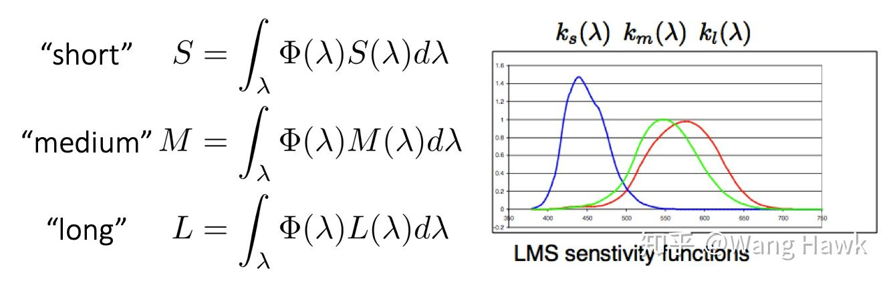
而这些响应可以用一个具有 3 个元素的向量 c 来描述，它就是我们所说的 视网膜颜色:
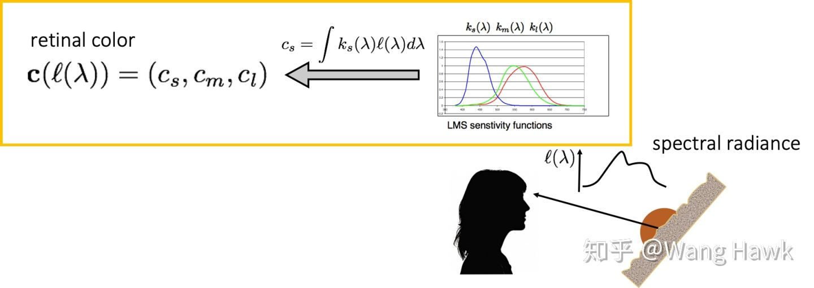
不同 SPD 的光，可以得到同样的视网膜颜色。这使得我们测量颜色时有了更多的挑战和困难。比如下面展示了两个不同的光谱功率分布，一个来自生菜，一个来自绿茶，但是在观察者看来都是同样的绿色。
我们可以认为视网膜颜色空间是一个 3 维的颜色空间，我们称之为 LMS 颜色空间。任何一种纯色光在这个 3 维空间中都有对应的坐标，我们可以画出这些坐标，并从不同的角度去观察画出的曲线：
可以观察到这条曲线呈套索状，并位于 3 维空间的第一象限，它的起始点和终点都是原点，并且除了原点之外都与 M 轴无交点。
上面的曲线假设输入的纯色光是单位强度的，那么如果强度有变化呢？此时的曲线的样子是下面这样的，可以看到我们得到的颜色坐标位于一个凸面上。
如果是由多种不同强度不同波长纯色光混合而成的光呢？此时它的颜色坐标则会位于这个凸面包裹的范围之中：
- 颜色的科学 https://zhuanlan.zhihu.com/p/80321112
- 既然紫光的波长最短，为什么用红色和蓝色混合会产生紫色（紫光）？ https://www.zhihu.com/question/385007670
- 颜色知识 1-人类的视觉系统与颜色 https://zhuanlan.zhihu.com/p/84891237 Tips: 该节内容大部分来自于该引用
- 颜色的科学 https://zhuanlan.zhihu.com/p/80321112
- 人眼特性
- 人眼分辨率 人眼像素
人眼一般具有一亿左右的视杆细胞，但是视锥细胞说满了也只有 700 万不到。
人眼成像过程非常复杂，大脑的参与同样至关重要。由于视锥细胞集中在黄斑，也就是视线焦点处。因此，人眼对于视线焦点处的色彩信息掌握最为充分，而对于非焦点区域，就只能靠大脑来“处理”了。而人眼对焦极快，可以快速对焦到你想要看到的地方，因此仿佛可以将看见的景色尽收眼底。
- 人眼动态范围
场景的最大亮度与最小亮度的跨度称作动态范围. 通常使用尼特(nits)来度量，1尼特=1 坎特拉/平方米(1nits=1cd/m^2)。
场景里的最大亮度和最小亮度的比就叫做（静态）对比度
在白天环境亮度 10，000 特时，人眼大约能分辨的亮度范围为 200～20，000 尼特，低于 200 尼特的亮度同感觉为黑色。而夜间环境为 30 尼特时，可分辨的亮度范围为 1～200 尼特，这时 100 尼特的亮度就引起相当亮的感觉。只有低于 1 尼特的亮度才引起黑色感觉。
人眼感知的亮度与光强成指数关系，而物理学定义的亮度与光强成正比。
- 参考资料
- 人的眼睛相当于什么参数的镜头？ https://www.zhihu.com/question/26507130
- Human eye https://en.wikipedia.org/wiki/Human_eye
- 人眼的像素有多高？ https://www.zhihu.com/question/25111095
- 人的眼相当于多少像素的数码相机呢？ https://www.zhihu.com/question/19968393
- 为什么人眼的动态范围 (Dynamic Range) 比相机大得多？ https://www.zhihu.com/question/21492596/answer/117666373
- What is the maximum light intensity that a human eye can withstand without being damaged? https://www.quora.com/What-is-the-maximum-light-intensity-that-a-human-eye-can-withstand-without-being-damaged
- 人的眼睛相当于什么参数的镜头？ https://www.zhihu.com/question/26507130
- 人眼分辨率 人眼像素
- 颜色的标准化
- 三原色理论 颜色匹配实验
三原色，所谓三原色，就是指这三种色中的任意一色都不能由另外两种原色混合产生，而其它色可由这三色按照一定的比例混合出来，色彩学上将这三个独立的色称为三原色。
在颜色匹配实验中，当这三原色光的相对亮度(luminance)比例为 1.0000： 4.5907 ： 0.0601 时就能匹配等能白光，所以 CIE 选取这一比例作为红、绿、蓝三原色的单位量。CIE 通过颜色匹配实验，确定了 CIE-RGB 颜色匹配函数（类比人眼三种视锥细胞对光的响应函数）。
- 三原色原理 https://baike.baidu.com/item/%E4%B8%89%E5%8E%9F%E8%89%B2%E5%8E%9F%E7%90%86/6969780
- 颜色知识 2-三原色理论与颜色匹配实验 https://zhuanlan.zhihu.com/p/84897327
- 1931 CIE 颜色系统 https://zhuanlan.zhihu.com/p/31374619
- CIE 光谱三刺激值 https://baike.baidu.com/item/CIE%E5%85%89%E8%B0%B1%E4%B8%89%E5%88%BA%E6%BF%80%E5%80%BC/22127070?fr=aladdin
- 三原色原理 https://baike.baidu.com/item/%E4%B8%89%E5%8E%9F%E8%89%B2%E5%8E%9F%E7%90%86/6969780
- 颜色模型 颜色空间
- 颜色模型
颜色模型: 颜色模型是一种抽象的数学模型，描述了颜色被表示为数字元组的方式，通常颜色可以表示为三个或四个分量。 当此模型与如何解释各个分量的精确意义相关联时，生成的颜色集称为“颜色空间”。
RGB color model:
RGB 颜色模型是一种基于人类对颜色感知的加色模型。通过对 R、G、B 三种颜色的光束进行叠加可以得到其他颜色，格拉斯曼定律揭示了颜色混合的线性规律。
RGB 颜色模型本身并没有定义红、绿和蓝的含义，因此混合它们的结果不是绝对的，而是相对于原色的。 当定义了红、绿、蓝三原色的准确色度后，颜色模型就变成了一个绝对的颜色空间，例如 sRGB 或 Adobe RGB。
格拉斯曼定律揭示了光谱分布转化为 RGB 颜色值的本质，给定任意一个 SPD I(λ), 其对应的 RGB 坐标为:
I(λ) 是线性的，r(λ) g(λ) b(λ)是所选三原色对应的颜色匹配函数。
CIE 颜色匹配实验就是利用格拉斯曼定律构造 CIE-RGB 颜色空间。
CMYK color model:
CMYK 颜色模型是一种减色颜色模型。
Cylindrical-coordinate color model:
存在许多颜色模型，其中颜色适合圆锥形、圆柱形或球形，中性色沿中心轴从黑色到白色，色调对应于周边的角度。如 HSL，HSV 等等
- 颜色空间
颜色空间: 为一个颜色模型定义三原色、白点、传递函数后，就可以确定其所能表示的颜色集合，该集合就是颜色空间。
颜色空间通常还会包含 Image State、Viewing Environment、Data Type 等信息：
- Image State：它把颜色空间分类成了几种不同的图像状态，最常见的就是 Scene Referred Image 和 Display/Output Referred Image
- Viewing Environment：由于人眼的视觉是自适应的，大脑对颜色的理解是依赖当前所处的观察环境的。例如，同样一张白纸在明亮的天光环境和钨丝灯光照下我们都认为它是白色的，但实际上在两种光照环境下它真正反射的光线是不同的。因此，我们需要给颜色空间定义一个它的观察环境，这个观察环境会影响颜色空间的白点值、传递函数等数值。例如 DCI-P3 的白点和伽马一定程度上就是为了适应影院这样较为昏暗的放映条件
- Data Type：它指定了这个空间下颜色数据的范围和精度，例如数据是 8-bit、10-bit 还是 16-bit，格式是 integer 还是 floating point
- https://chrisbrejon.com/cg-cinematography/chapter-1-color-management/
RGB color space:
RGB color space 是基于 RGB color model 的很多种颜色空间的总称。如：sRGB，Adobe RGB, CIE RGB
- Image State：它把颜色空间分类成了几种不同的图像状态，最常见的就是 Scene Referred Image 和 Display/Output Referred Image
- CIE-RGB
CIE1931 色匹配实验使用 700 nm 红光，546.1 nm 绿光，435.8 nm 的蓝光，对 380nm 到 780nm 的单色光进行匹配，得到 r(λ) g(λ) b(λ) 三个颜色匹配函数。匹配实验并没有指定三原色光的亮度，三原始光亮度比例是由下面的等式推导出来的：
最终，r:g:b 三原色的 luminance 比例为 1.0000:4.5907:0.0601，radiance 比例为 72.0962:1.3791:1
CIE-RGB 线性空间的正交基: 1 单位亮度的 700nm 红光为(1,0,0), 4.5907 单位亮度的 546.1nm 绿光为(0,1,0), 0.0601 单位亮度的 435.8nm 蓝光为(0,0,1)。需要注意的是，CIE-RGB 空间中，部分颜色的坐标为负数。
- CIE-XYZ
为了消除 CIE-RGB 颜色空间中，r分量的负值，开发了 CIE-XYZ 颜色空间。另外还满足如下一些约束：
- 所有坐标都是正的保持等能点（equal energy point）作为白色
- 使得新的 Y 坐标能够代表明度，也就是使得新的 Y 坐标等于视觉的明度响应
- 使得新的 Z 坐标在红光端保持为 0
- 使得所有色彩尽可能充满新的空间
明度响应曲线是人眼对不同波长光引起明亮感觉的描述。使用等能光谱不同波长的光与标准白光相匹配的实测，可以获得对各个波长的光的相对视亮度函数。根据观察范围和观察者亮度适应水平分为两种：明视觉光亮度函数和暗视觉光亮度函数。
CIE-RGB 到 CIE-XYZ 转化矩阵的构造(从 CIE-RGB 空间构造 CIE-XYZ 空间), 可以参考 wiki 中内容。
- 所有坐标都是正的保持等能点（equal energy point）作为白色
- CIE-xyY
- linear RGB 颜色空间
linear RGB 这种说法是不准确的，因为 linear RGB 并没有给出三原色和白点，传递函数等信息。
一种观点认为，rgb 颜色可以理解为 SPD 的简化，其只包含了三个单色光的量。
另一种观点认为，rgb 颜色是 SPD 投影到 rgb 空间的表示形式。
- sRGB
sRGB 颜色空间是惠普和微软制定的被用于网络、Windows、印刷等领域的 RGB 颜色空间标准。其各个属性如下：
三原色和白点:
CIE xy chromaticity red green blue whitepoint x 0.6400 0.3000 0.1500 0.3127 y 0.3300 0.6000 0.0600 0.3290 z 0.0300 0.1000 0.7900 0.3583 从 CIE 色度图选择某个颜色空间的三原色和白点，求出该颜色空间和 CIE-XYZ 颜色空间的变换矩阵的方法如下图所示：
Tips: CIE 色度图选择的三原色、白点的值也是 CIE-XYZ 空间的颜色值，这些值在 X+Y+Z=1 平面上。
下面推导了 sRGB 到 CIE-XYZ 的变换矩阵:
0.3290 * sw = 1, 0.6400 * sr + 0.3*sg + 0.15*sb = 0.3127*sw, 0.3300 * sr + 0.6*sg + 0.06*sb = 0.3290*sw, 0.0300 * sr + 0.1*sg + 0.79*sb = 0.3583*sw, // WolframAlpha 中不支持上面写法，支持下面这种写法 0.3290 * w = 1, 0.6400 * r + 0.3*g + 0.15*b = 0.3127*w, 0.3300 * r + 0.6*g + 0.06*b = 0.3290*w, 0.0300 * r + 0.1*g + 0.79*b = 0.3583*w, // 解的 sr≈0.644361, sg≈1.19195, sb≈1.20321, sw≈3.03951 // 从而得到Rxyz Gxyz Bxyz Rxyz = rxyz*sr = (0.6400,0.3300,0.0300) * 0.644361 = {0.412391, 0.212639, 0.0193308} Gxyz = gxyz*sg = (0.3000,0.6000,0.1000) * 1.19195 = {0.357585, 0.71517, 0.119195} Bxyz = bxyz*sb = (0.1500,0.0600,0.7900) * 1.20321 = {0.180482, 0.0721926, 0.950536} Wxyz = wxyz*sw = (0.3127,0.3290,0.3583) * 3.03951 = {0.950455, 0.999999, 1.08906} // 因此 sRGB 到 CIE-XYZ 的变换矩阵为 0.412391, 0.212639, 0.0193308 0.357585, 0.71517, 0.119195 0.180482, 0.0721926, 0.950536 0.412391, 0.212639, 0.0193308 (1,0,1) 0.357585, 0.71517, 0.119195 = (0.412391, 0.212639, 0.0193308) 0.180482, 0.0721926, 0.950536传递函数:
Image State:
Viewing Environment: 常规家庭、办公照明环境
Data Type:
- Rec. 2020
三原色和白点:
CIE xy chromaticity red green blue whitepoint x 0.708 0.170 0.131 0.3127 y 0.292 0.797 0.046 0.3290 z 0. 0.033 0.823 0.3583 - 渲染 颜色值 颜色空间
- Radiometry or Photometry
渲染中选择的单位是 Radiometry 还是 Photometry，这个问题的答案并不统一。
- Photometry
Moving Frostbite to PBR 文章描述：Frostbite 引擎中，整个渲染管线使用了 photometry。使用 radiometry，就需要同时提供 luminous efficacy(发光效率)，这增加了艺术家工作的复杂性，因此，最好假设光的波长都为 555nm，此时 1(watt)=683(lumen)。这样可以简单转化 Radiometry 和 Photometry 的单位。现实世界中光源都是按照 Photometry 度量的，所以最终引擎采用了 Photometry 作为单位。
- Radiometry
Radiometry Versus Photometry 文章描述：提出如果是渲染单色图片，使用 Radiometry 和 Photometry 都一样，只需要对渲染结果进行简单转化。如果是渲染 RGB 彩色图片， 渲染中应该使用 Radiometry 单位。使用 Radiometry 单位，颜色值(1,1,1)是白色，且对应的 SPD 大致是平坦的。使用 Photometry 单位，颜色值(1,1,1)不是白色，而是一种紫色，绿色范围内的能量较少，而红色和蓝色范围内的能量较多。
- Photometry
- linear and non-linear color space
几何光学中，光能量是线性的，光物体交互可以用相加和相乘来模拟。如，两个光源叠加相当于两个光源的 SPD 相加；光源 L(光源的光谱分布为 L)照射物体 O(物体的反射光谱分布为 O)，则物体反射的光为 L*O。
使用 RGB 模型表示光谱分布时也是线性的，证明如下图：
在渲染计算中，若所选的颜色空间不是线性的，则无法正确模拟光和物体的交互。例如：若我们选用的颜色空间是二次的(LightEnergy = LightPos^2 光对应的坐标值和能量是二次关系)，考虑指定波长的光其坐标值为 1，对应的能量是 1，坐标值为 2，对应的能量是 4。
二次空间颜色值 1 + 2 = 3 对应的能量计算 1 + 4 = 5 二次颜色值3 转化为能量后为 9, 这和使用能量计算的结果5不相同。
因此，渲染计算中需要使用线性的颜色空间。
- sRGB BT.2020 ACES2065-1
本质上来说，sRGB CIE-RGB 或 CIE-XYZ 颜色值都是光谱功率分布和响应函数积分得到的。
sRGB 的三个基向量为 R(1,0,0) G(0,1,0) B(0,0,1) sRGB 是标准正交线性空间
CIE-RGB 的三个基向量为 R(1,0,0) G(0,1,0) B(0,0,1) CIE-RGB 是标准正交线性空间
CIE-XYZ 的三个基向量为 X(1,0,0) Y(0,1,0) Z(0,0,1) CIE-XYZ 是标准正交线性空间
虽然， 以上三个颜色空间都是线性空间。但是，由于三原色、白点不同，使用不同的颜色空间渲染得到的结果会有差异。颜色相加不会导致结果不同，但是颜色相乘的结果受到三原色选取影响。
前人的研究表明，那些三原色越接近光谱轨迹的色域空间渲染出来的结果往往更接近光谱渲染的正确结果，ACEScg 就是这样一个颜色空间，它的三原色 AP1 在光谱轨迹附近，且包含了 Rec. 2020 等常见的广色域空间，因此它非常适合作为 CG 和 VFX 等计算机渲染的工作空间。
- Radiometry or Photometry
- 参考资料
- Color Model https://en.wikipedia.org/wiki/Color_model
- RGB color space https://en.wikipedia.org/wiki/RGB_color_space
- 线性和非线性的区别是什么？ https://www.zhihu.com/question/293327883
- 格拉斯曼定律 (色彩) https://zh.wikipedia.org/wiki/%E6%A0%BC%E6%8B%89%E6%96%AF%E6%9B%BC%E5%AE%9A%E5%BE%8B_(%E8%89%B2%E5%BD%A9)
- 色彩空间基础 https://zhuanlan.zhihu.com/p/24214731
- 色彩空间表示与转换 https://zhuanlan.zhihu.com/p/24281841
- HDR 和色彩管理 1 光、颜色和色度图 https://zhuanlan.zhihu.com/p/129095380
- HDR 和色彩管理 2 颜色空间 https://zhuanlan.zhihu.com/p/133434457
- displaycal https://displaycal.net/
- Color Model https://en.wikipedia.org/wiki/Color_model
- 颜色模型
- 色域、色温和白平衡
- 实时渲染中如果模拟色调适应？
色调适应是指光照变化后，物体实际反射到人眼的 SPD(光谱能量分布) 也会发生变化，但是，人类的视角系统有一种神奇能力，可以让视网膜得到的颜色和大脑中感知的颜色不同，从而使得不同光照下，同一个物体的感知颜色是相同的。
实时渲染中在后处理中通过白平衡来实现颜色的恒常。白平衡实现中通过调节两个参数:色温和色调，来设置白点的位置，从而得到正确的色彩转换；色温调节蓝-黄偏色，色调调节绿-品红偏色。
- 将 temperature 和 tint 表示的白点 转化为 CIE xy chromaticity 中的白点 wXYZ(x,y)
- 将 wXYZ(x,y)转化为 LMS 空间的白点 wLSM
- 计算 LSM 空间的 D65 白点 wD65LSM
- 计算 LMS 空间中白平衡变换矩阵如下面注释所示
/// Converts white balancing parameter to LMS coefficients. /// <param name="temperature">A temperature offset, in range [-100;100].</param> /// <param name="tint">A tint offset, in range [-100;100].</param> /// <returns>LMS coefficients.</returns> public static Vector3 ColorBalanceToLMSCoeffs(float temperature, float tint) { // Range ~[-1.5;1.5] works best float t1 = temperature / 65f; float t2 = tint / 65f; // Get the CIE xy chromaticity of the reference white point. // Note: 0.31271 = x value on the D65 white point float x = 0.31271f - t1 * (t1 < 0f ? 0.1f : 0.05f); float y = StandardIlluminantY(x) + t2 * 0.05f; // Calculate the coefficients in the LMS space. var w1 = new Vector3(0.949237f, 1.03542f, 1.08728f); // LMS space D65 white point var w2 = CIExyToLMS(x, y); return new Vector3(w1.x / w2.x, w1.y / w2.y, w1.z / w2.z); } // wD65 wD65LSM 分别为 CIE-XYZ 空间和LSM 空间中, D65 光照环境下的白点，也是人类感知的白点 // wXYZ wLSM 分别为 CIE-XYZ 空间和LSM 空间中, 当前白平衡参数定义的白点 // csRGB cLSM 分别为 sRGB-Linear 空间和LSM 空间中, 当前操作的像素颜色 // csRGBWB cLSMWB 分别为 sRGB-Linear 空间和LSM 空间中, 当前操作的像素颜色被白平衡后的颜色 // // cLSM = XYZ2LSM * sRGB2XYZ * csRGB // // | wD65LSM.r/wLSM.r 0 0 | // cLSMWB = | 0 wD65LSM.g/wLSM.g 0 | * cLSM // | 0 0 wD65LSM.b/wLSM.b | // // csRGB = XYZ2sRGB * LSM2XYZ * cLSMWB // // Tips: Unity使用的XYZ2LSM变换矩阵来自 CIECAM02, 参考下面 LMS_color_space 链接内容
Color appearance model(CAM) 是一种数学模型，旨在描述人类颜色视觉的感知方面，例如，在何种观察调节下，颜色外观与刺激源的相应物理测量不相符。（相比之下，颜色模型定义了一个坐标空间来描述颜色，例如 RGB 和 CMYK 颜色模型。）
因此，Unity 中在进行白平衡时，将颜色转化到 CAM02 颜色模型下。
- Color balance https://en.wikipedia.org/wiki/Color_balance
- LMS_color_space https://en.wikipedia.org/wiki/LMS_color_space#CAT02
- Color appearance model https://en.wikipedia.org/wiki/Color_appearance_model
- CAM02 https://en.wikipedia.org/wiki/CIECAM02
- 白平衡算法 http://www.brucelindbloom.com/index.html?Eqn_ChromAdapt.html 有道云笔记有备份
- 将 temperature 和 tint 表示的白点 转化为 CIE xy chromaticity 中的白点 wXYZ(x,y)
- 参考资料
- 颜色知识 3-色域、色温和白平衡 https://zhuanlan.zhihu.com/p/84954611
- 色温、白平衡与色彩恒常性 https://zhuanlan.zhihu.com/p/27165715
- 色彩恒常性 https://baike.baidu.com/item/%E9%A2%9C%E8%89%B2%E6%81%92%E5%B8%B8%E6%80%A7
- 颜色知识 3-色域、色温和白平衡 https://zhuanlan.zhihu.com/p/84954611
- 实时渲染中如果模拟色调适应？
- HDR 和色彩管理
- human eye https://en.wikipedia.org/wiki/Human_eye
- HDR 和色彩管理 3 SDR 和 HDR https://zhuanlan.zhihu.com/p/138295496
- HDR 和色彩管理 4 HDR 标准和 ACES https://zhuanlan.zhihu.com/p/144775352
- HDR 和色彩管理 5 游戏中的 HDR https://zhuanlan.zhihu.com/p/150894189
- ACES https://en.wikipedia.org/wiki/Academy_Color_Encoding_System
- human eye https://en.wikipedia.org/wiki/Human_eye
- Q&A
- 如何理解 颜色知识 2-三原色理论与颜色匹配实验 文章中的颜色匹配函数？
横轴为光的波长，纵轴为匹配该波长的光的颜色所使用的红、绿、蓝三种波长光的量。
红色曲线有一部分落在了 x 轴之下，这是因为混合红、绿、蓝三种波长光无法得到这个区域对应的光的颜色，需要将红色光叠在被匹配的光上，才能使得两边颜色一直（默认情况下，左边为被匹配的光，右边为红绿蓝三种波长的光叠加在一起的混合光）。
请参考下面文中描述
- 色觉地图的建立（一）：光感受器、色匹配实验与 CIE RGB 坐标系 https://zhuanlan.zhihu.com/p/72803768
- 色觉地图的建立（一）：光感受器、色匹配实验与 CIE RGB 坐标系 https://zhuanlan.zhihu.com/p/72803768
- 如何理解 颜色知识 2-三原色理论与颜色匹配实验 文章中的颜色匹配函数？
- 参考链接
具体内容参考下面链接。
- CIE 1931 XYZ 色彩空间 https://zh.wikipedia.org/wiki/CIE1931%E8%89%B2%E5%BD%A9%E7%A9%BA%E9%97%B4
- color-spaces https://ciechanow.ski/color-spaces/ 该链接中有颜色空间的 3D 图，可交互旋转这些图形
- 3D CIE-RGB CIE-XYZ 空间演示 https://graphics.stanford.edu/courses/cs178/applets/threedgamut.html
- Color: From Hexcodes to Eyeballs http://jamie-wong.com/post/color/
- CIE 1931 XYZ 色彩空间 https://zh.wikipedia.org/wiki/CIE1931%E8%89%B2%E5%BD%A9%E7%A9%BA%E9%97%B4
- 三原色理论 颜色匹配实验
参考资料
- Color and Light http://www.cse.psu.edu/~rtc12/CSE486/lecture26.pdf
- 色觉地图的建立（一）：光感受器、色匹配实验与 CIE RGB 坐标系 https://zhuanlan.zhihu.com/p/72803768
- HumanSensitivity to color http://graphics.stanford.edu/courses/cs178/applets/locus.html
- ColorMatching http://graphics.stanford.edu/courses/cs178/applets/colormatching.html
Spectral Representation
pbr 中不支持动态修改 Spectrum 类型，修改 Spectrum 类型需要重新编译，这样做有两个好处：
- 很多 Spectrum 的方法都可以实现为 inlined，而不需要通过虚函数机制来支持不同 Spectrum 类型
- 不需要动态创建 Spectrum 的实例。
CoefficientSpectrum 下面的样本访问函数的实现中隐含了光谱表示是一系列的系数线性地缩放一组固定的基函数。尽管这种抽象不够理想，但是其简化了当前系统其他部分的实现，并且当这个假设不正确时，也不难清除。
Float & CoefficientSpectrum::operator[](int i) { return c[i]; } Float CoefficientSpectrum::operator[](int i) const { return c[i]; }
SampledSpectrum
下图展示了利用线性插值来求平均的光谱采样：
XYZ Color
人类视觉系统的特性决定了可以只使用 3 个浮点值就可以表示人类看到的颜色。色彩感知的三原色理论表示，可以使用三个值 xλ,yλ,zλ为人类观察者精确表示所有可见光谱。
给定一个 SPD S(λ)，这三个值可通过下面公式计算得到，X(λ) Y(λ) Z(λ) 分别为光谱匹配曲线，这些曲线由 CIE 标准通过一系列主观试验测试绘制出来。这些匹配曲线和人眼视网膜上的三种颜色感知视锥细胞的响应曲线相似。
下图为光谱匹配曲线：
下图为由 SPD 和 X(λ) Y(λ) Z(λ)计算 xλ,yλ,zλ的方法：

需要注意的是，不同的光谱分布可能会得到相似的 xλ,yλ,zλ值。对于人类视觉来说，这些不同的 SPDs 确有相同的可视效果。这些光谱被称为条件等色。
尽管 XYZ 可以很好的将一个给定的 SPD 表示为人类观察者看到的颜色。但是其也有不足的地方，例如，计算两个颜色各自 XYZ 值的乘积所得的 XYZ 值和将两个 SPD 相乘然后计算结果的 XYZ 值有明显的差别。
XYZ 空间的 y 系数和 luminance 有紧密联系，其用于度量颜色的亮度感觉。
RGB Color
当我们将 RGB 颜色显示到显示器上时，实际上显示的光谱基本由 r、g、b 三个光谱响应曲线的权重和决定。下图显示了 LED 显示器和 LCD 显示器发出的 r、g、b 的分布：

下图显示了 RGB 颜色(0.6,0.3,0.2)在 LED、LCD 上的显示时的 SPD，可以看出，不同显示器显示相同颜色，所得的 SPD 却非常不同，因此用户提供的用于表示特定颜色的 RGB 值，只有知道显示器特性才有意义。
给定 SPD 的（xλ，yλ，zλ）表示形式，并选择一组特定的 SPD 来定义显示器的红色，绿色和蓝色，我们可以将（xλ，yλ，zλ）转换为对应显示器的 RGB 系数。给定显示器的光谱响应曲线 R(λ), G(λ), B(λ)，对于特定的显示器 RGB 系数可以通过下面方法来计算：
inline void XYZToRGB(const Float xyz[3], Float rgb[3]) { rgb[0] = 3.240479f * xyz[0] - 1.537150f * xyz[1] - 0.498535f * xyz[2]; rgb[1] = -0.969256f * xyz[0] + 1.875991f * xyz[1] + 0.041556f * xyz[2]; rgb[2] = 0.055648f * xyz[0] - 0.204043f * xyz[1] + 1.057311f * xyz[2]; }
将 RGB 或 XYZ 值转化为 SPD 比较难，无数多个 SPD 有相同的 xλ，yλ，zλ系数。我们希望转化函数可以满足如下条件：
- 当 RGB 系数相同时，得到的 SPD 应该是一个常数
- 通常，希望计算得到的 SPD 是平滑的。大多数真实世界的物体都具有平滑的 SPD。不平滑的光谱主要来源于光源，特别是荧光灯。
通过将显示器的 R(λ), G(λ), and B(λ) SPDs 加权求和来构造 SPD 不是一个很好的解决方案，因为显示器的 R(λ), G(λ), and B(λ) SPDs 通常是不规律、不平滑的，加权求和得到的 SPD 也不会平滑。
Smits(1999)发现了一种将 RGBs 转化为 SPDs 的方法。分别为 red、green、blue 计算各自的 SPDs，并保证这些 SPDs 光滑，然后用给定的 RGB 系数对这些 SPDs 进行加权求和，从而得到平滑的 SPD，再将 SPD 转化为 RGB 可以得到一个和原始 RGB 系数接近的系数.可以对这种基本方式做下面两个额外的改进：
- 不要使用 red\green\blue 的 SPDs 的和来表示常量光谱，直接通过常量光谱表示常量 SPDs。
- 混合颜色是由两种元颜色混合而来，混合颜色最好通过预计算的光滑的 SPD 来表示，而不是通过元颜色的和表示
SampledSpectrum SampledSpectrum::FromRGB(const Float rgb[3], SpectrumType type) { SampledSpectrum r; if (type == SpectrumType::Reflectance) { // Convert reflectance spectrum to RGB if (rgb[0] <= rgb[1] && rgb[0] <= rgb[2]) { // Compute reflectance _SampledSpectrum_ with _rgb[0]_ as minimum r += rgb[0] * rgbRefl2SpectWhite; if (rgb[1] <= rgb[2]) { r += (rgb[1] - rgb[0]) * rgbRefl2SpectCyan; r += (rgb[2] - rgb[1]) * rgbRefl2SpectBlue; } else { r += (rgb[2] - rgb[0]) * rgbRefl2SpectCyan; r += (rgb[1] - rgb[2]) * rgbRefl2SpectGreen; } } } // ... }
- LCD 显示器工作原理到底是怎样的？ https://www.zhihu.com/question/39452323
- 显示器如何显示准确的颜色？ https://zhuanlan.zhihu.com/p/43467096
- An RGB to Spectrum Conversion for Reflectances http://citeseerx.ist.psu.edu/viewdoc/download?doi=10.1.1.40.9608&rep=rep1&type=pdf
参考资料
RGBSpectrum
Radiometry
辐射度学并不是使用物理的第一原理推导而来，而是基于光的粒子抽象建立的。因此，该框架无法描述光的偏振，但是已经将辐射度学和麦克斯韦方程建立了联系，这为辐射度学提供了坚实的物理基础。
辐射传播是辐射能量的传播。其基于辐射度原理，属于几何光学层面，光的宏观属性足够描述光和物体(物体的尺寸远大于光的波长)的交互。其很少包含光的波动光学模型，但是波动光学的结果需要使用辐射度学的语言来描述。这样就可以描述光和尺寸较小的物体(物体尺寸和波长近似)的交互，可以模拟色散和干涉现象。更精细的细节就需要利用量子机制来描述光和原子的交互。渲染问题不需要直接模拟量子机制。
pbrt 中，我们假设几何光学足够描述光和光的散射。这样可以得到如下一些光的行为规则：
- 线性关系：组合两个输入等价于两个输入分别作用的结果的和
- 能量守恒：散射后能量不会比原来更多
- 没有偏振：忽略电磁场的偏振
- 没有荧光和磷光：这些是光在一个波长尺度上的行为，和光在多个波长尺度上的行为完全独立。
- 稳定的状态：光在环境中达到均衡，其辐射分布不会随时间变化。注意：磷光现象违反了稳定状态的假设。
几何光学模型的最大缺点是无法简单地模拟色散和干涉现象。因为两个区域总的通量不必和各自接收的能量的和相等。
下图展示了辐射度学中的物理量：
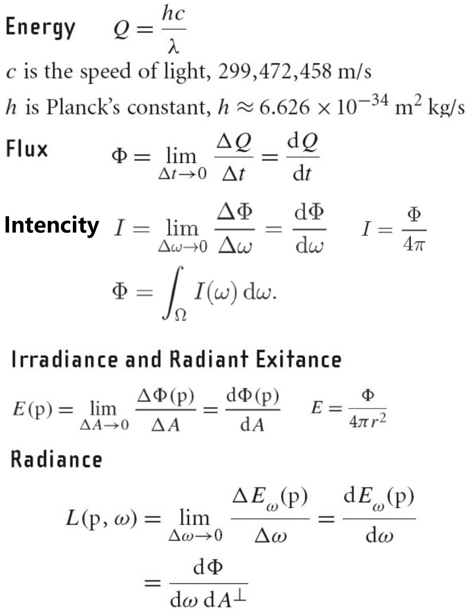
所有的辐射度测量物理量都有对应的光度测量物理量。光度学是研究人类视觉系统对可见的电子辐射的感觉。
每个光谱辐射度物理量都可以被转化为对应的光度物理量，只需要对辐射度物理量和对应光度响应曲线的积做积分就可以了。下图展示了辐射度测量物理量和光度学测量物理量之间的对应关系：

Luminance 测量了人眼观察到的光谱功率分布的亮度。和 Luminance 对应的辐射度测量物理量为 Radiance（记作 L），下图表示了计算 Luminance(记作 Y)的公式：
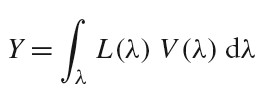
Lunimance 和光谱响应曲线 V (λ)与 XYZ 颜色表示有紧密关系。CIE 的 Y (λ) 三刺激曲线是和人类亮度响应曲线 V(λ)成比例的。
Working With Radiometric intergals
渲染中最寻常的任务是求辐射量的积分。本节介绍一些技巧可以简化求辐射量积分的任务。
Integrals over projected solid angle
下图为计算点 p 处的 irradiance(辐照度) n 为点 p 处表面的 normal，Li(p,w)为 radiance(入射辐射度)函数，cos(θ)为 dA⊥项。θ 为 w 和 n 的夹角。辐照度通常只计算 normal 指向的半球范围。
辐射量积分中的各种 cosine 项经常会分散其要表示的内容。使用投影立体角而不是立体角来度量积分对象覆盖的区域可以避免此问题。
物体的投影立体角是通过先将物体投影到单位球上，然后再将物体投影到垂直与 normal 的 disc 上得到的。如下图所示：
在半球范围内，从某个物体发出的总的通量可以通过下面公式计算，其中 A 为该物体的表面积：
Integrals over spherical coordinates
将立体角积分转化为球面坐标系积分经常很方便。
下图将一个向量转化为球坐标系形式：
下图将立体角转化为球面坐标系形式：

则点 p 处的 irradiance(辐照度)可以通过如下方式计算：
Integrals over area
将在方向上的积分转化为在区域(面积)上的积分可以简化计算。有一个正方形发出恒定的 radiance(辐射率)，计算点 p 处的 irradiance(辐照度)。在各个方向上积分来求该值是不太直接的，因为给定一个方向需要判断该方向上正方形是否可见。在四边形的区域上积分来计算辐照度则更容易。
微分区域和微分立体角有如下关系，其中 θ 为正方形微分表面 dA 的法线和指向 p 点的向量的夹角，r为 p 和正方形微分表面 dA 之间的距离。
Surface Reflection
当光入射到表面，表面会散射光，并反射一部分光回到环境中。模拟反射主要有两个效果需要表示出来：反射光的光谱分布和反射光的方向分布。
BRDF BTDF
BRDF(bidirectional reflectance distribution function) 形式化描述了表面的反射。其忽略了光在次表面传播的效果。
BTDF(bidirectional transmittance distribution function) 描述了穿过表面的光的分布。BTDF 不满足互换性(reciprocity).
BSDF(bidirectional scattering distribution function) 描述了表面反射和透射，其同时考虑了 BRDF 和 BTDF.
下图为 BRDF BTDF BSDF 的定义:
Tips: brdf 的范围为 0 到无穷大
6 Camera models
Camera Model
真实世界的摄像机都有一个快门，其开启一个短暂的时间将胶片暴露在光下。曝光时间大于 0 时，会造成运动模糊：曝光时间内，物体相对于摄像机运动时，物体会变模糊。摄像机都会存储快门打开的时间和快门关闭的时间，并且摄像机采样场景时生成的射线也会携带对应的时间。在快门开启关闭时间间隔内，给定恰当的射线时间分布，就可以在最终计算的图片中展现运动模糊效果。
摄像机中还包含一个 Film 实例的指针，以及一个 Medium 实例的指针（用于表示摄像机所处的介质）。
摄像机空间可以方便地监测物体对于摄像机是否可见。例如，如果物体在摄像机空间中的 BoundingBox 在 Z=0 平面后面，则物体对于摄像机不可见。
Projective Camera Models
屏幕空间：屏幕空间定义在胶片平面上。摄像机将物体从摄像机空间投影到胶片平面上。生成的图片只有在屏幕窗口内的部分是可见的。屏幕空间中深度值 Z 的范围为[0,1]，分别对应近裁剪面和远裁剪面。注意：尽管被称为屏幕空间，其仍然是三维坐标系，因为 z 值是有意义的
标准设备坐标空间（NDC）：该坐标系是实际被渲染图片的坐标系。x,y 方向的范围为[0，1].深度值和屏幕空间的相同。
光栅化空间：几乎和 NDC 空间相同，除了 x，y 坐标范围为[0, resolution.x] [0, resolution.y]
// ScreenToRaster ScreenToRaster = Scale(film->fullResolution.x, film->fullResolution.y, 1) * Scale(1 / (screenWindow.pMax.x - screenWindow.pMin.x), 1 / (screenWindow.pMin.y - screenWindow.pMax.y), 1) * Translate(Vector3f(-screenWindow.pMin.x, -screenWindow.pMax.y, 0)); // RasterToScreen RasterToScreen = Inverse(ScreenToRaster); // RasterToCamera RasterToCamera = Inverse(CameraToScreen) * RasterToScreen;
Orthographic Camera
// 计算正交投影矩阵 Transform Orthographic(Float zNear, Float zFar) { return Scale(1, 1, 1 / (zFar - zNear)) * Translate(Vector3f(0, 0, -zNear)); } // 正交摄像机的CameraToScreen 变换矩阵为 Orthographic(0, 1);
Perspective Camera
// 计算透视投影矩阵 Transform Perspective(Float fov, Float n, Float f) { // Perform projective divide for perspective projection Matrix4x4 persp(1, 0, 0, 0, 0, 1, 0, 0, 0, 0, f / (f - n), -f * n / (f - n), 0, 0, 1, 0); // Scale canonical perspective view to specified field of view Float invTanAng = 1 / std::tan(Radians(fov) / 2); return Scale(invTanAng, invTanAng, 1) * Transform(persp); } // 透视摄像机的 CameraToScreen变换矩阵为 Perspective(fov, 1e-2f, 1000.f)
上面透视投影变换的求解分为两步：
- 将点 p 投影到近平面得到点 p'。如下图所示：
- 利用用户指定的 FOV，将投影后的视景体内的坐标转化到[-1,1]范围内的坐标。
对于正方形图片来说，x和 y 都在[-1,1]范围内。
对于矩形图片来说，比较窄的方向会被映射到[-1, 1]范围，比较宽的方向会同比例映射到更大的范围。
Lens Model and Depth Of Field
真实的相机有镜头系统，其将通过有限尺寸光圈的光聚焦到胶片平面上。相机设计者面临一个取舍：光圈越大，就会有越多的光进入胶片，需要曝光的时间也就越短。然而，镜头只会聚焦在单个平面上（焦点平面），离焦点平面越远的物体会越模糊。光圈越大，产生的模糊越明显。
下面是成像系统相关的几个概念：
焦点（像方交点）：在物理学上指平行光线经透镜折射或曲面镜反射后的会聚点。
物方交点：
焦距：平行光从透镜的光心到光聚集之焦点的距离，即透镜中心到焦点的距离。
焦平面：与成像系统的光轴垂直、且包含成像系统焦点的平面。
镜屏距：透镜中心到屏幕（底片）的距离。
物距：物体到透镜中心的距离。
像距：给定物距和焦距情况下，像到透镜中心的距离。
合焦距离：屏幕上的像最清晰时，屏幕据透镜中心的距离。物距给定，合焦距离即是像距。
- https://www.zhihu.com/question/20086562/answer/15877139
- https://zhuanlan.zhihu.com/p/21672067
- https://baike.baidu.com/item/%E5%87%B8%E9%80%8F%E9%95%9C
- 工程光学（六）——几何光学（进阶）https://zhuanlan.zhihu.com/p/48980327
下图为凸透镜原理：
对于目前我们使用的简单摄像机模型，我们可以应用光学上经典的近似（薄镜头近似），使用计算机图形学投影模型来模拟有限光圈。薄镜头近似模拟拥有单个球面镜头的光学系统，镜头的厚薄和曲面镜头的直径有很小关系。
在薄镜头近似中，平行的入射光线经过镜头后会聚焦在一点，这点被称为焦点。焦点到镜头的距离被称为焦距 f。如果胶片被放置在镜头后焦点的位置上，则无线远的物体会被聚焦到胶片上的一个点。如下图所示：
下面链接中可以进行动态演示：
https://ophysics.com/l12.html
./PhysicallyBasedRendering/2020_06_12_ConcaveAndConvexLenses.ggb
对于场景中距离镜头为 z 的一点 p，镜头的焦距为 f，p 点被镜头聚焦的点为 p'，其到镜头的距离为 z'(像距)，由成像公式可的如下关系：
上图中的 z'就是 z 对应的像距，z和 z'是一一对应的，如果点没有放置在 z 聚焦位置上，点在胶片上的投影为一个圆盘(disk)而不是一个点。这个圆盘的边界被称为 circle of confusion。圆盘的尺寸由光圈的直径，焦距以及物体到镜头的距离决定。
在实践中，物体不需要正好在焦点平面上才投影出清晰的像，只要 circle of confusion 大致小于胶片上每个像素的大小，物像就是清晰的。物体聚焦的距离范围被称为镜头的 depth of field(景深).
成像公式可用于计算 circle of confusion 的直径。如下图所示：

焦距 f 为 50mm 的镜头，25mm 光圈，清晰像的物距 Zf 为 1m，随着物距 z 的变化，circle of confusion 直径的变化如下图：
从上图可以看出，Z小于 Zf 时，Dc 变化比较快，而 Z 大于 Zf 时，Dc 变化比较慢。
在射线追踪中模拟一个薄镜头非常简单直接。设点 O 为胶片上一点，在镜头上选一个点 A，然后计算经过镜头中心点 Ao 的射线和焦距平面的交点 Z，则 AZ 就是胶片上 O 对应的射线。如下图所示：
通常为了模拟平滑的景深需要为每个像素点追踪很多个射线。
下面代码为镜头半径大于 0 时，镜头发出射线的重新计算代码。
if (lensRadius > 0) { // Sample point on lens Point2f pLens = lensRadius * ConcentricSampleDisk(sample.pLens); // Compute point on plane of focus // focalDistance 为胶片到聚焦平面的距离 Float ft = focalDistance / ray->d.z; Point3f pFocus = (*ray)(ft); // Update ray for effect of lens ray->o = Point3f(pLens.x, pLens.y, 0); ray->d = Normalize(pFocus - ray->o); }
Environment Camera
射线追踪比基于光栅化的渲染方法的一大优势是，其可以简单利用非寻常的图片投影。关于图片采样位置如何对应到射线的方向，我们有极大的自由度，因为射线追踪渲染算法并不依赖于场景中的直线必须要投影为图片中的直线这类属性。
环境摄像机模型就是在场景中一点(环境摄像机的位置)，向所有方向追踪射线，得到一个 2D 的视图。
EnvironmentCamera 直接从 Camera 类派生，而不是从 ProjectiveCamera 类派生。因为环境投影不是线性的，其无法通过一个 4x4 的矩阵来表示。
EnvironmentCamera 使用了球坐标系来实现，如下面代码：
Float EnvironmentCamera::GenerateRay(const CameraSample &sample, Ray *ray) const { ProfilePhase prof(Prof::GenerateCameraRay); // Compute environment camera ray direction Float theta = Pi * sample.pFilm.y / film->fullResolution.y; Float phi = 2 * Pi * sample.pFilm.x / film->fullResolution.x; // 用球坐标系求射线方向 Vector3f dir(std::sin(theta) * std::cos(phi), std::cos(theta), std::sin(theta) * std::sin(phi)); *ray = Ray(Point3f(0, 0, 0), dir, Infinity, Lerp(sample.time, shutterOpen, shutterClose)); ray->medium = medium; *ray = CameraToWorld(*ray); return 1; }
下面为光栅化渲染方法中用到的环境映射：
- 详解球面环境映射 - Spherical Environment Mapping https://zhuanlan.zhihu.com/p/84494845
- 详解双抛物面环境映射 https://zhuanlan.zhihu.com/p/40784734
下面文件展示了其中原理：
./PhysicallyBasedRendering/paraboloid_env_mapping.ggb
TODO Realistic Cameras
7 Sampling and reconstruction
Sampling Theory
一个数字图片被表示为一组像素值，这些像素值通常排列成一个矩形格子。当数字图片被显示到物理设备上时，这些值通常用于确定显示器上像素所发出的光谱功率。区分图片像素和显示像素非常重要。图片像素表示函数在特定采样点的值。而显示像素是物理对象发出的带有某种分布的光，(在 LCD 显示器上，斜着看和正着看颜色和亮度会有很大不同）。显示器使用图片像素值来构建一个新的图片函数。这个函数定义在显示器的所有点上，而不只是数字图片的很小的像素点。取一组采样值，然后将其转化为连续函数的过程被称为重建(reconstruction)。
为了计算数字图片上离散的像素值，必须对原始的连续的图片函数做采样。在 pbrt 中，获取图片函数信息的唯一方式是通过射线追踪来对图片函数进行采样，这和其他射线追踪渲染器是一样的。
因为采样和重建过程涉及到了近似，所以会引入被称为走样(aliasing)的错误。走样有多种表现形式，其中包括锯齿边缘或者动画中的闪烁。这是因为采样过程中无法从连续定义的图片函数捕捉到所有信息。
下图展示了采样和重建的过程：
The Frequency Domain And The Fourier Transform
傅里叶变换是傅里叶分析的基础之一，傅里叶变换是函数在频率域上的表示(通常函数是在空间域上表示)。下图表示了两个函数在空间域和频率域上的图像。
下图为傅里叶级数和傅里叶变换的公式：
大多数函数可以被分解为多个带相位的正弦函数的权重和。在频率空间表示一个函数，便于深入了解该函数的特性(正弦函数的频率分布对应了原始函数的频率分布)。使用这种形式，可以使用傅里叶分析透彻理解，采样引入的错误，以及重建(reconstruction)的过程，以及如何减少感知到的错误效果。
频率域表示和空间域表示互逆，下图为一些重要的函数，以及其在频率域的表示。
- 正弦型函数 https://baike.baidu.com/item/%E6%AD%A3%E5%BC%A6%E5%9E%8B%E5%87%BD%E6%95%B0
- 傅里叶分析之掐死教程 https://zhuanlan.zhihu.com/p/19763358
- 如何通俗地理解傅立叶变换？ https://www.matongxue.com/madocs/473.html
- 如何理解傅立叶级数公式？ https://www.matongxue.com/madocs/619.html
- 从傅立叶级数到傅立叶变换 https://www.matongxue.com/madocs/712.html
- 如何理解傅里叶变换公式？https://www.zhihu.com/question/19714540/answer/1119070975
- 傅里叶系列（一）傅里叶级数的推导 https://zhuanlan.zhihu.com/p/41455378
- 傅里叶系列（二）傅里叶变换的推导 https://zhuanlan.zhihu.com/p/41875010
- Explanation Fourier http://www.jezzamon.com/fourier/
- Fourier 变换的性质 https://zhuanlan.zhihu.com/p/148484210
- 如何理解离散傅里叶变换及 Z 变换 https://zhuanlan.zhihu.com/p/45114376
Ideal Sampling and Reconstruction
使用频率空间分析，我们可以形式化地研究采样的性质。采样过程需要我们选择一组等间距的采样位置，并且计算在这些位置上函数的值。将采样过程形式化表示就是和 shah(狄拉克梳状函数)相乘，下图为该函数定义以及对应的采样过程图示：
这些采样值可以用于定义一个重建函数~f(x)，只需要选择一个重建过滤函数 r(x)，然后和采样值进行卷积运算就可以了。为了重建，卷积对重建滤波在采样点中心的实例进行了加权求和缩放。
下图展示了重建函数的数学描述，以及三角滤波重建的一个例子：
上面讲述的获得重建函数的过程显得不必要的复杂，直观地讲，可以通过在样本之间以某种方式插值来得到重建函数。上面形式化的表述，可以方便地在重建过程中应用 Fourier analysis。
通过在频域中分析样本函数，我们可以更深入地认识采样过程。特别是，我们可以确定在怎样的条件下，可以使用样本数据精确重建原始函数。对于此处的讨论，我们假定原始函数 f(x)的带宽为有限的，也就是说存在一个频率 w0，f(x)的频率都小于 w0。带宽有限的函数，其频域表示函数为紧支撑的，也就是说，|w|>w0 时，F(w) = 0。
Fourier Transform 的一个重要性质是两个函数乘积的傅里叶变换为，这两个函数各自傅里叶变换后再卷积；而两个函数卷积的傅里叶变换为，这两个函数各自傅里叶变换后再相乘。通过该性质可得出，对原函数的采样，在时域空间是原函数(时域表示)和 Shah 函数的乘积，在频域空间是原函数（频域表示）和另一个 Shah 函数的卷积。周期为 T 的 Shah 函数，其频域表示(傅里叶变换)为周期为 1/T 的 Shah 函数。这说明时域空间上样本间隔越远，频域空间上样本间隔越近。
频域空间的样本表示是通过 F(w)和一个新的 shah 函数的卷积得到的，将一个函数和 delta 函数卷积得到的是该函数的一个复制，所以，将函数和 shah 函数卷积的结果为无数个原函数的复制，这些复制之间的间隔为新的 shah 函数的周期(1/T)。
得到无穷多个原始函数分布的复制后，我们只要保留中心在原点的副本，忽略掉其他副本就可以得到原始函数了。为了达到这个目标，我们需要使用一个 box 函数。下图为该过程(重建过程)的图示：
由此可得，我们只需要对原函数进行一系列固定间隔的采样，就可以精确得到原函数在频域空间的表示，除了需要假定原函数为带宽有限的外，不需要知道其他任何信息。
在时域空间应用相同的过程将会精确重建原函数。因为 Box 函数的傅里叶逆变换为 sinc 函数，所以时域空间中理想的重建函数为：
不幸的是，sinc 函数定义域是[-Infinity, Infinity]，必须使用所有的样本值 f(i)才能计算出时域空间特定的~f(x)值。实践中，通常选择有限边界的滤波函数，尽管这会导致无法精确重建原始函数。
在图形学中，通常使用 Box 函数作为滤波函数，其可以有效地在 x 附近的区域对所有样本值进行平均。从 Box 滤波函数在频率域的行为就可以看出，这是一个非常差的选择，这种技术试图通过乘一个 sinc 函数来隔离函数分布的中心副本，这不仅对于选择中心副本来说效果很差，而且还包含了其他无限多个副本的高频部分。
- 如何通俗易懂地解释卷积？ https://www.zhihu.com/question/22298352
- 图示卷积 https://www.desmos.com/calculator/ea96vohtuq
- 图示卷积 ./PhysicallyBasedRendering/2020_06_21_convolution.ggb
- 图示卷积 https://www.geogebra.org/m/KMrAFBxN
- 卷积神经网络的卷积核 和 数学中的卷积 https://www.zhihu.com/question/52237725
- 《傅里叶光学（九）》 信号采样与重建 https://zhuanlan.zhihu.com/p/72079283
- 麻省理工学院公开课：信号与系统：模拟与数字信号处理 https://open.163.com/newview/movie/courseintro?newurl=%2Fspecial%2Fopencourse%2Fsignals.html
- 实变函数中的支撑（support）是什么意思？ https://www.zhihu.com/question/329984717
Aliasing
除了 sinc 函数无限边界的问题外，理想采样和重建方式的另一个严重的问题是假定信号的带宽是有限的。对于那些带宽无限的信号，或者相对信号自身的频率来说采样率不足够高的信号，前面描述的重建过程会得到一个和原函数不同的函数。
成功重建的关键是，将采样分布乘一个适当宽度的 Box 函数。信号的副本分布是由空格分割的，所以完美的重建是有可能的。如果对原函数的采样使用比较低的频率。这意味这时域空间中样本之间的间隔增大，频域空间中样本之间的间隔缩小，也就是 F(w)的副本之间靠的更近。如果这些副本靠的太近，他们就会重叠。下图展示了采样率太低的情况：
因为这些副本会叠加在一起，最终的分布将看起来就不像是原始函数的多个副本了。当新的分布被乘一个 box 函数，得到的分布看起来像，但不再等于原始 F(w):原始信号的高频细节漏到了重建信号分布的低频区域了。这些新的低频 artifacts 被称为 aliases（走样）(因为高频伪装成了低频)，并且结果信号被称为 aliased（走样了）。下图展示了这种走样现象：

解决频谱重叠问题的一个可行方案是简单增加采样率，直到频谱的副本分开足够远而没有重叠，这样就消除了走样。采样理论可以精确告诉我们需要多大的采样率。理论表示，当采样率大于两倍的信号最大频率，就可以完美重建原始信号。这个最小的采样率被称为 Nyquist freqqency.
对于带宽无限的信号，无法通过足够高的采样率来重建。没有带宽限制的信号其频谱是无限的，所以无论如何分离这些副本，他们都始终叠在一起。不幸的是，图形学中只有少数几个有趣的函数带宽是有限的。特别是，任何不连续的函数都不是带宽有限的，因此，我们无法完美地采样和重建它们。这是有道理的，因为不连续的函数不连续的地方总是落在两个样本之间，而样本无法提供不连续的信息。因此，需要应用不同的方法来抵消这种错误。
Antialiasing Techniques
如果不小心地采样和重建，大量的 artifacts 将在最终的图片上出现。有时候区分采样和重建导致的 artifacts 很有用，当我们希望精确区分的时候，我们称采样导致的 artifacts 为 prealiasing，而重建导致的 artifacts 为 postaliasing。任何尝试纠正这些错误的方法被统称为 antialiasing.
- Nonuniform Sampling
尽管我们采样的图片函数有无限多频率分量，无法从样本完美地重建，但是可以通过以非统一的方式改变样本间距来减少可视的 aliasing 影响。其形式化表示如下：
对于固定的采样率来说，无论是统一还是非统一采样都会得到错误的重建信号。但是，非统一采样会将规律的 aliasing artifacts 变为噪声，其会减低人类视觉系统的分散。在频域空间，样本信号的副本会随机地平移，因此重建的结果表现为随机错误而不是增强的 aliasing。
- Adaptive Sampling
另一种被推荐的减少 aliasing 的方式是 adaptive supersampling(自适应超采样)：如果我们可以识别频率高于 Nyquist 限制的区域，我们可以在这些区域增加采样而不需要在所有地方都增加采样频率。在实践中，很难采用这种方式，因为找到所有需要超采样的区域很难。大多数这样做的技术都是基于检验邻接的采样值，然后找到有明显变化的地方，假设信号在这个区域有很高的频率。
一般来说，邻接样本值无法告诉我们样本之间确切是什么：即使邻接的样本值相同，函数可能在它们之间有巨大变化。另外，邻接样本值可能有明显的不同，却没有任何 aliasing 存在。
- Prefiltering
另一种采样理论提供的消除 aliasing 的方法为 Filter 原始函数，这样就没有高频存在了，这些高频是以当前采样率采样时无法被精确捕捉的。在第 10 章的贴图函数使用了这种方式。尽管这种技术改变了被采样函数的特点，其从原函数中移除了一部分信息，但是 blurring 通常要比 aliasing 好一些。
我们可以将原始函数的频谱乘一个 Box 滤波函数，该 Box 滤波函数的宽度大于 Nyquist 限制。在时域中，对应着将原始函数和 sinc 滤波函数求卷积，f(x)。
在实践中，我们可以使用一个有限范围的滤波函数。该滤波函数的频率域表示有助于阐明其是如何近似理想的 sinc 滤波函数的。
下图就是一个实例：
Application To Image Synthesis
运用这些理论于 2D 情况下采样和重建渲染场景的图片是非常直接的。我们可以把图片当作 2D 图片位置到辐射率值 L 的函数。
好消息是，使用我们的射线追踪，我们可以计算该函数在任意一点的值。坏消息是，无法在采样之前预过滤 f 函数来移除高频部分。因此，本章的采样器会使用 Nonuniform Sampling 和 Adaptive Sampling 策略。
将场景函数的定义一般化为更高维度的函数是非常有用的，让其也依赖时间 t 以及其采样的镜头的位置(u,v)。因为所有的从摄像机发射的射线都基于 5 个量，改变其中任意一个都会得到不同的射线，也就可能得到不同的值。对于特定的图片位置，该点的辐射率值通常会随时间而变换(场景中有运动的物体)，也会随镜头位置而变化（如果摄像机包含一个带有限光圈的镜头）。
更一般地，因为 14 到 16 章的很多积分器使用了统计技术来估算沿着给定射线的辐射量，当重复给定同一个射线时，他们可能返回一个不同的辐射率值。如果我们将来扩展了场景辐射率函数来包含积分器使用的样本值(例如，在区域光源上选择点来计算照明)我们将需要一个更高维的函数。
高效采样所有这些维度是生成高质量图片重要的一部分。
Sources of Aliasing in Rendering
几何体是渲染图片中最常见的导致 aliasing 的原因。当投影到图片平面时，对象的边缘引入了一个阶跃函数（图片函数突然从一个值跳跃为另一个值）。阶跃函数不仅有无限频率内容，而且完美重建滤波函数应用于走样的样本时会导致 artifacts：ringing artifacts 在重建函数中出现，这种效果被称为 Gibbs phenomenon（吉布斯现象）。面对 aliasing 时，选择一个有效的重建滤波函数需要结合科学、艺术以及个人品味。下图展示了吉布斯现象：
场景中非常小的物体也会导致几何 aliasing。如果几何体足够小其落在了样本之间，其会出乎意料的消失，在过一个动画过几帧后又会出来。
另一个 aliasing 的来源为物体的贴图和材质。没有被正确过滤的贴图映射或者闪耀表面上小的亮点都可能导致渲染的 aliasing。如果采样率没有足够高，无法足够采样这些特性，结果就会 aliasing。物体投射的尖锐的阴影会引入另一种阶跃函数。尽管可以通过几何边缘在图片平面上确定阶跃函数的位置，从阴影边界来检测阶跃函数是非常难的。
我们无法去掉所有导致 aliasing 的源由，所以我们必须发展技术缓和其在最终图片上的影响。
Understanding Pixels
在本章剩余部分，需要铭记两个关于像素的观念。
第一个：组成图片的像素是图片函数的很多点的样本，这些点样本在图片平面上为离散的点。注意一个像素关联的不是区域，将像素当作小的正方形区域是错误的模型，会导致一系列错误。
第二个：最终图片上的像素被定义在像素网格上的离散整数坐标(x,y)上，但是本章的 Sampler 生成的图片样本在连续的浮点坐标(x,y)上。一种自然的在这两种不同的域上映射的方式是将连续的浮点坐标舍入为最近的离散坐标。这种方式很有吸引力，因为其会将刚好等于离散坐标值的连续的坐标映射为离散坐标。然而，结果是给定一组间隔为[x0,x1]的离散坐标，一组覆盖这个范围的连续的坐标的范围为[x0-1/2,x1+1/2).这样，为一个给定离散像素范围生成的连续样本坐标有 1/2 的偏移。
按照下面方式转化离散坐标和连续坐标，离散的范围[x0,x1]会被转化为连续的范围[x0,x1+1)，这样更自然，并且使得代码更简单：
Sampling Interface
Sampler 类的任务是生成一个 n 维样本的序列，每个样本向量属于一个图片样本，每个样本向量的维度随光照传播算法不同而会有变化。下图展示了 Sampler 为图片样本生成的采样向量：
Evaluating Sample Patterns:Discrepancy
傅里叶分析给我们提供了评价采样模式质量的方法，但是其只能让我们可以量化在带宽有限的情况下均匀增加更多采样所带来的改进。给定带宽无限(图片中物体边缘的地方)以及大于 2 维采样向量(Monte Carlo 光照传播算法)的情况，只使用傅里叶分析是不够的。
给定一个渲染器和一个候选的放置样本的算法，一种验证该算法有效性的方法是使用其采样模式渲染一张图片，然后比较该图片和另一张使用了更多数量样本渲染得到的图片。我们将使用这种方式来比较采样算法。
傅里叶分析之外，数学家发明了一种被称为 Discrepancy（差异）的概念，其可用于评估一个 n 维采样模式的质量。分布比较好的模式其具备低差异值。
差异的基础理念为，可以通过下面方法来评估一组在 n 维空间[0,1)^n 上的样本点的质量，计算每个区域中样本点的数量，比较每个区域的体积和其中的样本点数量。下图在二维空间展示了这种理念：
Discrepancy 的数学定义如下。关于 Discrepancy，Star Discrepancy，以及均匀分布的一维样本模式的 Star Discrepancy 请参考 知乎-PBRT-E7.2-采样接口 https://zhuanlan.zhihu.com/p/73943687 文章的描述。
只使用差异来衡量采样模式，并不是一个很好的标准。一些低差异的采样模式展现出样本的聚集。7.7 节中的 Sobol 采样就有该问题。直观地看，靠的太近的样本就是没有充分利用样本资源：一个样本越靠近另一个，那么该样本就越可能没有提供新的信息。因此计算任意两个样本的最小距离也是一个有用的衡量标准，距离越大采样模式的质量越好。
有很多算法可以生成 Poisson Disk 采样模式，按照样本点距离的标准，这种模式评分很高。人眼的视杆细胞和视锥细胞就是按这种模式分布的，这进一步说明这种方法对于成像来说是一个好的模式。实践中发现 Poisson disk 模式对于 2D 图片来说非常好，但是对于高维采样来说，low discrepancy 模式要更有效。
- 低差异序列（一）- 常见序列的定义及性质 https://zhuanlan.zhihu.com/p/20197323
- Star Discrepancy https://mathworld.wolfram.com/StarDiscrepancy.html
- PBRT-E7.2-采样接口 https://zhuanlan.zhihu.com/p/73943687
Basic Sampler Interface and Implement
Sampler 的实现存储了一系列当前样本的状态，例如：哪个像素被采样，样本向量的维度，等等。因此单个 Sampler 对象被多个线程并行使用时，自然会不安全。Sampler 类实现了 Clone 函数，每个线程都会克隆初始化的 Sampler 对象，每个 Sampler 对象都携带一个随机种子，这样不同的线程就会得到不同的随机数序列。在多个 image tiles 之间重用相同的随机数序列会导致 image artifacts。
Sampler 实现同时处理了获取样本向量各个分量的请求，其为这些值的存储申请空间。
std::vector<int> samples1DArraySizes; 存储请求的样本数组的大小。
std::vector<int> samples2DArraySizes;
std::vector<vector<Float>> sampleArray1D; 存储整个像素的样本数组。
std::vector<vector<Point2f>> sampleArray2D;
size_t array1DOffset; 记录下一个样本对应的样本向量数组的偏移。
size_t array2DOffset;
Request1DArray(int n); n 为请求访问的样本数量
Request2DArray(int n);
Get1DArray(int n); 获取当前样本对应的各个维度数据(样本向量)。
Get2DArray(int n);
- Pixel Sampler
尽管一些采样算法可以很容易地递增生成每个样本向量的各个维度的值，大多数都是一次性生成一个像素的所有样本的所有维度值。PixelSampler 实现了一些基础的方法用于实现这类采样器。
// PixelSampler中样本数据的存储为 sampler1D[dimension][pixelSampleIndex]，这样存储可以让所有样本的指定分量在内存中排列在一起，这对于生成样本数据的代码更方便。 PixelSampler::PixelSampler(int64_t samplesPerPixel, int nSampledDimensions) : Sampler(samplesPerPixel) { for (int i = 0; i < nSampledDimensions; ++i) { samples1D.push_back(std::vector<Float>(samplesPerPixel)); samples2D.push_back(std::vector<Point2f>(samplesPerPixel)); } } // 注意：sampler1D和sampler2D公用curPixelSampleIndex Get1D(); // 返回 sampler1D[cur1DDimension++][curPixelSampleIndex++] Get2D(); // 返回 sampler2D[cur2DDimension++][curPixelSampleIndex++]
- Global Sampler
一些生成样本的算法完全不是基于像素的，而是很自然地生成分布在整个图片上的连续的样本，其会连续访问完全不同的像素（这类采样器可以高效地放置每个额外的样本，以填充 n 维样本空间中的漏洞，这自然会导致连续生成的样本分布在不同的像素中）。这些采样算法对于当前的 Sampler 接口来说是种麻烦。例如，一个采样器生成了一系列如下表所示的样本值，这些值为样本向量的前两个维度。这些样本值的每个维度都被乘以图片分辨率从而得到图片平面的样本位置（为了简化此处假设图片的分辨率为 2x3）。注意此处的采样器（HaltonSampler），一个像素的所有样本之间间隔 6 个样本。如果我们渲染图片时，每个像素使用三个样本，为了生成像素(0,0)的所有的样本，我们需要生成索引为 0,6 以及 12 的样本。
我们之前定义的 Sampler 接口，其指定了渲染像素所对应的样本，而不是反过来由样本得到被渲染的像素。但是适配当前的设计是有理由的：这种方式易于将胶片分解为多个小的 image tile，从而用于多线程渲染，这样每个线程在局部区域计算的像素可以被有效地合并到最终的图片中。因此，我们需要这些采样器生成的样本是无序的，这样对于单个像素的所有样本又是连续的。
GetIndexForSample(sampleNum) 执行从当前像素和给定样本索引到全局索引的映射。例如，上图中如果 currentPixel 为(0,2)，则 GetIndexForSample(0)将返回 2，因为索引为 2 的样本为(0,2)像素区域内的第一个样本。
SampleDimmension(index, dimension) 返回指定索引指定维度的样本值。注意前两个维度为偏移量，他们会被特殊处理。例如，上图中 SampleDimension(4,1) 将返回 0.333333,因为索引为 4 的样本对应的像素区域为(0,1)，所以第二维的采样值为 1.333333-1 = 0.333333
非常有必要确定采样向量的哪些维度用于数组采样。前面的维度要比后面的维度有更好的质量，因此将开始的一些维度为 CameraSample 留出来很重要，因为这些样本值对最终的图片质量有重要影响。因此，从开始的维度到 arrayStartDim 用于常规的 1D 和 2D 样本值，后续的维度先被用于 1D 数组样本值，紧接着的维度用于 2D 数组样本值。最后，更高维度从 arrayEndDim 开始。
Stratified Sampling
StratifiedSampler 的关键理念是将采样区域划分为不重叠的区域，并且为每个区域取一个样本，这样我们就尽可能避免了遗漏图片的整个特征，因为保证了样本之间距离不会太近。分层越小，层数越多，采样率越高。
StratifiedSampler 在每个 stratum 内选随机的位置来放置样本，该位置围绕 stratum 中心点，以 stratum 的宽高的一半为最大值进行随机。这种非一致性可以将 aliasing 转化为噪声。采样器也提供了非随机模式，其提供了一致的采样。
直接将分层应用于高维采样会很快导致巨量的样本数量。例如，如果将 5D 图片(x,y,t,u,v)，lens，以及样本时间间隔在每个维度划分为 4 层，最终每个像素需要的样本数量为 4^5=1024。我们可以减少某些维度样本数量来减低这种影响，但是这会让我们丢掉分层带来的好处。我们可以获取到分层的大部分好处，而不需要大量的样本。我们只需要为域维度的子集计算低维的分层模式，然后随机地将子集的样本关联在一起。下图展示了这种方法的基础理念:我们可能只想为每个像素取 4 个样本，但是依然使得这些样本在整个维度上都是被分层的。我们独立地生成 4 个 2 维的分层图片样本，4个 1 维的分层时间样本，以及 4 个 2 维的镜头样本。然后，我们随机地选一个图片样本一个时间样本一个镜头样本，将他们关联起来得到像素的一个样本向量，这样得到的样本向量整体上对样本空间有好的覆盖。
调用者可能会请求请求任意数量的图片样本，此时分层可能无法很容易被使用(例如，我们如何生成拥有 7 个样本的 2D 分层模式)。我们可以只是生成 nx1 或 1xn 的分层模式，但是这样只会在一个维度上得到分层的好处，其他维度无法保证也是好的模式。StratifiedSampler::RandSize()可以将请求的样本值数量舍入为一个整数的平方。
另外一种可以生成任意数量样本，任意数量维度的方法为 Latinhypercube sampling(LHS).LHS 统一地将每个维度的轴分为 n 个区域，并且在每个区域沿着对角线生成一个 jitterred sample，然后，这些样本值在每个维度进行随机洗牌，这样就可以创建一个好的分布。LHS 的一个优点是将样本投影到任意维度的轴上时，减少了样本的聚集。下图展示了 LHS 的原理。除了解决样本聚集的问题，LHS 并不是对 StratifiedSampling 的优化。在实践中，随着 n 的增加，LHS 的采样模式要比 StratifiedSampling 的采样模式更差。
The Halton Sampler
HaltonSampler 生成的点不仅可以保证不会聚集的太近，而且在采样向量的整个维度上都分布很好。
Hammersley and Halton Sequences
Halton 和 Hammersley 序列是两种紧密相关的低差异点集。它们都基于一种被称为 radical inverse 的构造方法。这种方法的基础是任何一个正整数都可以被表示为 b 进制的数字序列。
Halton 和 Hammersley 的定义可以参考原书。
inline uint32_t ReverseBits32(uint32_t n) { n = (n << 16) | (n >> 16); n = ((n & 0x00ff00ff) << 8) | ((n & 0xff00ff00) >> 8); n = ((n & 0x0f0f0f0f) << 4) | ((n & 0xf0f0f0f0) >> 4); n = ((n & 0x33333333) << 2) | ((n & 0xcccccccc) >> 2); n = ((n & 0x55555555) << 1) | ((n & 0xaaaaaaaa) >> 1); return n; } inline uint64_t ReverseBits64(uint64_t n) { uint64_t n0 = ReverseBits32((uint32_t)n); uint64_t n1 = ReverseBits32((uint32_t)(n >> 32)); return (n0 << 32) | n1; }
Hammersley 和 Halton 序列有一个缺点，就是随着基数 b 的增加，样本值会展现出极其规律的模式。这个问题可以通过扰乱（scrambled）Halton 和 Hammersley 序列来解决，在计算基数取反时对数字进行一次排列。
- 低差异序列（一）- 常见序列的定义及性质 https://zhuanlan.zhihu.com/p/20197323
TODO HaltonSampler Implement
TODO (0,2)-Sequence Sampler
(0, 2)-sequences 以一种非常一般的方式进行分层。例如，开始的 16 个样本满足 StratifiedSampling 约束，这意味着在每一个（1/4, 1/4）方格内只有一个样本。而且，也符合 Latin hypercube 约束，因为只有（1/16，1）和（1，1/16）在边界上。下图展示了将空间分割为区域的所有可能情况，每种情况的(0,2)-sequence 都满足分层的属性。16 个样本的每个连续的序列也满足这些分布属性。
(0,2)-Sequence 的定义
TODO Maximized Minimal Distance Sampler
TODO Sobol Sampler
Image Reconstruction
给定仔细选取的图片样本，我们需要将样本和基于样本计算的辐射率值转化为像素值用于显示或者存储。依据信号处理理论，我们需要做三件事情来计算输出图片上每个像素对应的最终的值：
- 依据一组图片样本重建一个连续的图片函数 ~L
- 预过滤 ~L 函数，将超过 Nyquist 限制的频率移除
- 在像素位置对 ~L 函数进行采样，计算该位置像素最终的像素值。
采样理论的最近研究显示完美重建在实践上基本上是无法达到的。重建理论的研究目标已经从完美重建转为开发可以最小化错误的重建技术。
pbrt 中使用的重建技术没有直接使用最新的方式。为了重建像素值，我们需要考虑插值特定像素附近样本的问题。可以通过如下公式计算像素 I(x,y)最终的值：
下图展示了一个位于(x,y)处的像素，其对应的像素过滤器在 x 方向上的范围为 radius.x，在 y 方向上的范围为 radius.y.在这个过滤器 Box 内的所有样本都可能对像素值有贡献，这依赖于过滤器函数 f(x-xi,y-yi)的值。
sinc 过滤函数不是合适的选择，因为当有频率超过 Nyquist limit，其会导致 Gibbs phenomenon。而且 sinc 函数最终不会在有限的距离内下降为 0。实践上，并没有一个最好的过滤函数。对于特定的场景，选择最好的滤波函数需要综合定性评估和定性判断。
下图展示了本节讨论的 Filter 函数的图形：
BoxFilter 为图形学中最常见的过滤函数之一。BoxFilter 对图片的方形区域内的所有样品取相等的权重。尽管计算高效，但是其可能为最糟糕的过滤器。BoxFilter 会让高频样本数据泄露到重建的值中。这导致了 postaliasing(即使原始样本值有足够高的频率来避免 aliasing，错误依然由糟糕的过滤器引入了)
下图展示了 BoxFilter 用于重建两个 1D 函数的结果：
TriangleFilter 比 BoxFilter 要稍微好一些。在过滤器中心的样本点的权重为 1，权重从过滤器从中心到边界线性变小。
Float TriangleFilter::Evaluate(const Point2f &p) const { return std::max((Float)0, radius.x - std::abs(p.x)) * std::max((Float)0, radius.y - std::abs(p.y)); }
GaussianFilter 比 BoxFilter 和 TriangleFilter 都要好。下图为 1D 高斯过滤器函数:
./PhysicallyBasedRendering/gaussian_filter.ggb
MitchellFilter
Mitchell 和 Netravali 开发了一系列参数化的滤波函数用于系统的研究 Filter 的设计。通过分析测试对象对图形过滤后的主观反应，他们开发了一个滤波器，其试图在 ringing 和 blurring 之间找到平衡。
该函数定义如下，其有两个系数 B 和 C，这两个系数可以任意选取，Mitchell 建议这两个系数在直线 B+2C=1 上。
Windowed Sinc Filter
非归一化 sinc 函数： sinc(x) = sin(x)/x
归一化 sinc 函数 ： sinc(x) = sin(xπ)/(xπ)
Lanczos window 只是 sinc 函数中心的波瓣，Lanczos window 和 sinc 函数相乘得到 LanczosSincFilter 函数。下图为 Lanczos window 函数：
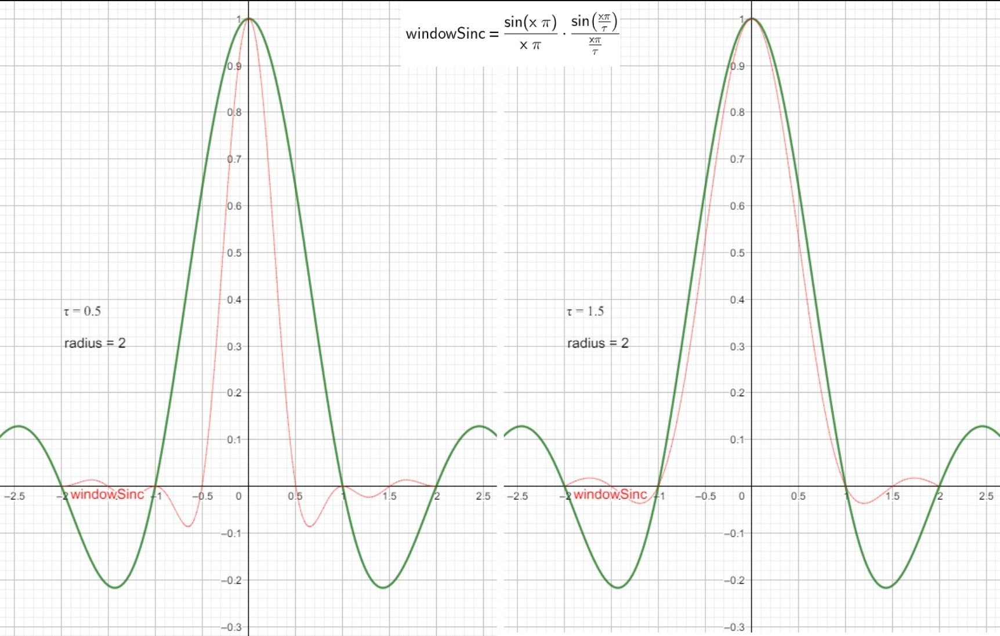
./PhysicallyBasedRendering/2020_06_21_lanczos_sinc_01.ggb
Float LanczosSincFilter::Sinc(Float x) const { x = std::abs(x); if (x < 1e-5) return 1; return std::sin(Pi * x) / (Pi * x); } // radius 控制Filter的半径 // tau 控制Filter的周期 Float LanczosSincFilter::WindowedSinc(Float x, Float radius) const { x = std::abs(x); if (x > radius) return 0; Float lanczos = Sinc(x / tau); return Sinc(x) * lanczos; }
Film and The imaging pipeline
摄像机的传感器或胶片有一个神奇的效果，其可以将入射光转化为带颜色的图片。pbrt 中，Film 类就是对传感器的建模。每个摄像机射线对应的辐射率被计算出来后，Film 的实现确定了胶片上每个像素周围的样本对该像素的贡献，然后更新其所表示的图片。当渲染主循环结束后，Film 类会将最终的图片写入到一个文件中。
Film Class
crop window 指定了实际被存储和写出的像素的边界。Crop window 有利于调试，并且将大图片划分为多个小图使其可以在多个电脑上被渲染。Crop window 为 NDC 空间的坐标值。
struct Pixel { Pixel() { xyz[0] = xyz[1] = xyz[2] = filterWeightSum = 0; } // 运行时对像素有贡献的光谱权重和被表示为XYZ颜色并且被存储在Pixel对象的xyz成员变量中 Float xyz[3]; // filterWeightSum存储了样本对像素贡献的过滤器权重和 Float filterWeightSum; // splatXYZ存储了无权重的样本和 AtomicFloat splatXYZ[3]; // 该成员没有实际用途，只是确保Pixel对象为32字节而不是28字节。 // 这可以让Pixel对象在cache中对齐，避免缓存失败 Float pad; }; // 存储Film对应的像素数据 std::unique_ptr<Pixel[]> Film::pixels; // filter 预计算值表 static int filterTableWidth = 16; Float filterTable[filterTableWidth*filterTableWidth];
选择 XYZ 颜色而不是 RGB 是为了强调 XYZ 是独立于显示器的颜色表示方式，而 RGB 需要假定一组特定的显示器响应曲线。
Film 预计算了一个过滤器值表，从而可以避免耗时的虚函数 Filter::Evaluate()调用。没有用每个样本的精确位置来计算过滤器值会引入一些错误，但是实践上这种错误并不明显。
Film 的责任是确定整数像素值的范围，Sampler 的责任是为这些像素值生成样本。Film::GetSampleBounds 返回被采样的区域，因为像素重建过滤器通常跨越多个像素，因此 Sampler 生成的图片样本必须稍为超出被输出的像素的范围。这样即使是边界处的像素也会有相同的样本密度。这对于通过 crop windows 一片一片渲染图片来说也很重要，其避免了子图片边界处的 artifacts。
Bounds2i Film::GetSampleBounds() const { Bounds2f floatBounds(Floor(Point2f(croppedPixelBounds.pMin) + Vector2f(0.5f, 0.5f) - filter->radius), Ceil(Point2f(croppedPixelBounds.pMax) - Vector2f(0.5f, 0.5f) + filter->radius)); return (Bounds2i)floatBounds; }
Supplying Pixel Values To The Film
有三种方式将样本的贡献提供给胶片。第一种方式是由 Sampler 在图片的 tiles 上生成的样本驱动的。尽管这种最简单直接的方法允许渲染器提供一个胶片像素位置以及一个直接指向胶片像素的射线携带的光谱，但是在多线程下无法为这种方式提供一个高效的实现，因为这种情况下多个线程可能会同时更新图片的同一部分。
Film 定义了一个接口，多个线程可以指定其生成的样本在某个像素范围。给定样本范围，GetFileTile()返回指向 FileTile 对象的指针，FileTile 中存储了在对应区域中，样本对该区域像素的贡献。FileTile 和其存储的数据对于调用者来说是独自占有的，因此线程可以提供样本值给 FilmTile 而不需要担心其他线程争夺。当线程在 tile 上的工作完成后，其会将完成的 tile 传回给 Film，Film 会将 tile 合并到最终的图片中。
// pFilm为胶片上样本的位置 // L为该样本对应的辐射率 // sampleWeight 为该样本的权重 void FilmTile::AddSample(const Point2f &pFilm, const Spectrum &L, Float sampleWeight = 1.) { // 计算当前样本影响的像素区域 // Compute sample's raster bounds Point2f pFilmDiscrete = pFilm - Vector2f(0.5f, 0.5f); Point2i p0 = (Point2i)Ceil(pFilmDiscrete - filterRadius); Point2i p1 = (Point2i)Floor(pFilmDiscrete + filterRadius) + Point2i(1, 1); p0 = Max(p0, pixelBounds.pMin); p1 = Min(p1, pixelBounds.pMax); // Loop over filter support and add sample to pixel arrays // 预计算对于每个像素该样本对应的过滤器权重 // Precompute $x$ and $y$ filter table offsets int *ifx = ALLOCA(int, p1.x - p0.x); for (int x = p0.x; x < p1.x; ++x) { // 查找表索引计算方法 distance / Radius * filterTableWidth // filterTableWidth = filterTableHeight = filterTableSize Float fx = std::abs((x - pFilmDiscrete.x) * invFilterRadius.x * filterTableSize); ifx[x - p0.x] = std::min((int)std::floor(fx), filterTableSize - 1); } int *ify = ALLOCA(int, p1.y - p0.y); for (int y = p0.y; y < p1.y; ++y) { Float fy = std::abs((y - pFilmDiscrete.y) * invFilterRadius.y * filterTableSize); ify[y - p0.y] = std::min((int)std::floor(fy), filterTableSize - 1); } for (int y = p0.y; y < p1.y; ++y) { for (int x = p0.x; x < p1.x; ++x) { // Evaluate filter value at $(x,y)$ pixel int offset = ify[y - p0.y] * filterTableSize + ifx[x - p0.x]; Float filterWeight = filterTable[offset]; // 计算过滤后的样本对于像素的贡献 // Update pixel values with filtered sample contribution FilmTilePixel &pixel = GetPixel(Point2i(x, y)); pixel.contribSum += L * sampleWeight * filterWeight; pixel.filterWeightSum += filterWeight; } } }
Image output
给定显示设备的响应特性，可以将像素值从设备独立的 XYZ 值转化为依赖于设备的 RGB 值。这种转化对应于另一种光谱基的改变，新的基是由显示设备的光谱响应曲线决定的。此处，从 XYZ 到设备 RGB 的转化使用的权重是基于 sRGB 的。sRGB 是标准的颜色空间，其被所有显示设备和打印设备所支持。
随着输出的 RGB 值被初始化，最终的值由，计算像素过滤方程得到即 contribSum/filterWeightSum。这个转变可能会导致 RGB 值的某些分量为负值；这些是色域外的颜色，其无法被选择的显示基色表示。有多种方案可以解决该问题，例如，将值截断到 0，或者偏移所有分量使其落在色域内，或者基于所有的像素执行一个全局的优化。重建的像素也可能会为负值，这是由于重建过滤函数中存在负波瓣。此处，将颜色值截断为 0 来解决同时这两种情况导致的负值。
Part 3 Light And Scatter
8 Reflection models
表面反射模型的来源：
- 测量数据：很多真实世界中的反射数据都已经被测量。这些数据可以直接被以表格的形式被使用，或者可用于计算一系列基础函数的系数。
- 现象模型：尝试描述真实世界表面属性的方程对于模拟表面反射显然很有效。这种类型的 BSDFs 特别易于使用，因为他们使用的都是直观的参数(例如，roughness)。
- 模拟：有时候，组成表面的底层信息是知道的。例如，我们知道图画是由颜色颗粒浮在媒介上组成的，表面的反射属性都是知道的。这种情况下，可以通过生成反射数据来模拟光线的散射。这种模拟可以在渲染期间执行，也可以通过预处理来执行。随后，其使用于一组基础函数，可在渲染期间使用。
- 物理光学：使用详细的光学模型可以推导出反射模型，将光当作一种波并使用 Maxwell 方程进行求解，从而得到光在表面如何反射。这种模型计算非常昂贵，但是对于渲染应用来说没有明显地比基于几何光学的模型更精确。
- 几何光学：类似模拟方式。如果已知表面的底层散射属性和几何属性，可以导出封闭式的反射模型。几何光学更易于追踪模拟光和表面的交互，因为极化等复杂的波效应被忽略了。
表面的反射可以被分为四种类型：diffuse，glossy specular, perfect specular, retro-reflective. 如下图所示。大多数真实表面的反射展现出的是这四种类型的混合。
给定反射的类型，反射的分布函数可能是 isotropic 也可能是 anisotropic。大多数对象是各项同性的：选择表面上一点，绕法线轴旋转该点，反射光线的分布是不变的。与此相反，各向异性材质反射不同总量的光到不同的方向。
需要注意 pbrt 中如下一些惯例和细节：
- 入射光方向 wi 以及出射的视角方向 wo 被变换到表面的本地坐标系后都会被单位化，并且都指向外面。
- 表面法线总是指向物体的外面，这样可以很容易确定光是进入还是离开物体：如果光方向和法线在同一个半球内，则光线进入物体。否则光线离开物体。pbrt 没有像很多其他渲染器那样，对法线进行反向使得法线和 wo 在同一边。
- 用于渲染的本地坐标系和 Shape::Intersect 函数使用的坐标系不完全一样。其可被修改来达到 bump mapping 的效果。
- BRDF 和 BTDF 的实现不应该关心 wi 和 wo 是否在同一个半球内。
Basic Interface
virtual Spectrum BxDF::f(const Vector3f &wo, const Vector3f &wi) const = 0;
给定一对入射光方向和反射光方向，计算此时 bxdf 的值（但考虑了反射光谱分布）。例如：MicrofacetReflection::f() 返回的值为 R * DGF/(4*cosThetaI*cosThetaO)
virtual Spectrum BxDF::Sample_f(const Vector3f &wo, Vector3f *wi, const Point2f &sample, Float *pdf, BxDFType *sampledType = nullptr) const; Spectrum MicrofacetTransmission::Sample_f(const Vector3f &wo, Vector3f *wi, const Point2f &u, Float *pdf, BxDFType *sampledType) const { if (wo.z == 0) return 0.; Vector3f wh = distribution->Sample_wh(wo, u); Float eta = CosTheta(wo) > 0 ? (etaA / etaB) : (etaB / etaA); if (!Refract(wo, (Normal3f)wh, eta, wi)) return 0; *pdf = Pdf(wo, *wi); return f(wo, *wi); } Float BxDF::Pdf(const Vector3f &wo, const Vector3f &wi) const { return SameHemisphere(wo, wi) ? AbsCosTheta(wi) * InvPi : 0; }
给定反射光方向时，计算对应的入射光方向以及此时的 BxDF 值。例如：MicrofacetReflection::Sample_f() 返回的值为 MicrofacetReflection::f()
对于完美镜面物体(如：镜子，玻璃，水)，这些物体只会将一个入射方向的光散射到一个出射方向。这类 BxDFs 最好使用 delta 分布(在特定值处不为零，其他都为另)来描述。BxDF::Sample_f()用于处理 delta 分布描述的散射，也用于处理散射光沿多个方向时，需要随机采样方向的情况（MonteCarlo BSDF 采样）。
reflectance
考虑 4 维 BRDF 或 BTDF 聚合行为是很有用的。定义一个在多对方向上的函数，然后将其降低为只在一个方向上的 2D 函数来描述整体的散射行为。
Hemispherical-directional reflectance (半球-方向 反射)为一个 2D 函数，对于半球空间上为常量照明的情况下，其可以给出在给定方向上的总的反射。等价地，其可以给出由于从给定方向上的入射光导致的在半球空间上的整体反射。其定义如下：
推导：
// rho 就是希腊字母的 \rho 读“肉” 表示 reflectance ^_^ BxDF::rho(const Vector3f &wo, int nSamples, const Point2f *samples)
Hemispherical-hemispherical reflectance（半球-半球 反射）当入射光在各个方向上都相同时，其可以给出被表面反射的入射光部分。其定义如下：
推导：
BxDF::rho(int nSamples, const Point2f *samples1, const Point2f *samples2)
Tips: 此处的 \(\rho\) 描述的是某种光照情况下整体的散射行为。
- \(\rho_{hd}\) 表示入射光为特定方向，反射光在半球空间均匀分布的情况下，此时的反射率。或者入射光在半球空间均匀分布，出射光为特定方向
- Reflectance https://en.wikipedia.org/wiki/Reflectance
- pbr 中什么时候调用 rho？
pbr 中由 BSDF::rho 依次调用其包含的 BxDF::rho，但是源代码中并没有调用 BSDF::rho 的地方。
Specular Reflection And Transmission
光在光滑的完美表面上的行为，使用物理和几何光学模型非常容易分析和描述。这些表面展现了入射光完美的镜面反射和透射。给定入射方向 wi 方向，所有的光都被散射到单个出射方向 wo。
对于镜面反射来说:
\(\theta_i = \theta_o\)
\(\phi_o = \phi_i + \pi\)
对于透射来说:
\(\phi_o = \phi_i + \pi\)
\(\eta_i*sin(\theta_i)=\eta_t*sin(\theta_t)\)
通常折射率会随光的波长而变化。因此入射光在两种介质的边界处会被散射到多个方向，这种现象被称为色散(dispersion)。实践中通常会忽略这种波长依赖性，因为这种效果通常来说对于视觉精确性并不重要，而且这极大简化了光的传播计算。
Fresnel Reflectance
除了反射和透射方向，计算入射光的反射和透射量也很重要。菲涅尔方程描述了表面反射的光的量。菲涅尔方程为 Maxwell 方程在光滑表面下求解出来的。
不同材质分类：
- dielectrics 电介质。这种材质不会导电。
他们的折射率为实数，通常其折射率范围为 1 到 3。
这种材质会透射一部分照明。典型的电介质有玻璃，石油，水以及空气。 - 导体。这种材质中，价电子可以在其原子晶格内自由移动，从而使电流从一个地方流到另一个地方。当导体受到电磁辐射(如可见光)时，其行为会非常不同于电介质：
材质会表现为不透明。会反射回明显的一部分光。另一部分光会进入导体内部，并被很快吸收（通常在材质表面 0.1 微米内就被完全吸收了，因此只有从非常薄的金属透过的光才能被可感知到）。因此在 pbrt 中忽略导体的透射。
和电介质不同，导体的折射率为复数。n' = n + ik - 半导体。硅、锗等属于半导体。pbrt 中不考虑这种材质。
导体和电介质都遵循相同的菲涅尔方程。尽管如此，我们更倾向于为电介质创建一个特殊的方程，从而从这种特定的简单形式中获得便利。
下图为电介质对应的菲涅尔方程：
下图为部分电介质的折射率：
当光从一种介质 A 到达另一种折射率比较低的介质 B，在入射角接近 90 度时，将没有光进入介质 B。发生这种全反射的最小入射角被称为临界角。当入射角大于临界角时，发生全反射，此时不需要计算菲涅尔方程。
电介质和导体边界处的菲涅尔方程为：

FrDielectric(Float cosThetaI, Float etaI, float etaT) 函数用来为电介质材质计算 Fresnel 反射公式。
FrConductor(Float cosThetaI, cost Spectrum &etai, const Spectrum &etat, const Spectrum &k) 函数用来为导体材质计算 Fresnel 反射公式。
方便起见，实现了 Fresnel FresnelConductors FresnelDielectrics 三个类来用于计算菲涅尔反射的系数：
class Fresnel { public: // Fresnel Interface virtual ~Fresnel(); virtual Spectrum Evaluate(Float cosI) const = 0; virtual std::string ToString() const = 0; }; class FresnelConductor : public Fresnel { public: Spectrum Evaluate(Float cosThetaI) const { return FrConductor(std::abs(cosThetaI), etaI, etaT, k); } FresnelConductor(const Spectrum &etaI, const Spectrum &etaT, const Spectrum &k) : etaI(etaI), etaT(etaT), k(k) {} std::string ToString() const; private: Spectrum etaI, etaT, k; }; class FresnelDielectric : public Fresnel { public: Spectrum Evaluate(Float cosThetaI) const { return FrDielectric(cosThetaI, etaI, etaT); } FresnelDielectric(Float etaI, Float etaT) : etaI(etaI), etaT(etaT) {} std::string ToString() const; private: Float etaI, etaT; };
下图展示了 Gold 的折射率实数部分和虚数部分，这两个值都和波长相关：
- 菲涅耳方程 https://zhuanlan.zhihu.com/p/31534769
- 什么是偏振光？http://www.coozhi.com/shenghuojiaju/shenghuochangshi/110199.html
可以通过 Schlick's approximation 来近似计算菲涅尔方程：
\(F = F0 + (1-F0)(1-cos(I))^5\)
\(F0 = ((n1-n2)/(n1+n2))^2\)
I 为入射角
F0 为入射角为 0 时，菲涅尔方程的值
入射角很大时，Fresnel 现象会很明显，此时 Fresnel 值几乎为 1。上面的 Schlick 近似可以看作是对 I=0 （F=F0）和 I=90 (F=1)时的插值，只不过插值方式不是线性的。
Specular Reflection
Tips:
完美镜面反射下，fr(双向反射分布函数)和 Fr(菲涅尔方程)并不相等！双向反射分布函数是 dLo 和 dEi 的比值，其需要考虑所有入射光方向综合的情况。菲涅尔方程是 dLo 和 dLi 的比值，其不需要考虑各个方向综合的情况。
// SpecularReflection BxDF 为 反射+完美镜面 SpecularReflection(const Spectrum &R, Fresnel *fresnel) : BxDF(BxDFType(BSDF_REFLECTION | BSDF_SPECULAR)), R(R), fresnel(fresnel) {} // 对于任意给定的入射方向和出射方向，没有反射 Spectrum SpecularReflection::f(const Vector3f &wo, const Vector3f &wi) const { return Spectrum(0.f); } // 对于给定出射方向，返回期望的入射光方向，以及反射的光谱 Spectrum SpecularReflection::Sample_f(const Vector3f &wo, Vector3f *wi, const Point2f &sample, Float *pdf, BxDFType *sampledType) const { // Compute perfect specular reflection direction *wi = Vector3f(-wo.x, -wo.y, wo.z); *pdf = 1; return fresnel->Evaluate(CosTheta(*wi)) * R / AbsCosTheta(*wi); }
Specular Transmission
镜面透射向量通过折射定律来获得：
// SpecularTransmission 的BxDF类型为 透射+完美镜面 SpecularTransmission(const Spectrum &T, Float etaA, Float etaB, TransportMode mode) : BxDF(BxDFType(BSDF_TRANSMISSION | BSDF_SPECULAR)), T(T), etaA(etaA), etaB(etaB), fresnel(etaA, etaB), mode(mode) {}
Fresnel-Modulated Specular Reflection and Transmission
// FresnelSpecular 的BxDF类型为 反射+透射+完美镜面 FresnelSpecular(const Spectrum &R, const Spectrum &T, Float etaA, Float etaB, TransportMode mode) : BxDF(BxDFType(BSDF_REFLECTION | BSDF_TRANSMISSION | BSDF_SPECULAR)), R(R), T(T), etaA(etaA), etaB(etaB), fresnel(etaA, etaB), mode(mode) {} // FresnelSpecular f 返回0，因为是完美镜面，所以指定入射方向和出射方向对应的辐射率为0 Spectrum FresnelSpecular::f(const Vector3f &wo, const Vector3f &wi) const { return Spectrum(0.f); }
FresnelSpecular 详细实现请参考下面部分：
FresnelSpecular Sample_f 以及 Pdf
Lambertian Reflection
Lambertain 模型是最简单的 BRDF 模型之一。其模拟了完美的漫反射表面，其将入射照明等可能地散射到所有方向。
// R 为反射光谱，其给出入射光可以被反射的部分 LambertianReflection(const Spectrum &R) : BxDF(BxDFType(BSDF_REFLECTION | BSDF_DIFFUSE)), R(R) {} Spectrum LambertianReflection::f(const Vector3f &wo, const Vector3f &wi) const { return R * InvPi; } // 没必要通过统计的方法来计算 // 完美漫反射，将所有入射光都均匀反射到半球空间中，所以其反射率为R Spectrum rho(const Vector3f &wo, int nSamples, const Point2f *samples) const { return R; } Spectrum rho(int nSamples, const Point2f *samples1, const Point2f *samples2) const { return R; }
- PBR Step by Step（一）立体角 https://www.cnblogs.com/jerrycg/p/4924761.html
- PBR Step by Step（四）Lambertian 反射模型 https://www.cnblogs.com/jerrycg/p/4941359.html
Microfacet Models
很多基于几何光学的模型，在模拟表面反射和透射时，都采用了下面这种理念：将粗糙的表面模拟为一系列小的微表面(microfacets)。由微表面组成的表面通常建模为高度场，微表面朝向的分布通过统计方法来表示。下图展示了一个比较粗糙的表面和一个比较光滑的表面：
使用微表面模型计算反射时，需要考虑下图所示的微表面层次的局部光照效果：
Oren-Nayar Diffuse Reflection
下图展示了 Oren-Nayar 模型
Microfacet Distribution Function
微表面分布函数定义在和 BSDF 一样的坐标系下。
// 微表面分布 class MicrofacetDistribution { public: // MicrofacetDistribution Public Methods virtual ~MicrofacetDistribution(); // 法线分布 virtual Float D(const Vector3f &wh) const = 0; virtual Float Lambda(const Vector3f &w) const = 0; Float G1(const Vector3f &w) const { return 1 / (1 + Lambda(w)); } // 几何分布 Float G(const Vector3f &wo, const Vector3f &wi) const { return 1 / (1 + Lambda(wo) + Lambda(wi)); } virtual Vector3f Sample_wh(const Vector3f &wo, const Point2f &u) const = 0; // wo出射方向，wh法线方向对应的概率密度 Float Pdf(const Vector3f &wo, const Vector3f &wh) const; virtual std::string ToString() const = 0; protected: // MicrofacetDistribution Protected Methods MicrofacetDistribution(bool sampleVisibleArea) : sampleVisibleArea(sampleVisibleArea) {} // MicrofacetDistribution Protected Data const bool sampleVisibleArea; }; Float MicrofacetDistribution::Pdf(const Vector3f &wo, const Vector3f &wh) const { if (sampleVisibleArea) return D(wh) * G1(wo) * AbsDot(wo, wh) / AbsCosTheta(wo); else return D(wh) * AbsCosTheta(wh); }
为了保证物理上的合理性，微表面函数必须要归一化的（即遵守一定的约束条件）。直观地讲，如果我们考虑在法线方向上，微表面上的入射射线，每个射线和微表面只相交一次。形式化的表示就是，给定一个微表面微分区域 dA,微表面在该区域的投影必须等于 dA.如下图所示：
下面链接中详细描述了法线分布需要遵守的约束条件：
- https://www.cs.cornell.edu/~srm/publications/EGSR07-btdf.pdf
- Microfacet Distribution Function 微表面分布函数 D
下图展示了两种法线分布函数：
Masking And Shadowing
只用微表面的法线分布来描述微表面的性质是不够的。从给定的方向观察或照射时，因为一些微表面背对着指定方向，所以这些微表面是不可见的，另一些微表面由于其他微表面的遮挡也可能是不可见的，这种效果可以通过 Smith 的 masking-shadowing 函数 G1(w, wh)来描述，其给出对于指定的法线 wh，从 w 方向观察或照射，可见的微表面。(0<=G1(w, wh)<=1)。通常来说，微表面可见的概率独立于他们的朝向 wh。
下图展示了 G1 的归一化约束：

注意：正对 w 方向区域并不都是可见的。
给定 D(wh),假设微表面上相邻点的高度无关联，可得如下公式：
G(ωo, ωi) 给出在ωo 和ωi 方向上都可见的微表面。定义 G 需要额外的假设。我们假设两个方向上可见的可能性互相独立，则得到 G 的方程：G(ωo, ωi) = G1(ωo) G1(ωi)
实践中，两个方向上微表面可见性并不是独立的。考虑特殊情况 ωo = ωi ;此时 G(ωo, ωi) = G1(ωo) = G1(ωi); ωo 和ωi 夹角越小相关性越大。假定给定的点越高微表面可见性越大，在此假设下可推出如下 G 的方程：
Torrance-Sparrow Model (MicrofacetReflection MicrofacetTransmission)
Torrance-Sparrow Model 描述的是粗糙表面的反射。
Torrance-Sparrow Model 推导参考 No description for this link
\(dw_h dw_o\) 关系的另一种推导方式：
粗糙表面的透射可以参考下面论文，其中也包含了 brdf 的推导。
- Microfacet Models for Refraction through Rough Surfaces http://www.cs.cornell.edu/~srm/publications/EGSR07-btdf.pdf
- Microfacet models for reflection and refraction https://www.cs.cornell.edu/courses/cs6630/2012sp/slides/05ufacet.pdf
MicrofacetReflection(const Spectrum &R, MicrofacetDistribution *distribution, Fresnel *fresnel) : BxDF(BxDFType(BSDF_REFLECTION | BSDF_GLOSSY)), R(R), distribution(distribution), fresnel(fresnel) {} Spectrum MicrofacetReflection::f(const Vector3f &wo, const Vector3f &wi) const { Float cosThetaO = AbsCosTheta(wo), cosThetaI = AbsCosTheta(wi); Vector3f wh = wi + wo; // Handle degenerate cases for microfacet reflection if (cosThetaI == 0 || cosThetaO == 0) return Spectrum(0.); if (wh.x == 0 && wh.y == 0 && wh.z == 0) return Spectrum(0.); wh = Normalize(wh); Spectrum F = fresnel->Evaluate(Dot(wi, wh)); return R * distribution->D(wh) * distribution->G(wo, wi) * F / (4 * cosThetaI * cosThetaO); }
MicrofacetTransmission(const Spectrum &T, MicrofacetDistribution *distribution, Float etaA, Float etaB, TransportMode mode) : BxDF(BxDFType(BSDF_TRANSMISSION | BSDF_GLOSSY)), T(T), distribution(distribution), etaA(etaA), etaB(etaB), fresnel(etaA, etaB), mode(mode) {} Spectrum MicrofacetTransmission::f(const Vector3f &wo, const Vector3f &wi) const { if (SameHemisphere(wo, wi)) return 0; // transmission only Float cosThetaO = CosTheta(wo); Float cosThetaI = CosTheta(wi); if (cosThetaI == 0 || cosThetaO == 0) return Spectrum(0); // Compute $\wh$ from $\wo$ and $\wi$ for microfacet transmission Float eta = CosTheta(wo) > 0 ? (etaB / etaA) : (etaA / etaB); Vector3f wh = Normalize(wo + wi * eta); if (wh.z < 0) wh = -wh; Spectrum F = fresnel.Evaluate(Dot(wo, wh)); Float sqrtDenom = Dot(wo, wh) + eta * Dot(wi, wh); Float factor = (mode == TransportMode::Radiance) ? (1 / eta) : 1; return (Spectrum(1.f) - F) * T * std::abs(distribution->D(wh) * distribution->G(wo, wi) * eta * eta * AbsDot(wi, wh) * AbsDot(wo, wh) * factor * factor / (cosThetaI * cosThetaO * sqrtDenom * sqrtDenom)); }
Fresnel Incidence Effects
对于分层物体，图形学中很多 BRDF 模型没有考虑，菲涅尔反射减少了到达底层的光。考虑一张光滑的木桌子或一面涂有光泽涂料的墙：如果你正对着这些表面看，你主要看到的是木头或涂料的颜色。当你移动视角到掠射角，你看到很少的底层颜色，由于菲涅尔效果，其被增加的反射光泽所淹没。
上面公式证明请参考论文 《An Anisotropic Phong Light Reflection Model》(我没看 ^_^)
FresnelBlend::FresnelBlend(const Spectrum &Rd, const Spectrum &Rs, MicrofacetDistribution *distribution) : BxDF(BxDFType(BSDF_REFLECTION | BSDF_GLOSSY)), Rd(Rd), Rs(Rs), distribution(distribution) {} Spectrum FresnelBlend::f(const Vector3f &wo, const Vector3f &wi) const { auto pow5 = [](Float v) { return (v * v) * (v * v) * v; }; // 注意下面 Rd * (Spectrum(1.f) - Rs)部分，和Unity中reflectivity的计算一样。Unity中就是通过这种方式粗略地遵守能量守恒。 Spectrum diffuse = (28.f / (23.f * Pi)) * Rd * (Spectrum(1.f) - Rs) * (1 - pow5(1 - .5f * AbsCosTheta(wi))) * (1 - pow5(1 - .5f * AbsCosTheta(wo))); Vector3f wh = wi + wo; if (wh.x == 0 && wh.y == 0 && wh.z == 0) return Spectrum(0); wh = Normalize(wh); Spectrum specular = distribution->D(wh) / (4 * AbsDot(wi, wh) * std::max(AbsCosTheta(wi), AbsCosTheta(wo))) * SchlickFresnel(Dot(wi, wh)); return diffuse + specular; }
Fourier Basis BSDFs
尽管上面的反射模型可以表示很多材质，但是对于某些材质，上面的模型表现并不好（例如，带有光滑或粗糙清漆的金属，或者纤维。这些材质通常包含逆反射 retro-reflective）。对于这种材质，有一种方法是将他们的 BSDF 值存储在一个巨大的 3D 或 4D 查找表中，然而这种方式需要太大的存储空间（如果 wi 和 wo 按照球面角为 1 度的间隔进行采样，需要 10 亿个样本点来表示对应的各向异性 BSDF）
FourierBSDF 表示各项同性的 BSDF 时，会使用球坐标系的形式。
上面公式中的 ak 在其输入参数上是离散分布的。我们选择一组天顶角的 cos 值 μ= {μ0, . . . , μn−1}，为每一对μi,μj 存储对应的 ak(μi,μj)。可以将每个 ak 当作一个 nxn 的矩阵，整个 BRDF 表示就由 m 个这样的矩阵组成。每一个矩阵描述了对于入射照明在材质中的不同方位角的震荡频率。
最大阶 m 的值需要通过计算上面傅里叶展开公式来满足精度变化需求，其依赖于特定的天顶角，因此对于给定的一对方向，调节系数 ak 的数量来适应 BSDF 的复杂度是很值得的。这样做对于数据的紧密性很重要。
考虑完美镜面反射的情况，可看出系数数目的可变性:
当μi 和μo 接近时(μi ≈ μo)，此时为了精确表示 specular lobe 需要很多系数(此时对应的频率比较高)，对于大部分方位角差(φ = φi− φo)来说，其值为 0，而对于靠近φ = π的一组方向来说，其值很大。
当μi 和μo 不同时，只需要一项来表示 BSDF 为 0。
为了让 BSDF 对于所有的(μi,μo)对更加平滑，需要多个 ak 系数来精确表示φ的分布，但是光滑性意味着通常不需要太多的系数。FourierBSDF 开发了这种属性并且只存储一组离散的系数就可以达到想要的精度。
为了使构建的 BSDF 非常平滑，对于 ak 系数的计算采用了张量积样条(tensor-product spline)。对于每个 ak 系数，其计算方法如下：
当 ak 系数多时，可以通过下面三角函数关系，优化 FourierBSDF 公式的求解（利用之前计算的 cos 值计算当前的 cos 值）：
- 张量的概念 https://www.cnblogs.com/arxive/p/4967486.html
- 马同学 张量专题 1 https://www.matongxue.com/madocs/683/
- 马同学 张量专题 2 https://www.matongxue.com/madocs/692/
- 马同学 张量专题 3 https://www.matongxue.com/madocs/708/
Spline Interpolation
已知函数 f 在 x0,x1,…,xk 处的一组函数值，和导函数值。对于每一段[x(i),x(i+1)]，我们可以使用一个三次曲线进行近似 pi(x) = 3x^3 + bx^2 + cx + d;
选择 pi(x)函数时，其需要满足以下条件：
pi(xi) = f(xi)
pi(xi+1)=f(xi+1)
pi'(xi) = f'(xi)
pi'(xi+1) = f'(xi+1)
为了简化讨论，我们只考虑[x0,x1]，并且假设[x0,x1]=[0,1]
求解 a,b,c,d 系数可得：
a = f'(x0) + f'(x1) + 2f(x0) - 2f(x1)
b = 3f(x1) - 3f(x0) - 2f'(x0) - f'(x1)
c = f'(x0)
d = f(x0)
带入后可得:
p(x) = (2x^3 - 3x^2 + 1)f(x0) + (-2x^3+3x^2)f(x1) + (x^3-2x^2+x)f'(x0) + (x^3-x^2)f'(x1)
这种插值方式很方便，但是限制依然太强，因为通常我们无法知道导函数的信息。因此我们通过相邻的函数值 f(xi-1)和 f(xi+1)来计算近似的 f'(xi),这样可以计算处最终的 p(x)如下：
- catmull-rom 样条(spline)公式推导 https://zhuanlan.zhihu.com/p/111708587
9 Materials
BSDFs
BSDF 表示一个 BRDFs 和 BTDFs 的集合。
渲染法线会导致各种不同的 artifacts。
下图 a 展示了 light leak：几何 normal 表示ωi 和ωo 在表面的两侧，因此，如果表面不透射，光照是没有贡献的。然而，如果我们直接以 ns 为中心的半球内计算渲染方程，我们会将来自ωi 方向的光包括进来，这是不正确的。这种情况说明，此处不能使用 ns 来代替 ng 作为渲染计算。
下图 b 展示了一个类似的情况：渲染 normal 表示没有光线被反射到观察者，因为照明不在渲染 normal 表示的半球空间内，然而几何 normal 表示的半球空间中包含照明。
解决以上问题的方法为：使用几何 normal 来确定是是否计算，照明和几何法线在同一个半球空间则计算 BRDF，否则计算 BTDF。而在计算渲染方程时，依然使用渲染 normal 和入射方向的夹角，而不使用几何 normal。
Spectrum BSDF::f(const Vector3f &woW, const Vector3f &wiW, BxDFType flags) const { Vector3f wi = WorldToLocal(wiW), wo = WorldToLocal(woW); if (wo.z == 0) return 0.; // 入射光线、出射光线和几何法线在同一个半球空间则计算 BRDF，否则计算 BTDF bool reflect = Dot(wiW, ng) * Dot(woW, ng) > 0; Spectrum f(0.f); // bsdf 会循环叠加其包含的所有BxDF for (int i = 0; i < nBxDFs; ++i) if (bxdfs[i]->MatchesFlags(flags) && ((reflect && (bxdfs[i]->type & BSDF_REFLECTION)) || (!reflect && (bxdfs[i]->type & BSDF_TRANSMISSION)))) f += bxdfs[i]->f(wo, wi); return f; }
BSDF memory management
对于每个和几何体相交的射线，Integrator 在计算射线携带的辐射率时都会创建一个或多个 BSDF 对象，每个 BSDF 对象中又包含多个由 Materials 在交点处创建的 BxDFs。如果使用 new delete 为这些 BSDF 和 BxDFs 对象分配内存，效率会很差。使用 MemoryArena 来解决该问题。
BSDF *b = new BSDF; BxDF *lam = new LambertianReflection(Spectrum(0.5f)); BSDF *b = ARENA_ALLOC(arena, BSDF); BxDF *lam = ARENA_ALLOC(arena, LambertianReflection)(Spectrum(0.5f)); // 使用arena申请的内存，使用new执行类对象的初始化 #define ARENA_ALLOC(arena, Type) new (arena.Alloc(sizeof(Type))) Type
Material Interface And Implementations
class Material { // 该函数的职责为：确定交点处的反射属性并使用对应的BSDF对象初始化SurfaceInteraction::bsdf成员变量。如果材质包含次表面散射，SurfaceInteraction::bssrdf成员变量也需要被初始化。 // SurfaceInteraction *si, 射线和几何表面的交点 // MemoryArena &arena, 用于为BSDFs 和 BSSRDFs申请内存 // TransportMode mode, 用于指定交点是从摄像机出发的射线 还是从光源出发的射线 和表面相交得到的 // bool allowMultipleLobes 用于指定材质使用的BxDF是否是聚合了很多散射类型到单个BxDF。（例如：FresnelSpecular 就是聚合了反射和透射的BxDF） virtual void ComputeScatteringFunctions(SurfaceInteraction *si, MemoryArena &arena, TransportMode mode, bool allowMultipleLobes) = 0; }
Material 会创建对应的 BxDFs，将他们添加到 SurfaceInteraction 的 bsdf 中。
首先：SurfaceInteraction 的bsdf会对其中的BxDFs逐一计算f()和Pdf()值，求出对出射Radiance的贡献，将其叠加到总的Radiance中。
然后：如果光照不是DeltaLight，SurfaceInteraction 的bsdf会对其中的BxDFs逐一计算Sample_f()，求出对出射Radiance的贡献，将其叠加到总的Radiance中。
具体处理逻辑参考 integrator.cpp 中 EstimateDirect函数的实现。
Spectrum EstimateDirect(const Interaction &it, const Point2f &uScattering, const Light &light, const Point2f &uLight,
const Scene &scene, Sampler &sampler,
MemoryArena &arena, bool handleMedia, bool specular)
Matte Material
Matte Material 用于描述完全的漫反射材质
// Kd 为漫反射光谱值 // sigma 为粗糙度值(roughness) // bumpMap 为法线贴图 MatteMaterial(const std::shared_ptr<Texture<Spectrum>> &Kd, const std::shared_ptr<Texture<Float>> &sigma, const std::shared_ptr<Texture<Float>> &bumpMap) : Kd(Kd), sigma(sigma), bumpMap(bumpMap) {} void MatteMaterial::ComputeScatteringFunctions(SurfaceInteraction *si, MemoryArena &arena, TransportMode mode, bool allowMultipleLobes) const { // Perform bump mapping with _bumpMap_, if present if (bumpMap) Bump(bumpMap, si); // Evaluate textures for _MatteMaterial_ material and allocate BRDF si->bsdf = ARENA_ALLOC(arena, BSDF)(*si); Spectrum r = Kd->Evaluate(*si).Clamp(); Float sig = Clamp(sigma->Evaluate(*si), 0, 90); if (!r.IsBlack()) { // 粗糙度为0 则bsdf为LambertianReflection, 否则为OrenNayar if (sig == 0) si->bsdf->Add(ARENA_ALLOC(arena, LambertianReflection)(r)); else si->bsdf->Add(ARENA_ALLOC(arena, OrenNayar)(r, sig)); } }
Plastic Material
Plastic 可用于模拟反射效果中混合了漫反射和有光泽散射的材质。其实就是典型的电介质材质。
// PlasticMaterial Method Definitions void PlasticMaterial::ComputeScatteringFunctions(SurfaceInteraction *si, MemoryArena &arena, TransportMode mode, bool allowMultipleLobes) const { // Perform bump mapping with _bumpMap_, if present if (bumpMap) Bump(bumpMap, si); si->bsdf = ARENA_ALLOC(arena, BSDF)(*si); // Initialize diffuse component of plastic material Spectrum kd = Kd->Evaluate(*si).Clamp(); if (!kd.IsBlack()) { // 叠加一个Lambertian反射，kd为 diffuse color // LambertianReflection 的Pdf为默认的BxDF::Pdf 此处没有使用kd*(1-ks)来实现粗略能量守恒 si->bsdf->Add(ARENA_ALLOC(arena, LambertianReflection)(kd)); } // Initialize specular component of plastic material Spectrum ks = Ks->Evaluate(*si).Clamp(); if (!ks.IsBlack()) { // 使用FresnelDielectric来计算菲涅尔项 Fresnel *fresnel = ARENA_ALLOC(arena, FresnelDielectric)(1.5f, 1.f); // Create microfacet distribution _distrib_ for plastic material Float rough = roughness->Evaluate(*si); if (remapRoughness) rough = TrowbridgeReitzDistribution::RoughnessToAlpha(rough); MicrofacetDistribution *distrib = ARENA_ALLOC(arena, TrowbridgeReitzDistribution)(rough, rough); // 叠加一个微表面镜面反射，ks为 specular color BxDF *spec = ARENA_ALLOC(arena, MicrofacetReflection)(ks, distrib, fresnel); si->bsdf->Add(spec); } } PlasticMaterial *CreatePlasticMaterial(const TextureParams &mp) { // 默认diffuse color 为0.25,0.25,0.25 std::shared_ptr<Texture<Spectrum>> Kd = mp.GetSpectrumTexture("Kd", Spectrum(0.25f)); // 默认specular color 为0.25,0.25,0.25 std::shared_ptr<Texture<Spectrum>> Ks = mp.GetSpectrumTexture("Ks", Spectrum(0.25f)); std::shared_ptr<Texture<Float>> roughness = mp.GetFloatTexture("roughness", .1f); std::shared_ptr<Texture<Float>> bumpMap = mp.GetFloatTextureOrNull("bumpmap"); bool remapRoughness = mp.FindBool("remaproughness", true); return new PlasticMaterial(Kd, Ks, roughness, bumpMap, remapRoughness); }
Mix Material
Mix Material 实现按照权重值将两个 Material 合在一起。
void MixMaterial::ComputeScatteringFunctions(SurfaceInteraction *si, MemoryArena &arena, TransportMode mode, bool allowMultipleLobes) const { // scale 存储了混合权重 // Compute weights and original _BxDF_s for mix material Spectrum s1 = scale->Evaluate(*si).Clamp(); Spectrum s2 = (Spectrum(1.f) - s1).Clamp(); SurfaceInteraction si2 = *si; m1->ComputeScatteringFunctions(si, arena, mode, allowMultipleLobes); m2->ComputeScatteringFunctions(&si2, arena, mode, allowMultipleLobes); // Initialize _si->bsdf_ with weighted mixture of _BxDF_s int n1 = si->bsdf->NumComponents(), n2 = si2.bsdf->NumComponents(); // bxdfs for (int i = 0; i < n1; ++i) si->bsdf->bxdfs[i] = ARENA_ALLOC(arena, ScaledBxDF)(si->bsdf->bxdfs[i], s1); for (int i = 0; i < n2; ++i) si->bsdf->Add(ARENA_ALLOC(arena, ScaledBxDF)(si2.bsdf->bxdfs[i], s2)); }
Fourier Material
FourierMaterial 支持将测量或人工生成的 BSDF 表格数据转化为基于方向的 BSDF。
Additional Material
- GlassMaterial
void GlassMaterial::ComputeScatteringFunctions(SurfaceInteraction *si, MemoryArena &arena, TransportMode mode, bool allowMultipleLobes) const { // Perform bump mapping with _bumpMap_, if present if (bumpMap) Bump(bumpMap, si); Float eta = index->Evaluate(*si); Float urough = uRoughness->Evaluate(*si); Float vrough = vRoughness->Evaluate(*si); Spectrum R = Kr->Evaluate(*si).Clamp(); Spectrum T = Kt->Evaluate(*si).Clamp(); // Initialize _bsdf_ for smooth or rough dielectric si->bsdf = ARENA_ALLOC(arena, BSDF)(*si, eta); if (R.IsBlack() && T.IsBlack()) return; bool isSpecular = urough == 0 && vrough == 0; if (isSpecular && allowMultipleLobes) { // FresnelSpecular 是使用FrDielectric来计算菲涅尔项 si->bsdf->Add(ARENA_ALLOC(arena, FresnelSpecular)(R, T, 1.f, eta, mode)); } else { if (remapRoughness) { urough = TrowbridgeReitzDistribution::RoughnessToAlpha(urough); vrough = TrowbridgeReitzDistribution::RoughnessToAlpha(vrough); } MicrofacetDistribution *distrib = isSpecular ? nullptr : ARENA_ALLOC(arena, TrowbridgeReitzDistribution)(urough, vrough); if (!R.IsBlack()) { // 注意： Glass 材质没有diffuse反射 // 使用FresnelDielectric计算菲涅尔项 Fresnel *fresnel = ARENA_ALLOC(arena, FresnelDielectric)(1.f, eta); if (isSpecular) si->bsdf->Add(ARENA_ALLOC(arena, SpecularReflection)(R, fresnel)); else si->bsdf->Add(ARENA_ALLOC(arena, MicrofacetReflection)(R, distrib, fresnel)); } if (!T.IsBlack()) { if (isSpecular) si->bsdf->Add(ARENA_ALLOC(arena, SpecularTransmission)(T, 1.f, eta, mode)); else si->bsdf->Add(ARENA_ALLOC(arena, MicrofacetTransmission)(T, distrib, 1.f, eta, mode)); } } }
- MetalMateiral
void MetalMaterial::ComputeScatteringFunctions(SurfaceInteraction *si, MemoryArena &arena, TransportMode mode, bool allowMultipleLobes) const { // Perform bump mapping with _bumpMap_, if present if (bumpMap) Bump(bumpMap, si); si->bsdf = ARENA_ALLOC(arena, BSDF)(*si); Float uRough = uRoughness ? uRoughness->Evaluate(*si) : roughness->Evaluate(*si); Float vRough = vRoughness ? vRoughness->Evaluate(*si) : roughness->Evaluate(*si); if (remapRoughness) { uRough = TrowbridgeReitzDistribution::RoughnessToAlpha(uRough); vRough = TrowbridgeReitzDistribution::RoughnessToAlpha(vRough); } Fresnel *frMf = ARENA_ALLOC(arena, FresnelConductor)(1., eta->Evaluate(*si), k->Evaluate(*si)); MicrofacetDistribution *distrib = ARENA_ALLOC(arena, TrowbridgeReitzDistribution)(uRough, vRough); // 金属只包含 MicrofacetReflection，其不包含diffuse si->bsdf->Add(ARENA_ALLOC(arena, MicrofacetReflection)(1., distrib, frMf)); }
- MirrorMaterial
void MirrorMaterial::ComputeScatteringFunctions(SurfaceInteraction *si, MemoryArena &arena, TransportMode mode, bool allowMultipleLobes) const { // Perform bump mapping with _bumpMap_, if present if (bumpMap) Bump(bumpMap, si); si->bsdf = ARENA_ALLOC(arena, BSDF)(*si); Spectrum R = Kr->Evaluate(*si).Clamp(); // 只包含SpecularReflection if (!R.IsBlack()) si->bsdf->Add(ARENA_ALLOC(arena, SpecularReflection)(R, ARENA_ALLOC(arena, FresnelNoOp)())); }
- SubstrateMaterial
void SubstrateMaterial::ComputeScatteringFunctions(SurfaceInteraction *si, MemoryArena &arena, TransportMode mode, bool allowMultipleLobes) const { // Perform bump mapping with _bumpMap_, if present if (bumpMap) Bump(bumpMap, si); si->bsdf = ARENA_ALLOC(arena, BSDF)(*si); Spectrum d = Kd->Evaluate(*si).Clamp(); Spectrum s = Ks->Evaluate(*si).Clamp(); Float roughu = nu->Evaluate(*si); Float roughv = nv->Evaluate(*si); if (!d.IsBlack() || !s.IsBlack()) { if (remapRoughness) { roughu = TrowbridgeReitzDistribution::RoughnessToAlpha(roughu); roughv = TrowbridgeReitzDistribution::RoughnessToAlpha(roughv); } MicrofacetDistribution *distrib = ARENA_ALLOC(arena, TrowbridgeReitzDistribution)(roughu, roughv); // 只使用了FresnelBlend，FresnelBlend是考虑了能量守恒的Diffuse和Specular si->bsdf->Add(ARENA_ALLOC(arena, FresnelBlend)(d, s, distrib)); } }
- SubsurfaceMaterial
void SubsurfaceMaterial::ComputeScatteringFunctions(SurfaceInteraction *si, MemoryArena &arena, TransportMode mode, bool allowMultipleLobes) const { // Perform bump mapping with _bumpMap_, if present if (bumpMap) Bump(bumpMap, si); // Initialize BSDF for _SubsurfaceMaterial_ Spectrum R = Kr->Evaluate(*si).Clamp(); Spectrum T = Kt->Evaluate(*si).Clamp(); Float urough = uRoughness->Evaluate(*si); Float vrough = vRoughness->Evaluate(*si); // Initialize _bsdf_ for smooth or rough dielectric si->bsdf = ARENA_ALLOC(arena, BSDF)(*si, eta); if (R.IsBlack() && T.IsBlack()) return; bool isSpecular = urough == 0 && vrough == 0; if (isSpecular && allowMultipleLobes) { si->bsdf->Add(ARENA_ALLOC(arena, FresnelSpecular)(R, T, 1.f, eta, mode)); } else { if (remapRoughness) { urough = TrowbridgeReitzDistribution::RoughnessToAlpha(urough); vrough = TrowbridgeReitzDistribution::RoughnessToAlpha(vrough); } MicrofacetDistribution *distrib = isSpecular ? nullptr : ARENA_ALLOC(arena, TrowbridgeReitzDistribution)(urough, vrough); if (!R.IsBlack()) { Fresnel *fresnel = ARENA_ALLOC(arena, FresnelDielectric)(1.f, eta); // 没有包含diffuse if (isSpecular) si->bsdf->Add(ARENA_ALLOC(arena, SpecularReflection)(R, fresnel)); else si->bsdf->Add(ARENA_ALLOC(arena, MicrofacetReflection)(R, distrib, fresnel)); } if (!T.IsBlack()) { if (isSpecular) si->bsdf->Add(ARENA_ALLOC(arena, SpecularTransmission)(T, 1.f, eta, mode)); else si->bsdf->Add(ARENA_ALLOC(arena, MicrofacetTransmission)(T, distrib, 1.f, eta, mode)); } } Spectrum sig_a = scale * sigma_a->Evaluate(*si).Clamp(); Spectrum sig_s = scale * sigma_s->Evaluate(*si).Clamp(); si->bssrdf = ARENA_ALLOC(arena, TabulatedBSSRDF)(*si, this, mode, eta, sig_a, sig_s, table); }
- TranslucentMaterial
void TranslucentMaterial::ComputeScatteringFunctions( SurfaceInteraction *si, MemoryArena &arena, TransportMode mode, bool allowMultipleLobes) const { // Perform bump mapping with _bumpMap_, if present if (bumpMap) Bump(bumpMap, si); Float eta = 1.5f; si->bsdf = ARENA_ALLOC(arena, BSDF)(*si, eta); Spectrum r = reflect->Evaluate(*si).Clamp(); Spectrum t = transmit->Evaluate(*si).Clamp(); if (r.IsBlack() && t.IsBlack()) return; Spectrum kd = Kd->Evaluate(*si).Clamp(); // 包含 Lambertian diffuse & Lambertian transmission if (!kd.IsBlack()) { if (!r.IsBlack()) si->bsdf->Add(ARENA_ALLOC(arena, LambertianReflection)(r * kd)); if (!t.IsBlack()) si->bsdf->Add(ARENA_ALLOC(arena, LambertianTransmission)(t * kd)); } Spectrum ks = Ks->Evaluate(*si).Clamp(); if (!ks.IsBlack() && (!r.IsBlack() || !t.IsBlack())) { Float rough = roughness->Evaluate(*si); if (remapRoughness) rough = TrowbridgeReitzDistribution::RoughnessToAlpha(rough); MicrofacetDistribution *distrib = ARENA_ALLOC(arena, TrowbridgeReitzDistribution)(rough, rough); if (!r.IsBlack()) { // Tips: 半透明材质都是电介质 Fresnel *fresnel = ARENA_ALLOC(arena, FresnelDielectric)(1.f, eta); si->bsdf->Add(ARENA_ALLOC(arena, MicrofacetReflection)(r * ks, distrib, fresnel)); } if (!t.IsBlack()) si->bsdf->Add(ARENA_ALLOC(arena, MicrofacetTransmission)(t * ks, distrib, 1.f, eta, mode)); } }
- UberMaterial
void UberMaterial::ComputeScatteringFunctions(SurfaceInteraction *si, MemoryArena &arena, TransportMode mode, bool allowMultipleLobes) const { // Perform bump mapping with _bumpMap_, if present if (bumpMap) Bump(bumpMap, si); Float e = eta->Evaluate(*si); Spectrum op = opacity->Evaluate(*si).Clamp(); Spectrum t = (-op + Spectrum(1.f)).Clamp(); if (!t.IsBlack()) { si->bsdf = ARENA_ALLOC(arena, BSDF)(*si, 1.f); BxDF *tr = ARENA_ALLOC(arena, SpecularTransmission)(t, 1.f, 1.f, mode); si->bsdf->Add(tr); } else si->bsdf = ARENA_ALLOC(arena, BSDF)(*si, e); Spectrum kd = op * Kd->Evaluate(*si).Clamp(); if (!kd.IsBlack()) { // 包含diffuse 部分 Lambertian Reflection BxDF *diff = ARENA_ALLOC(arena, LambertianReflection)(kd); si->bsdf->Add(diff); } Spectrum ks = op * Ks->Evaluate(*si).Clamp(); if (!ks.IsBlack()) { Fresnel *fresnel = ARENA_ALLOC(arena, FresnelDielectric)(1.f, e); Float roughu, roughv; if (roughnessu) roughu = roughnessu->Evaluate(*si); else roughu = roughness->Evaluate(*si); if (roughnessv) roughv = roughnessv->Evaluate(*si); else roughv = roughu; if (remapRoughness) { roughu = TrowbridgeReitzDistribution::RoughnessToAlpha(roughu); roughv = TrowbridgeReitzDistribution::RoughnessToAlpha(roughv); } MicrofacetDistribution *distrib = ARENA_ALLOC(arena, TrowbridgeReitzDistribution)(roughu, roughv); // 包含 glossy reflection : MicrofacetReflection BxDF *spec = ARENA_ALLOC(arena, MicrofacetReflection)(ks, distrib, fresnel); si->bsdf->Add(spec); } Spectrum kr = op * Kr->Evaluate(*si).Clamp(); if (!kr.IsBlack()) { Fresnel *fresnel = ARENA_ALLOC(arena, FresnelDielectric)(1.f, e); // 包含 specular reflection : SpecularReflection si->bsdf->Add(ARENA_ALLOC(arena, SpecularReflection)(kr, fresnel)); } Spectrum kt = op * Kt->Evaluate(*si).Clamp(); if (!kt.IsBlack()) si->bsdf->Add(ARENA_ALLOC(arena, SpecularTransmission)(kt, 1.f, e, mode)); }
Bump Mapping
前面几节定义的材质都包含了一个浮点贴图，其用来定义表面上每一点的位移，其原理如下图所示：
BumpMapping 原理
使用 displacement texture 将表面偏移后，我们需要找到偏移后表面在 p'点处的偏导数∂p'/∂u 和∂p'/∂v，然后使用他们计算 shading normal(计算 shading normal 的方法：n = ∂p/∂u×∂p/∂v)。
有两种方式可以用于计算∂d(u, v)/∂u 和∂d(u, v)/∂v:
- 获取 u 和 v 方向上邻接的图元，进行求解。
- 利用导数定义进行近似计算。
10 Texture
Textures 可能导致最终渲染图片中有高频率变化。尽管这种 aliasing 的视觉影响可以通过第七章种介绍的非一致性采样技术进行缓解，但是更好的解决方案是根据贴图采样率动态调整贴图内容的频率。
Sampling And Antialiasing
采样是一个令人沮丧的任务。因为 aliasing 问题是无法解决的。无论采样率多大，无穷频率的内容(几何体的边界)以及硬阴影总会导致最终渲染图片中存在 aliasing。
幸运的是，对于贴图来说，贴图函数通常存在一个解析形式，这使得移除贴图中非常高频率的部分是可行的。
为了从贴图函数中移除 aliasing，需要解决两个问题：
- 贴图空间的采样率必须是可计算的。从最终渲染图片的分辨率和像素采样率可得到屏幕空间的采样率，但是为了得到贴图函数的采样率需要确定场景中物体表面的采样率。
- 给定贴图采样率，需要利用采样理论来指导贴图值的计算，以保证其值的频率小于当前采样率支持的最大频率。
Finding The Texture Sampling Rate
考虑任意的贴图函数，其为位置的函数，定义在场景中物体表面上。用 f(x,y)表示渲染图片的点(x,y)到物体表面的点的映射，则贴图函数可以表示为 T(f(x,y))。
考虑贴图函数 T(s,t)被应用于垂直于 z 轴的正方形，该正方形 4 个顶点世界坐标分别为(0,0,0) (1,0,0) (1,1,0) (0,1,0).如果摄像机为正交投影，并放在恰当位置，使得该正方形铺满渲染图片，此时正方形上的点 p 对应的贴图坐标为 s = px t = py;则贴图坐标(s,t)与屏幕像素坐标(x,y)的关系为：s=x/x_r t=y/y_r (渲染图片的分辨率为 x_r,y_r)。给定一个像素的一个样本间隔，贴图参数空间上的样本间隔为(1/x_r,1/y_r),贴图函数必须移除高于当前可表示采样率的细节。
像素坐标和贴图坐标的关系，以及像素采样率和贴图采样率之间的关系是确定贴图允许的最大频率内容的关键。给定一个三角形上的一点，其对应的贴图坐标为(s,t),摄像机为透视投影，可以通过解析的方法得到该点对应的渲染图片上样本点的差值。这是图形处理器进行贴图映射时实现抗锯齿的基础。
对于复杂场景、透视投影的情况，精确地找到渲染图片位置和贴图坐标值的关系是非常困难的。幸运的是，对于贴图抗锯齿，我们不需要对于任意的渲染图片上的点(x,y)求解对应物体表面上的点 f(x,y).我们只需要知道改变像素采样点位置导致的贴图样本位置的变化。像素图片上(x,y)变为(x',y')对应物体上的点从 f(x,y)变为 f(x',y')，通过下面公式计算得到 f(x',y')：
如果这些偏导数对于对应的 x'-x 和 y'-y 变化不大，上面的近似就是合理的。更重要的是，这些偏导数的值给出了，当像素在 x,y 方向上偏移 1 个单位时，贴图样本位置的变化，也就是贴图的采样率。
我们可以使用 offset 射线来估算，
下图展示了计算 dudx dvdx dudy dvdy (这些值就是贴图采样率)的原理：

上面有 3 个方程 2 个未知数(∂u 和∂v)，其中有一个方程是退化的。计算∂p/∂u 和 ∂p/∂v 的叉乘，判断所得向量的最大分量，选另外两个分量(这两个分量上的 uv 变化最大)对应的方程进行求解。
Filtering Texture Functions
为了计算不带 aliasing 的 T(f(x,y)) ，我们需要先将该函数和 sinc 过滤器卷积，将超过 Nyquist 限制的频率移除掉，这样就得到基带有限的函数。再将基带有限的函数和屏幕上的像素过滤器函数进行卷积，从而得到贴图函数：
在实践中，对于上面的过程可以做很多简化，例如，使用一个 BoxFilter 代替 sinc 用于移除高频率内容，并且将第二步完全忽略，这相当于将 BoxFilter 当作像素过滤器。这样整个 antialiasing 工作就完全可以在贴图空间进行了，极大简化了贴图函数的实现。
理想的 sinc 过滤器可以让低于 Nyquist 限制的频率分量通过，但是移除高于 Nyquist 限制的频率分量。因此，如果我们知道贴图函数的内容频率，我们可以将高频项用其平均值代替，这样就高效地完成了 sinc 预过滤器的工作。
supersampling 技术：贴图函数在主点旁边的多个位置上被求解和过滤，这样就对应增加了贴图空间的采样率。如果 Box 过滤器被应用于这些样本值，这等价于对函数值进行平均。如果贴图函数的求解很复杂，则该方法会很昂贵。但是，其比增加渲染图片采样率要高效很多，因为其不会导致追踪多个穿越场景的射线。
Ray Differentials For Specular Reflection And Transmission
为了计算在表面交点处，反射或透射的微分射线，我们需要对射线 r 进行近似得到 r'，r'和表面有新的交点，则对 r'进行射线追踪。如下图：
r'和表面的交点可以通过对 r 和表面的交点进行偏移得到，偏移量为∂p/∂x 和 ∂p/∂y。
r'的方向可以通过下面公式计算得到：
对应的代码实现在 SamplerIntegrator::SpecularReflect 函数中。
Texture Coordinate Generation
TODO SurfaceInteraction 中的 dudx 为表面上点对渲染图片上 x 方向的导数。如何理解下面求得的 uv 坐标呢？
2D(u,v) Mapping
// su sv 为缩放 // du dv 为偏移 UVMapping2D::UVMapping2D(Float su, Float sv, Float du, Float dv) : su(su), sv(sv), du(du), dv(dv) {} Point2f UVMapping2D::Map(const SurfaceInteraction &si, Vector2f *dstdx, Vector2f *dstdy) const { // 下面的缩放偏移运算可以通过求导推导出来，详情参考原书内容 // Compute texture differentials for 2D identity mapping *dstdx = Vector2f(su * si.dudx, sv * si.dvdx); *dstdy = Vector2f(su * si.dudy, sv * si.dvdy); return Point2f(su * si.uv[0] + du, sv * si.uv[1] + dv); }
Spherical Mapping
SphereMapping 的原理是将一个球放在物体中心，物体上每个点都沿着该点到球心的方向投影到球表面，使用球上投影点的 uv 作为物体上对应点的 uv。
Cylindrical Mapping
将物体投影到圆柱体上。
Planar Mapping
我们可以使用两个不平行的向量 Vs 和 Vt 以及两个偏移量 Ds 和 Dt 定义一个参数化平面。物体上每一点到原点的向量和 Vs、Vt 分别点积再分别进行 Ds、Dt 偏移，从而得到对应的贴图坐标。
假如选择 Vs=(1,0,0) Vt=(0,1,0) Ds=Dt=0，这相当于将 z=0 的平面作为投影平面，此时 s=Px t=Py.
3DMapping
对世界坐标的点进行线性变换(通常取世界空间到物体空间的变换)，直接拿变换后的世界坐标作为 3D 贴图坐标。
Texture Interface and Basic Textures
template <typename T>
class Texture {
public:
// Texture Interface
virtual T Evaluate(const SurfaceInteraction &) const = 0;
virtual ~Texture() {}
};
ConstantTexture
Scale Texture
ScaleTexture 取两个贴图，返回这两个贴图值的乘积。
ScaleTexture 忽略抗锯齿，将抗锯齿工作留给它的两个子贴图。尽管两个带宽有限的函数的积也是带宽有限的，但是乘积的最高频率可能比其中任何一个子贴图的频率都高。因此，即使两个贴图都进行了抗锯齿操作，它们的乘积依然可能会有锯齿。
幸好该类通常用于拿一个常数去缩放另一张贴图，此时被缩放贴图做抗锯齿就够了。
Mix Textures
MixTexture 为更一般化的 ScaleTexture。其取三个贴图作为输入，其中两个可以为任意类型第三个的返回值必须为浮点值。浮点贴图为前两张贴图线性插值的权重。
BilinearInterpolation
BilerpTexture 提供在 4 个常数之间进行线性插值。这 4 个常数定义在(s,t)参数空间的(0,0) (1,0) (0,1) (1,1)四个位置处。
Image Texture
ImageTexture 类存储了一个 2D 数组，该数组的每个元素为贴图函数的点样本值。该类使用这些样本重建一个连续的图片函数，用于计算任意一点(s,t)的值。这些样本值通常被称为贴图图元(texels)。
ImageTexture 模板类，对返回类型和贴图图元类型都进行了参数化。
Texture Memory Management
在一个场景中，每个图片贴图可能被重复使用多次，因此 pbrt 维护了一张图片表，用于记录已经被加载的图片，这样即使图片被多个 ImageTexture 使用，其也只需要加载一次。ImageTexture 构造函数通过调用 static ImageTexture::GetTexture() 函数得到所需贴图的一个 MipMap 表示。
下图为 sRGB gamma 曲线函数，其为一个分段函数:
将图片数据从文件中读出来后，先转化为 Tmemory 类型的数据，然后再执行缩放和 gamma 矫正，最后将得到的数据存到 mipmap 中。
Tips: scale 参数并不是改变图片分辨率，而是直接对贴图图元值进行缩放。
MipMaps
贴图函数包含的频率过高，贴图采样率不足以表示，会导致 aliasing。对贴图函数进行求值之前，需要通过预过滤操作，移除任何高于 Nyquist 限制的频率。
ImageTexture 的贴图图元是对贴图函数进行固定频率采样得到的一组样本。对贴图进行采样时，需要过滤的区域由中心点的贴图坐标(s, t)以及估算到的邻接图片样本对应的贴图坐标的偏移共同决定。这些偏移值就是估算的贴图采样率，我们必须移除频率高于两倍邻接图片样本的内容，来满足 Nyquist 标准。
贴图采样和重建过程与第七章的图片采样过程有关键的不同。对贴图采样来说，获取样本值是不昂贵的(只需要对数组进行查询就可以了，图片采样则需要追踪额外数量的射线并计算辐射率)。贴图函数完全由一组样本定义，并且贴图函数在样本之间的行为是确定的。这些差异，使得我们可以在采样之前移除贴图的细节，从而消除 aliasing。
MIPMap 实现了两种方法用于过滤宽度可变的高效贴图过滤。trilinear interpolation 和 elliptically weighted averaging(比第一个方法更慢更复杂，但是效果非常好)。
为了限制需要访问的图元数量，这两种过滤方法都使用了 image pyramid 增加原图片的低分辨率预过滤版本来加速运算。原始图片的图元在金字塔底层，一直到最上层，只有一个图元，其为原始图片的所有图元的平均值。这个图片集合需要多于原始图片 1/3 的内存来存储。
pbrt 中实现 image pyramid 时，会判断原始图片的分辨率是否为 2 的幂次，如果不是，会将图片放大到最近的 2 的幂次。放大图片涉及到了第 7 章中讲的采样和重建的理论。我们有一个图片函数，其由按照某个采样率进行采样得到的一组样本表示。我们使用原始样本重建一个连续图片函数，然后对新的图片函数按照一组新的样本位置(新的采样率)进行采样。因为新的采样增加了采样频率，因此不需要担心采样过疏导致高频分量出现。下图展示了，这种放大图片的 1D 图示：
MIPMap 使用了可分离的重建过滤器，可分离的过滤器可以写为两个 1D 过滤器的积：f(x,y) = f(x)f(y). 使用可分离过滤器的一个优点是，当我们对图片进行重新采样使其分辨率从(s,t)变为(s',t')时，可以使用两个 1D 步骤来实现对图片的重新采样，这样我们需要访问的图元数量为过滤器宽度的线性函数，而不是二次函数。
重新构建原始图片函数，然后对其在新的贴图图元位置进行采样。这等价于将重建过滤器核放在新的图元位置，然后加权附近的贴图图元。这样，每个新的图元就是原始图片中一小部分贴图图元的加权平均。
考虑原始分辨率为 3，那么新的分辨率为 4。MIPMap::resampleWeights 生成重新采样权重的原理如下图：
为了计算过滤后的值，每一次贴图查询通常需要使用 8-20 个贴图图元，因此精心选择贴图图元的内存分布来减少访问时的 cache miss 可以极大提高性能。
MIPMap 使用了一个简单的 BoxFilter 对上一层级的 4 个图元进行平均得到当前层级的图元的值。使用 Lanczos Filter 可以得到一个更好的结果。
Isotropic Triangle Filter
各项同性的过滤算法的主要缺点是，当以倾斜的角度看贴图时会显得有些模糊。因为倾斜角度看贴图时，沿不同的轴采样率需要不同，而各项同性的过滤算法，各个方向采样率相同。
以很宽的过滤器对很多图元进行过滤会非常低效。因此 MIPMap 会选择某个层级的贴图使得过滤区域只包含 4 个图元。其原理如下图：
双线性过滤的原理：
计算出的 MipMap 层级 level 为 float 值，对 floor(level) 和 floor(level)+1 层贴图执行三角滤波，然后对滤波后的结果进行线性插值就得到最终的贴图值。
if (level < 0) return triangle(0, st); else if (level >= Levels() - 1) return Texel(Levels() - 1, 0, 0); else { int iLevel = std::floor(level); Float delta = level - iLevel; return Lerp(delta, triangle(iLevel, st), triangle(iLevel + 1, st)); }
Elliptically Weighted Average
椭圆加权平均（EWA）算法将椭圆拟合到纹理空间中的两个轴, 这两个轴由纹理坐标差指定，然后使用高斯滤波函数对纹理进行滤波。不像上一节的三角滤波器，该滤波器支持任意朝向的贴图区域，其在不同方向上由不同的过滤边界。这种类型的滤波器被称为各项异性的。
椭圆的离心率表示了椭圆的圆扁程度。离心率越小越接近于圆，越大则椭圆就越扁。EWA 是按照 minor axis 选择 MIPMap 层级的，当离心率大时，意味着需要过滤的图元数量会比较多。将 minor axis 的长度放大来限制椭圆的离心率。
下图为所有在该椭圆内的点的方程：
上面的隐式方程的一个比较好的特性是在特定图元处的值为 从椭圆中心到图元距离 和 从椭圆中心到椭圆边界距离 的平方比。这个值可用于对预计算的高斯过滤器函数值表进行索引。其原理如下图：

关于该节的详细内容可以参考下面 知乎文章 EWA 的讲解。
Solid And Procedural Texture
UV Texture
Checker Board
Checkerboard2DTexture 抗锯齿实现：
当整个过滤区域都在同一个 check 中时，不需要执行抗锯齿。通过计算过滤区域的 BoundingBox，如果 BoundingBox 的边界在同一个 check 内，则说明过滤区域在同一个 check 内。此处使用了轴对齐的 BoundingBox，这简化了实现，但增加了过滤值的模糊度。
当整个过滤区域不在同一个 check 中时。首先计算过滤区域覆盖的两种 check 的部分为多少。这等价于计算一个 2D 分段函数在过滤区域上的均值。得到均值后，我们就可以在这两种 check 之间进行混合了。
Solid Checker Board
我们可以基于 3D 贴图坐标定义一个立体的 CheckerBoard。
Noise
程序化生成贴图时，无法在每次求解贴图值时，直接使用随机函数生成该点的贴图值，因为完全随机使得相邻的图元之间失去了连续性。
图形学中使用 noise function 来实现程序化生成贴图中可控的随机性。通常 noise function 在 R^n->[-1,1]空间平滑变化（n=1,2,3），并且没有明显的重复。noise function 是基带有限的，其最大频率为已知的某个值。将 noise function 应用于贴图时，结果的频率是可控的，这样就不会导致高于 Nyquist 限制的频率内容被引入。
很多 noise function 是基于 R^3 空间的整数格子的。首先，空间中每个整型的位置(x,y,z)都和一个值相关联。其次，给定空间中任何一个位置 P，确定其周围的 8 个格子，对这些格子的值进行插值得到 P 点最终的值。该方法可以被推广到任意维度的空间，对于 d 维空间，格子的数量为 2^d.
Perlin Noise
Perlin noise 在所有的整型位置(x,y,z)处的值都为 0，其变化性来源于每个格子的梯度向量。
梯度向量对所求点的影响通过下图方法来计算：
指定整型格子的梯度向量是通过索引一个预计算的表(NoisePerm)得到的。NoisePerm 表中的值的低 4 位用于确定使用 16 个梯度向量中的哪个。
NoisePerm 的生成方法为，先使用 0 到 NoisePermSize-1 对 NoisePerm 前 NoisePermSize 项进行填充，然后对这些数据进行随机排列，最后用这些数据填充后 NoisePermSize 项。
下面文件为 3 维空间的梯度向量：
./PhysicallyBasedRendering/perlin-3d-grad-vector.ggb
Random Polka Dots
polka dot texture 将贴图空间分为矩形 cells。每个 cell 有 50%几率包含一个点，这样点就会随机放置在不同的 cell 中。
Noise Idioms and Spectral Synthesis
noise function 是基带有限的函数，这意味着可以通过缩放定义域来改变其频率内容。例如，Noise(2*p)的频率为 Noise(p)频率的二倍。
可以通过下面的公式，使用频谱合成来计算模式从而丰富 noise 的细节：
典型地，对于上面的公式，缩放因子 si、权重因子 wi 选择几何级数(等比数列)，si=2s(i-1)，权重因子 wi = w(i-1)/2。这使得高频率项对整体的影响相对要小。这里附加的项被称为一个八度 octave noise，因为其频率为前一个的两倍。当这个模式应用于 Perlin noise 时，结果被称为分形布朗运动 fractional Brownian motion.
Fractional Brownian motion 对于程序化生成贴图是非常有用的构建要素，其比简单的 noise 有更复杂的变化，同时易于计算并且依然有很好的频率。
fBm 的实现中使用了 clamping to antialias 的技术。其原理为，当我们计算一个基于很多项和的值时，已知每一项的频率，对于频率高于 Nyquist 限制的项，应该将该项的平均值用于求和。Noise()的平均值为 0。
Noise()内容的最大频率粗略为 1。每个子项表示 2 倍频率的内容。假设 noise 空间的采样频率为 s，由下面公式可以计算出最多可以有多少项：
第 1 项的频率为 \(s/2^{n-1} = 1\)
第 2 项的频率为 \(s/2^{n-2}\)
…
第 n-1 项的频率为 \(s/2\)
第 n 项的频率为 \(s\)
和 fBm() 类似的一个函数为 Turbulence()。绝对值会导致一阶不连续性。其图像如下：
Bumpy and wrinkled textures
fBm 和 Turbulence 函数可用于实现 Bump 贴图和 Wrinkeled 贴图。
Windy Waves
fBm 可用于实现波纹。
Marble
noise function 的另一种用途为扰乱贴图坐标。
11 Volume Scattering
可见光的波长约在 400～700 nm 之间，当光线射入分散体系时，一部分自由地通过，一部分被吸收、反射或散射，可能发生以下三种情况：
（1）当光束通过粗分散体系，由于分散质的粒子大于入射光的波长，主要发生反射或折射现象，使体系呈现混浊。
（2）当光线通过胶体溶液，由于分散质粒子的直径一般在 1～100 nm 之间，小于入射光的波长，主要发生散射，可以看见乳白色的光柱，出现丁达尔现象。
（3）当光束通过分子溶液，由于溶液十分均匀，散射光因相互干涉而完全抵消，看不见散射光。
Volume Scattering Processes
在有介质的环境中，主要有三个过程会影响辐射的分布：
- Absorption：辐射的减少主要是因为光的能量转化为其他形式的能量，例如热能
- Emission：发光的粒子会增加辐射在环境中的分布
- Scattering：朝向某个方向的辐射因为碰到了粒子而被散射到了其他方向
Absorption
吸收是通过介质的吸收横截面来描述的，其为光在介质中传播单位距离被吸收的概率。尽管吸收截面通常为 p(位置)的函数，但通常会随 p(位置)和 w(光方向)变化。其也会随光的频率而变化。
上图中有一个自然底数 e 的积分，其指数部分的积分表示吸收率的积分。其意义的详细解释可以参考《An Intuitive Guide To Exponential Functions & e》。
- https://baike.baidu.com/item/%E5%90%B8%E6%94%B6%E6%88%AA%E9%9D%A2
- https://zh.wikipedia.org/wiki/%E5%90%B8%E6%94%B6%E6%88%AA%E9%9D%A2
- An Intuitive Guide To Exponential Functions & e https://betterexplained.com/articles/an-intuitive-guide-to-exponential-functions-e/
上面微分方程求解参考如下链接：
Emission
光线经过介质时，由于化学、热或原子能等过程，将能量转化为可见光，这会增强光线。
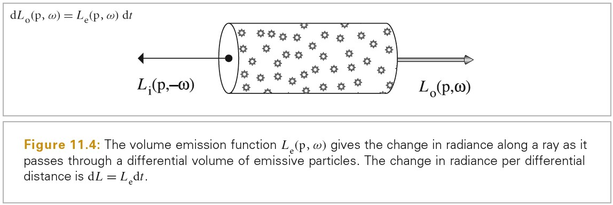
Out-Scattering And Attenuation
光碰到粒子后被散射到不同方向，从而减少该方向上光的辐射量，这种现象被称为 out-scattering。
由于吸收和外散射导致辐射的减少被统称为衰减或消光.
散射系数和消光系数的比值被称为 albedo 反照率，其描述了散射相对于吸收的概率。
1/消光系数被称为平均自由程，其描述了光线在介质中传播时，碰到介质粒子之前所经过的平均距离。
在均匀介质中(homogeneous medium)，衰减系数为常数。
- An Intuitive Guide To Exponential Functions & e https://betterexplained.com/articles/an-intuitive-guide-to-exponential-functions-e/
- 用 C 语言画光（七）：比尔-朗伯定律 https://zhuanlan.zhihu.com/p/31901449
上面微分方程求解参考如下链接：
In-Scattering
由于将其他方向的光散射到当前方向上，因此内散射会增加光的辐射量。
假定粒子之间的间隔至少为他们半径的几倍，此时描述特定点的散射时，就可以忽略掉粒子之间的交互。在这种假设下，phase function 可以描述散射辐射在某点的角度分布，其为 BSDF 的体积模拟。
参考资料
上面微分方程求解参考如下链接：
Phase Functions
相函数 p(ωi->ω)表示ωi 方向射入的光散射到ω方向的概率密度。
对于大多数自然存在的介质，相函数为角度的 1D 函数，该角度为入射方向和出射方向的夹角。因为入射光的照明不会随角度旋转而变化，这种 1D 相函数对应的介质被称为各项同性的。
各项异性的介质由按照连续结构排列的粒子组成，其相函数为 4D 函数。Further Reading 中讨论这类介质。
Phase function 本身也可以是各项同性或各项异性的。各项同性的介质可以有一个各项异性的相函数。
各项同性的相函数描述了所有方向上都相同的散射，相函数是归一化的，因此各项同性的相函数只有一个：p(wo,wi) = 1/(4pi)
henyey-greenstein 相函数为常用的相函数，下图展示了 g=-0.35 和 g=0.67 时 Henyey-Greenstein 相函数的图像。
./PhysicallyBasedRendering/2020_07_09_phase-func-henyey-greenstein.ggb
henyey-greenstein 模型中的 g 有精确的意义。其为被近似的相函数和夹角（入射方向和散射方向夹角）余弦值乘积的平均值。给定任意相函数 p，通过下面公式计算 g：
对于各项同性的相函数 p(wo,wi)=1/(4pi)，带入下面方程可以求得 g=0。
有很多 phase function 都可以满足求解 g 的方程，单个 g 值不足以唯一表示一个散射分布。但是，将复杂的散射分布转化为简单参数模型要比精确性上的损失更重要。
无法使用单个不对称参数 g 描述的相函数，经常可以通过相函数的权重和来描述，每个相函数有不同的不对称参数：
Media
Medium 基类提供了空间区域中的各种体积散射属性。在复杂的场景，可能有多个 Medium 实例，每个实例表示一种不同的散射效果。例如：户外河流场景可能有 1 个 Medim 用于模拟大气散射，另一个模拟从河流升起的薄雾，一个模拟河面悬浮的粒子。
在 pbrt 中，两种散射介质之间的边界总是由 GeometricPrimitive 的表面表示的。其并非保持一个 Medium 指针，而是保持一个 MediumInterface 指针，MediumInterface 保存了两个 Medim 指针，一个表示内部的介质，一个表示外部的介质。
和 Primitives 关联的形状表示了介质的边界，其通常也和一个材质相关联。例如，河水的表面可能会使用一个 GlassMaterial 来描述河水表面的散射，其也为从河水升起的薄雾介质和河水介质的边界。然而，有时候我们需要形状的边界表面来限制介质的边界，并不想看到边界表面本身。例如，可能使用一个 Box 来表示云的介质的边界，其应该只限制云的范围，而不影响光通过该 Box。
pbrt 中，若 surface 的 Material 为 nullptr，则表示其不影响光线，对应的 SurfaceInteraction::bsdf 也是 nullptr.
Medium Interactions
MediumInteraction 表示在散射介质中，某点的相互作用。
class MediumInteraction : public Interaction { public: // MediumInteraction Public Methods MediumInteraction() : phase(nullptr) {} MediumInteraction(const Point3f &p, const Vector3f &wo, Float time, const Medium *medium, const PhaseFunction *phase) : Interaction(p, wo, time, medium), phase(phase) {} bool IsValid() const { return phase != nullptr; } // MediumInteraction Public Data const PhaseFunction *phase; };
Homogeneous Medium
齐次介质是最简单的介质。在这种介质区域内，光传播单位距离被吸收的概率σa为常量值，光传播单位距离被散射的概率σs也为常量值。
// HomogeneousMedium Declarations class HomogeneousMedium : public Medium { public: // HomogeneousMedium Public Methods HomogeneousMedium(const Spectrum &sigma_a, const Spectrum &sigma_s, Float g) : sigma_a(sigma_a), // 吸收概率 sigma_s(sigma_s), // 散射概率 sigma_t(sigma_s + sigma_a), // 消光系数 g(g) {} Spectrum Tr(const Ray &ray, Sampler &sampler) const; Spectrum Sample(const Ray &ray, Sampler &sampler, MemoryArena &arena, MediumInteraction *mi) const; private: // HomogeneousMedium Private Data const Spectrum sigma_a, sigma_s, sigma_t; const Float g; };
3D Grids
GridDensityMedium 类将介质的密度存储为一个 3D 格子。通过对样本进行插值来得到特定点的介质密度。
The BSSRDF
下图为 BSSRDF 双向散射表面分布函数：
Tips: 上面 S 的方程中，分母为通量。
Separable BSSRDFS
对于高反照率介质(high-albedo media),散射辐射分布通常是各项同性的，并且 Fresnel 透射比是定义最终方向分布的最重要的因素。
对于低反照率介质(low-albedo media), 方向变化是有意义的，下面这种近似会少一些精确性。

Tips: Sp 项即 profile 项，其概念和皮肤渲染中的 diffuse profile 应该一样。
解耦 S 的空间和方向参数明显减低了 S 的维度，但是没有从根本上解决难题，对于任意形状的表面 Sp 项很难求解，此处引入近似的方法，用 Sr 来近似 Sp，Sr 的具体计算请参考下一节 Tabulated BSSRDF。
Tabulated BSSRDF
TabulatedBSSRDF 类提供了访问表格表示的 BSSRDF，其可以处理很多散射 profile，包括从真实世界测量得到的 BSSRDF。
需要特别注意的是，当所有的 BSSRDF 的材质属性固定时，radial profile Sr 只是一个 1D 函数。更一般地，其依赖于四个额外的参数：折射率η，散射各向异性 g，反照率ρ，以及消光系数σt。完整的 Sr 函数为 Sr(η, g, ρ, σt , r)，对于离散化来说，这个函数维度过高了。我们需要移除或者固定一些参数。
考虑唯一的有物理单位的参数σt, 该参数用于度量单位距离上散射和吸收交互的概率。其效果只是控制 BSRDF profile 的空间缩放。为了减少维度，我们将σt 固定为 1.
运行时，当查询给定σt 和半径 r 的 Sr 时，我们使用如下方程进行计算：
实践中，我们也会将η, g 固定下来，这意味着这些参数对于物体来说不能贴图化。这些简化，使我们得到一个非常易于管理的 2D 函数，其只需要在ρ(Tips:反照率 ρ=σs/σt), optical radius 两个参数上进行离散化。
注意 TabulatedBSSRDF::rho 成员变量给出了单次散射后能量的减少。这和材质整体的反照率(albedo)不同，材质整体的反照率将所有阶的散射都计算在内。将单次散射反照率记为ρ,将材质整体的反照率记为ρeff。
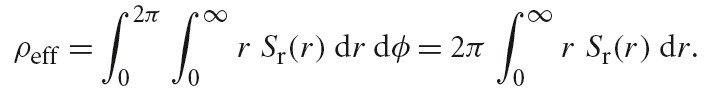
ρeff 为ρ的非线性单调递增函数。
Subsurface Scattering Materials
// 用于计算交点处的散射属性 SubsurfaceMaterial::ComputeScatteringFunctions(SurfaceInteraction *si, MemoryArena &arena, TransportMode mode, bool allowMultipleLobes) const
直接设置吸收和散射系数来达到希望的表现效果是很难的。这些参数都不是线性的，而且也不直观。KdSubsurfaceMaterial 允许用户按照表面漫反射的术语来设置次表面散射属性，以及平均自由程(mean free path)1/σt。需要注意的是，表面属性的变化并不对应于介质中属性的变化。
12 Light Source
Light Emission
所有温度高于绝对 0 度的物体都有原子在运动。正如麦克斯韦方程描述的，运动的带电原子粒子会发出某个波长范围内的电磁辐射。室温下的物体发出的大多数为红外线频率，我们很少能看到。物体需要很高的温度才能发出可见频率的光。
- 钨丝白炽灯(Incandescent-tungsten lamps)：电子经过钨丝会让钨丝发热，这导致其发出电磁辐射，该电磁辐射的波长分布依赖于钨丝的温度。其发出的电磁辐射大部分为红外线波段，这意味着白炽灯消耗的大部分能量被转化为热能。
- 卤素灯(Halogen lamps)：其也有钨丝，但是卤素灯内的气体为卤素气体。在高温下，升华的钨丝与卤素进行化学作用，冷却后的钨会重新凝固在钨丝上，形成平衡的循环，避免钨丝过早断裂。因此卤素灯泡比白炽灯更长寿。气化后的钨丝不会附着在灯泡表面，也不会减低灯泡亮度。
卤族元素指周期系ⅦA 族元素。包括氟（F）、氯（Cl）、溴（Br）、碘（I）、砹（At），简称卤素。
https://baike.baidu.com/item/%E5%8D%A4%E7%B4%A0%E7%81%AF%E6%B3%A1 - 气体放电灯(Gas-discharge lamps)：
https://baike.baidu.com/item/%E6%B0%94%E4%BD%93%E6%94%BE%E7%94%B5%E7%81%AF - LED 灯
https://baike.baidu.com/item/LED%E7%81%AF
对于所有的这些光源，其底层物理过程都是电子和原子撞击，将原子外层的电子推到更高能量级。当电子返回低能量级时，就会有光子发射出来。
照明效率测量了光源转化为可见照明的效率，其将人类观察的因素也计算在内。
Blackbody Emitters
黑体是一个完美的发射者：其完美地将能量转化为电磁辐射。黑体发射有封闭形式的表达式，其为温度和波长的函数。
黑体吸收所有入射的能量，不会反射出任何能量。
普朗克黑体辐射定律描述，在任意温度 T 下，从一个黑体中发射出的电磁辐射的辐射率与频率彼此之间的关系。
斯特藩-玻尔兹曼定律（Stefan–Boltzmann law）给出了空间中 p 点黑体的出射辐射。
维恩位移定律（Wien’s displacement law）给出了给定温度下黑体辐射的波长。
基尔霍夫定律(Kirchoff ’s law) 描述了非黑体的发射行为，其描述了物体的发射率与吸收比之间的关系。
黑体发射分布提供了有用的度量标准用于描述非黑体发射特征，这种度量标准概念称为色温。如果一个发射体的 SPD 和同温度的黑体的分布相同，我们就称该发射体有对应的色温。
- 黑体 https://baike.baidu.com/item/%E9%BB%91%E4%BD%93
- 黑体辐射 https://baike.baidu.com/item/%E9%BB%91%E4%BD%93%E8%BE%90%E5%B0%84
- 普朗克黑体辐射定律 https://zh.wikipedia.org/zh-hans/%E6%99%AE%E6%9C%97%E5%85%8B%E9%BB%91%E4%BD%93%E8%BE%90%E5%B0%84%E5%AE%9A%E5%BE%8B
- 斯特藩-玻尔兹曼定律 https://baike.baidu.com/item/%E6%96%AF%E7%89%B9%E8%97%A9-%E7%8E%BB%E5%B0%94%E5%85%B9%E6%9B%BC%E5%AE%9A%E5%BE%8B
- 维恩位移定律 https://baike.baidu.com/item/%E7%BB%B4%E6%81%A9%E4%BD%8D%E7%A7%BB%E5%AE%9A%E5%BE%8B
- 基尔霍夫定律 https://baike.baidu.com/item/%E5%9F%BA%E5%B0%94%E9%9C%8D%E5%A4%AB%E5%AE%9A%E5%BE%8B/15860277
- 色温 https://baike.baidu.com/item/%E8%89%B2%E6%B8%A9
Standard Illuminants
Light Interface
Light 类公用的 4 个成员变量：
const int flags; // 标记光源基本的类型 const Transform LightToWorld, WorldToLight; // 光源坐标系和世界坐标系之间的转换 const int nSamples; // 区域光使用。 const MediumInterface mediumInterface; // 光源内部和外部的介质 // 光源标记，该标记可以通过位或进行组合 enum class LightFlags : int { DeltaPosition = 1, //此处的delta表示delta 函数，即狄拉克函数 DeltaDirection = 2, Area = 4, Infinite = 8 }; // Interaction& ref 提供了世界空间中场景的一点p // Point2f& u 对于有些类型的光源，到达点p的光为多个方向的。u表示光源表面的位置。 // Vector3f* wi p点光源入射方向 // Float* pdf 光源样本的概率密度 // VisibilityTester* vis用于看见性测试 // return Spectrum 为到达p点的辐射率 virtual Spectrum Sample_Li(const Interaction &ref, const Point2f &u, Vector3f *wi, Float *pdf, VisibilityTester *vis) const = 0;
TODO Visiblity Testing
Point Lights
Point Lights
PointLight(const Transform &LightToWorld, const MediumInterface &mediumInterface, const Spectrum &I) : Light((int)LightFlags::DeltaPosition, LightToWorld, mediumInterface), pLight(LightToWorld(Point3f(0, 0, 0))), I(I) {}
严格来说使用辐射率来描述从点光源到达某个点的光是不正确的。辐射强度才是合适的单位。然而，我们滥用了术语，使用 Sample_Li 来计算从各种不同类型的光源到达某点的照明，将辐射强度除以距离的平方来转换单位。
Spot Lights
SpotLight::SpotLight(const Transform &LightToWorld, const MediumInterface &mediumInterface, const Spectrum &I, Float totalWidth, Float falloffStart) : Light((int)LightFlags::DeltaPosition, LightToWorld, mediumInterface), pLight(LightToWorld(Point3f(0, 0, 0))), I(I), cosTotalWidth(std::cos(Radians(totalWidth))), cosFalloffStart(std::cos(Radians(falloffStart))) {} Spectrum SpotLight::Sample_Li(const Interaction &ref, const Point2f &u, Vector3f *wi, Float *pdf, VisibilityTester *vis) const { *wi = Normalize(pLight - ref.p); *pdf = 1.f; *vis = VisibilityTester(ref, Interaction(pLight, ref.time, mediumInterface)); return I * Falloff(-*wi) / DistanceSquared(pLight, ref.p); }
TODO Texture Projection Lights
TODO Goniophotometric Diagram Lights
Distant Lights
令一类有用的光源为 distant light，也被称为 directional light.
DistantLight::DistantLight(const Transform &LightToWorld, const Spectrum &L, const Vector3f &wLight) : Light((int)LightFlags::DeltaDirection, LightToWorld, MediumInterface()), L(L), wLight(Normalize(LightToWorld(wLight))) {}
Area Lights
区域光由一个或多个 Shapes 定义，这些 Shapes 的表面会发出光，表面上每个点在不同方向上都有辐射率分布。通常计算区域光源的辐射量通常需要对光源区域进行积分，其通常无法通过封闭形式求解。该问题可通过 MonteCarlo 积分技术来解决。这种复杂计算可以得到软阴影，以及更真实的光照效果。
AreaLight 为区域光的抽象基类。
DiffuseAreaLight 实现了基础的区域光源，其有统一的空间和方向辐射分布。
对于场景中的每个点，来自区域光源的辐射率可以从不同方向入射。
Infinite Area Lights
另一个有用的光源为无限区域光-一个无限远的区域光源，其围绕了整个场景。一种可视化这种光源的方法是将其当作一个巨大的球体，从这个球体向场景发射光。无限区域光源的一个重要用途是环境光。
InfiniteAreaLight 也有变换矩阵，该矩阵用于确定朝向，即哪儿是朝上的方向。其使用球面坐标系将球体上的方向映射为(θ, φ)方向，然后再将(θ, φ)方向映射为贴图坐标(u,v).
和 DistantLights 一样，光被定义为无限远处，MediumInterface 中的两个 Medium 成员都为 nullptr，这对应于真空。
和 DistantLights 一样，也需要场景边界。
InfiniteAreaLight 从所有方向发射光，因此也需要使用 MonteCarlo 积分来采样其照明。
Part 4 Implement Light Transport algorithms
13 Monte Carlo Integration
MonteCarlo 积分是使用随机采样来估算积分值的方法。MonteCarlo 一个很有用的属性是只要可以计算被积函数 f(x)在任意点的值，就可以计算该函数的积分。这使得蒙特卡洛积分易于实现，而且适用性很广，即使函数为不连续函数依然可以使用。
MonteCarlo 积分的主要缺点是，如果使用 n 个样本来估算积分，该算法收敛于正确结果的速率为 \(O(n^{-1/2})\) 。这意味着为了让错误减半，需要对 4 倍的样本进行求解。在渲染中，每个样本通常需要追踪 1 个或多个射线，使用蒙特卡洛积分需要承受昂贵的计算开销。在最终计算出的图片上，蒙特卡洛采样带来的 artifacts 主要表现为噪声（像素随机的很亮或很暗）。目前图形学中关于蒙特卡洛的研究主要是关于如何尽可能减少错误，同时最小化额外的采样次数。
Background And Probability Review
随机变量 X（random variable）是定义在样本空间上随机试验结果的实值函数。随机事件不论与数量是否直接有关，都可以数量化，即都能用数量化的方式表达。
例如，掷骰子的结果为离散型随机变量，其取自一组事件组 Xi = {1, 2, 3, 4, 5, 6}. 其中每个事件的概率为 pi=1/6，所有概率的和为 1。取均匀分布随机变量ξ∈[0, 1)并将其映射为一个离散随机变量 X，离散型随机变量 X 和连续性随机变量ξ的对应关系如下：
对于渲染中的应用，我们可能希望定义从场景中每个灯光采样照明的概率，该概率值为从任意一个光源采样的辐射通量和从所有光源采样到的辐射通量的比值：
随机变量的累计分布函数(cumulative distribution function)是随机变量小于等于某个值的概率。P(x) = Pr{X ≤ x}.
- 连续型随机变量 https://baike.baidu.com/item/%E8%BF%9E%E7%BB%AD%E5%9E%8B%E9%9A%8F%E6%9C%BA%E5%8F%98%E9%87%8F
- 累积分布函数 https://baike.baidu.com/item/%E7%B4%AF%E7%A7%AF%E5%88%86%E5%B8%83%E5%87%BD%E6%95%B0
- 概率密度函数 https://baike.baidu.com/item/%E6%A6%82%E7%8E%87%E5%AF%86%E5%BA%A6%E5%87%BD%E6%95%B0
- 均匀分布 https://baike.baidu.com/item/%E5%9D%87%E5%8C%80%E5%88%86%E5%B8%83/954451
- 数学期望 https://baike.baidu.com/item/%E6%95%B0%E5%AD%A6%E6%9C%9F%E6%9C%9B
- 方差 https://baike.baidu.com/item/%E6%96%B9%E5%B7%AE
- 估计量 https://wiki.mbalib.com/wiki/%E4%BC%B0%E8%AE%A1%E9%87%8F
- 马尔科夫不等式 切比雪夫不等式 https://www.zhihu.com/question/27821324
- 大数定律 https://baike.baidu.com/item/%E5%A4%A7%E6%95%B0%E5%AE%9A%E5%BE%8B
- 大数定律 https://zh.wikipedia.org/wiki/%E5%A4%A7%E6%95%B0%E5%AE%9A%E5%BE%8B
- 中心极限定理 https://baike.baidu.com/item/%E4%B8%AD%E5%BF%83%E6%9E%81%E9%99%90%E5%AE%9A%E7%90%86
- 中心极限定理 https://zh.wikipedia.org/wiki/%E4%B8%AD%E5%BF%83%E6%9E%81%E9%99%90%E5%AE%9A%E7%90%86
Continuous Random Variables
在渲染中，连续型随机变量比离散型随机变量更常用，其取值范围为连续区域。例如，实数、单位球上的方向，场景中物体的表面。
经典均匀分布随机变量为一个特别重要的随机变量，我们将其记为ξ，其等概率地在[0,1)区域上取值。
之所以重要有以下两个原因：
- 在软件中易于生成符合该分布的随机变量
- 可以通过先生成经典均匀分布的样本，然后再执行合适的变换来得到任意其他分布的样本。
概率密度函数(probability density function)描述了随机变量取特定值的概率。其为随机变量累计分布函数的导数。p(x) = dP(x)/dx.

Expected Values And Variance
函数 f 的期望值 Ep[f(x)]定义为该函数在某个分布上的平均值。蒙特卡洛积分需要计算任意积分函数的期望值。
cos(x)在 0-π定义域内的期望值如下，其中 p 为均匀分布：
函数的方差为函数和该函数期望偏差平方的期望，其形式化定义如下：

The Monte Carlo Estimator
Monte Carlo method|estimator(蒙特卡洛估计量)可近似任意积分的值，其是依赖于随机采样来近似结果的数值技术。
通过一般化，可以将上面均匀分布的限制去掉。这是非常重要的一步，小心选择样本的概率密度函数 PDF 可以减少 MonteCarlo 的方差。如果随机变量 Xi 的概率密度函数为 p(x)，则对应的估计量如下：
MonteCarlo 方法很容易扩展到多维。下图展示了扩展到三维的情况：
注意：采样数量 N 可以为任意值，不需要考虑积分的维度。这是 MonteCarlo 方法和传统求面积法的重要不同之处。MonteCarlo 方法中，样本数量的选取完全独立于积分的维度，而传统求面积的方法中，样本数量和维度为指数关系。
MonteCarlo 估计量的收敛速率为 O(N0.5). 一维的情况下，标准的求面积技术收敛速度比 O(N0.5)要快。但随着维度增加，其效率指数减低。
上面蒙特卡洛积分的推导没有下面 《蒙特卡洛法》更直观，建议参考下面链接中的推导。
- 蒙特卡洛法 https://www.cnblogs.com/coshaho/p/9741298.html 有道笔记有备份
- https://www.scratchapixel.com/lessons/mathematics-physics-for-computer-graphics/monte-carlo-methods-mathematical-foundations/quick-introduction-to-monte-carlo-methods
- https://www.scratchapixel.com/lessons/mathematics-physics-for-computer-graphics/monte-carlo-methods-mathematical-foundations/estimators
Sampling Random Variables
The Inversion Method
inversion method 使用一个或多个均匀随机变量，并将其映射为目标分布的随机变量。下面使用离散的例子来解释其过程：
The Rejection Method
对于一些函数，可能无法对其积分获得 CDF，或者无法求得其 CDF 的反函数。此时可以使用 Rejection Method 来按照某分布函数来生成样本。Rejection Method 的本质是投飞镖方式。假设我们需要从 f(x)分布抽取样本，我们有 PDF p(x)满足 f(x)<cp(x)，而我们知道如何从 p(x)分布抽取样本。那么 Rejection Method 操作如下：
// loop forever while(true) // 从 p 分布生成样本 X X = gen_sample(p); // 如果(X, ξ c p(X)) 在 f(X)下面，则接受生成的X样本，否则拒绝X样本 if (ξ < f(X)/(c p(X))) then return X
该方法的效率依赖于 cp(x)和 f(x)靠近的程度。
Point2f RejectionSampleDisk(RNG &rng) { Point2f p; do { p.x = 1 - 2 * rng.UniformFloat(); p.y = 1 - 2 * rng.UniformFloat(); } while (p.x * p.x + p.y * p.y > 1); return p; }
Metropolis Sampling
Metropolis sampling 不需要对 f 函数进行积分，也不需要对积分进行归一化，不需要求 CDF 的反函数。而且，其每一次迭代生成的样本都是可用的，其没有 Rejection Sampling 的缺点。
Metropolis sampling 按顺序生成的连续的样本统计上是相关联的，因此对于少量的样本无法确定其在整个域上是分布良好的。只有在大量样本的情况下，其才会覆盖整个区域。
Tips: Metropolis 是一个物理学家。 - https://en.wikipedia.org/wiki/Nicholas_Metropolis
- 马尔可夫性质 https://baike.baidu.com/item/%E9%A9%AC%E5%B0%94%E5%8F%AF%E5%A4%AB%E6%80%A7%E8%B4%A8
- 随机过程 https://baike.baidu.com/item/%E9%9A%8F%E6%9C%BA%E8%BF%87%E7%A8%8B/368895
- 马尔可夫链 https://baike.baidu.com/item/%E9%A9%AC%E5%B0%94%E5%8F%AF%E5%A4%AB%E9%93%BE
- 什么是马尔可夫链蒙特卡洛（MCMC）？ https://zhuanlan.zhihu.com/p/116725922
- 你对贝叶斯统计都有怎样的理解？ https://www.zhihu.com/question/21134457
- 贝塔分布 https://baike.baidu.com/item/%E8%B4%9D%E5%A1%94%E5%88%86%E5%B8%83/8994021?fr=aladdin
Basic Algorithm
Metropolis 算法从函数 f 生成一组样本 Xi，函数 f 定义在任意维度状态空间 \(\Omega\) 上，并且返回实数值。选中第一个样本 X0 ∈ \(\Omega\) 后，在生成后续样本 Xi 时，对 X(i-1)进行随机突变得到一个建议样本 X'。若该突变被接受，则 Xi = X'，否则 Xi = X(i-1)。当选择从一个状态转换为另一个状态时需要满足一些条件，最终 Xi 的分布会达到一个均衡分布；这个分布为静态分布。在极限情况下，这组样本 Xi ∈ \(\Omega\) 的分布恰好符合 f(x) 的概率密度函数:
为了生成分布正确的样本，必须生成合适的突变，并且按照一些约束接受或拒绝突变。假设我们有一个突变方法，其可以将一个给定状态 X 转化为一个新的状态 X'。我们必须可以计算一个转换函数 T(X→X')，其可以给出从 X 突变为 X'的概率密度。
给定一个转变函数，可以定义一个 acceptance probability a(X→X') 其给出接受从 X 到 X' 突变的概率。如果分布已经均衡，则满足如下条件，这个属性被称为 detailed balance.
f 和 T 是设定好的，从上面公式可以得出 a 的定义。特别地，为了最大化达到均衡的速率，a的定义应该为：
接受概率的推导可以参考下面文章描述
- 随机采样方法整理与讲解（MCMC、Gibbs Sampling 等）https://www.cnblogs.com/xbinworld/p/4266146.html
Metropolis sampling 算法的伪代码如下：
// 选定第一个样本 X = X0; // 生成后续样本 for(int i=1; i<n; i++) { // 对当前样本进行突变 X' = mutate(X); // 计算接受当前样本的概率 a = accept(X, X'); // 比较转换概率和接受概率 if (random() < a) { X = X' } record(X); }
因为 Metropolis 算法自然地避免了 \(\Omega\) 空间上部分区域，这些区域上 f(x)的值相对比较小，只有很少样本在该区域被累加。为了获取 f(x)在这些区域的更多信息，可以使用数学期望技术来增强 Metropolis 算法。增强后的 Metropolis 算法伪代码如下：
// 选定第一个样本 X = X0; // 生成后续样本 for(int i=1; i<n; i++) { // 对当前样本进行突变 X' = mutate(X); // 计算接受当前样本的概率 a = accept(X, X'); record(X, 1-a); record(X', a); // 比较转换概率和接受概率 if (random() < a) { X = X' } }
Choosing Mutation Strategies
通常希望突变有合适的大的变化而不是比较小的变化。这样可以快速的探索整个状态空间，小的突变会导致局限在状态空间的一个小的区域内。然而，当 f(X)的值在当前样本 X 处相对大时，很多建议的突变会被拒绝(从上节的接受概率的公式可以看出，此时的接受概率会变低)。我们希望避免很多样本是相同的，这样同样是为了更好地探索状态空间。在 f 的值相对大的地方，小的突变可能是建议的样本 X'，其可以得到更高的接受度。
因此，一个有效的突变方式是对当前样本 X 进行随机扰动。如果样本 X 表示一个实数向量(x0,x1,…)，则可以对该向量的某些维度或所有维度进行扰动。可以利用如下算法进行扰动：
xi' = (xi ± sξ) mod 1; 该方法是均匀对称的，因此不需要计算转换密度。
另一个相关的突变方式是，直接忽略当前的样本，使用均匀随机值生成一个新的样本：xi = ξ.完全随机地生成一个新的样本可以保证我们不会卡在状态空间的某个部分。一般地，能够到达状态空间的所有状态是必要的，这个属性被称为可遍历性。特殊地，为了保证遍历性，需要满足 T(X->X') > 0。
另一种方式是，使用利用概率密度函数进行突变，该 PDF 和被采样函数的部分是匹配的。如果我们有一个 PDF p(x),其和 f 的某个分量相同。此时的转换函数为：T (X→X') = p(X')。也就是说，当前的状态 X 对于转换密度的计算是无关的，转换到 X'的密度值依赖于 X'，和当前的状态无关。
Start-up Bias
如何计算初始的 X0 样本？如果使用一个不符合 f 分布的样本会导致 start-up bias.
一个通用的解决方案是，以一个任意的状态，执行 Meropolis 采样算法多次，忽略其生成的样本，假设前面的计算已经得到了一个合适的 X，然后继续执行该算法。该方式有两个缺点：1 消耗比较高，其需要忽略一些样本。2. 需要忽略多少样本只能靠猜测。
另一种方式是，如果另一种采样方法可用，我们可以使用任意密度函数 X0~p(x)来得到 X0.我们从状态 X0 开始 Markov chain，但是我们对所有生成的样本分配如下权重：w=f(X0)/p(X0).该方法可以以可预见的方式完全消除 start-up bias。
如果对于我们选取的 X0, f(X0)=0.此时，所有的样本的权重都为 0.为了避免该错误，我们可以采样 N 个样本，Y1, …,Yn,定义每个样本的权重为 wi=f(Yi)/p(Yi). 然后，从 Yi 中选择 X0，计算 Yi 的平均权重 w，将其作为 Metropolis 算法生成样本的权重。
TODO 1D Setting
TODO Estimating Intergrals With Metropolis Sampling
Transforming Between Distributions
假设给定随机变量 Xi，其概率密度函数为 px(x)。随机变量 Yi=y(Xi)。 y(x)函数必须为一对一的变换，如果多个 x 值对应一个 y 值，则无法描述 y 值的概率密度。由此可得如下关系：
上面给出的方法为一般性的 inversion 方法，如果 X 为[0,1]的均匀分布，则 Px(x) = x,此时就是前面介绍的 inversion mothed.
Transformation in Multiple Dimensions
多维的情况如下：
行列式是线性变换的伸缩因子。行列式=1，图形面积不变；行列式>1，图形被放大；0<行列式<1，图形被缩小；行列式<0，图形镜像（改变了基的左右手法则）。
因此，使用雅可比行列式缩放概率密度，可以表示坐标变换引起的概率密度变换。
- 行列式的本质是什么？ https://www.zhihu.com/question/36966326
Polar Coordinates
以两维极坐标为例，假如我们从某个密度函数 p(r, θ)抽取样本,其对应的 p(x,y) 密度函数是什么？
雅可比矩阵表示的是从(x,y)坐标系到(r, θ)坐标系的变换。
雅可比行列式表示从(x,y)坐标系变换为(r, θ)坐标系后，空间的缩放系数。
(x, y) -> (r, θ) scaleFactor = r
p(x,y)r = p(r, θ)
Tips:
雅可比行列式为负数并不表示空间缩小了，而是说空间镜像了。0<行列式绝对值<1 才表示空间缩小了。
Spherical Coordinates
2D Sampling With Multidimensional Transformations
假设我们需要抽取样本(X, Y)，这些样本的 2D 联合密度函数为 p(x,y)。
有一些多维密度函数是可分离的，例如 p(x,y) = px(x)py(y)。此时，随机变量(X, Y)可以分开进行采样，X按照 px 密度函数采样，Y按照 py 密度函数采样，将得到的样本组合成一对就是(X, Y)样本。
有很多密度函数是无法分离的，此时我们按照下面方法进行采样：
从联合分布进行 2D 采样的理念为，先计算相对于一个特定变量的边缘密度函数，然后利用 1D 技术从该密度函数抽取一个样本。得到该样本后即可计算给定该值的条件密度函数，再从该条件密度函数抽取一个样本，将两次抽取的样本组合为一组就是需要的样本。
Uniformaly Sampling a Hemisphere
Uniformaly Sampling a Sphere
Sampling a unit disk
Cosine-Weighted Hemisphere Sampling
散射方程中 BSDF 和入射辐射率的乘积会再乘一个 cosine 项，因此生成的方向靠近半球顶端的可能性更大一些会很有用。
球面立体角 w 的密度函数 请参考链接 No description for this link , 下面为包含 cosine 项的球面立体角密度函数的推导：
下面使用了 Malley 方法生成 cosine 权重的立体角分布：

下面是我自己的推导：

Sampling a Cone
对于 SpotLight 和基于 Sphere 的区域灯光来说，在一个 cone 内进行均匀采样是很有用的。

球面立体角 w 的密度函数 请参考链接 No description for this link。
Sampling a Triangle
下面使用面积为 1/2 的等腰直角三角形推导对三角形采样的方法，其使用了重心坐标，通用于一般的三角形。
Sampling Cameras
Piecewise-Constant 2D Distributions
从离散的 2D 分布采样适用于生成贴图或环境贴图的样本。
Russian Roulette And Splitting
下面为估计量 F 的 efficency 的定义：
Russian roulette 和 splitting 这两种技术可用于改进 Monte Carlo 估算的有效性。这两种方法可以明显增加样本对最终结果的贡献可能性。
Russian roulette 用于解决计算耗费比较高，但是对最近结果贡献小的问题。Splitting 计算可以用于将更多的样本放置到重要的维度。
考虑直接光照的积分，其给出在 p 点处的反射辐射率，其只考虑场景中所有光源的直接照明。假定我们从 p(wi)分布取两个样本进行计算。
计算中需要对从 p 点发出的阴影射线进行追踪，从而判断从 p 点看时，光源是否被遮挡。对于所有的 wi，如果 fr(p,wo,wi)为零，则 wi 对应的反射率也为 0，我们应该避免在这时对阴影射线进行追踪，因为其不会改变最终的结果。Russian roulette 可以使得在积分值很低时，也可以忽略对阴影射线的追踪，并且使得计算的结果平均是正确的。例如，当 fr(p,wo,wi)很小或 wi 靠近水平时，都可以忽略对阴影射线进行追踪。
为了应用 Russian roulette,我们选择 q 为结束概率。可以基于预估的积分值来选择结束概率 q，随着积分值变大 q 变小。概率为 q 的情况下，对于特定的样本积分值不进行计算，而直接使用常数 c；概率为 1-q 的情况下，依然对积分值进行计算，并赋予 1/(1-q)的权值。
F'取到 c 的概率是 q，所以期望的这一部分就是 qc，也就是第二项。至于第一项也是一样的，取值概率是 1-q。
Russian roulette 永远不会减少方差，选择不好的 Russian roulette 权重会极大增加方差。但是，如果所选的概率让对最终结果贡献很小的样本被忽略的话，其可以改进有效性。
Splitting
再次考虑只有直接光照的反射问题，忽略像素过滤后，该问题可以写成如下形式：
通常会生成 N 个样本来计算积分，每个样本由一个像素位置(x,y)一个朝向光源的方向 w 组成。如果场景中由很多个光源，或者有一个区域光源用于产生软阴影，此时可能需要很多样本才能达到可接受的效果。不幸的是每个样本需要追踪两个射线，一个射线为像素(x,y)到看见的点，另一个阴影射线从看见的点到光源。
假设 N=100,则有 200 个射线要追踪：100 个摄像机射线，100 个阴影射线。100 个摄像机射线太多了，其对结果影响不大。使用 Splitting 方法，我们只需要取 5 个像素样本但对于每个像素样本取 20 个光照样本。
Careful Sample Placement
减少方差的经典有效方法为，精心放置样本，使其能更好捕捉积分的特征。
Stratified Sampling
分层采样将整个积分区域 A 划分为 n 个不重叠的区域 A1,A2,…,An.每个区域被称为一个层。 从 A 中抽取样本时，我们按照每个层中的密度函数 pi，从每个 Ai 中抽取对应的 ni 个样本。
超级采样一个像素，就是分层采样的一个简单例子。将一个像素周围区域划分为 kxk 个格子，从每个格子中抽取一个样本。这比随机抽取 k*k 个样本要好，因为完全随机抽取的样本可能会聚集在一起。
选择一个不分层的样本等价于按照离散概率分布随机选择一个层 I，该离散概率分布由 vi 定义，然后在 Ai 层随机选择一个样本 X。这种情况下，X在 I 条件下进行选择，由条件概率可得其方差。
分层采样的主要缺点为随着维度提高，需要的样本数量变多。
一种方案是只对一些维度进行独立的分层，然后随机地将不同维度的样本关联起来，如：Stratified Sampling 部分描述。
另一种方案是使用 Latin Hypercube sampling，不论维度多少，其可生成任意数量样本。不幸的是，其无法像分层采样那样可以有效减小方差。但是其比均匀随机采样效果要好。
Quasi Monte Carlo
低差异采样技术被称为 Quasi Monte Carlo.拟蒙特卡洛技术的关键是其用精心设计的确定性算法生成低差异点集，用这些点集代替标准蒙特卡洛方法中的伪随机数。
拟蒙特卡洛比标准蒙特卡洛有渐进更快的收敛速度。使用标准蒙特卡洛的大多数技术都可以用拟蒙特卡洛来代替，有一些则不行(例如：rejection sampling)。图形学中，对于不连续的积分渐进收敛速度通常是无法接受的，这种情况下，拟蒙特卡洛要比标准蒙特卡洛表现要好。
Warping Samples And Distortion
pbrt 中应用分层采样或 low-discrepancy 采样时，会在[0,1)^2 空间上生成一系列样本，然后再利用 13.5 和 13.6 节中的转换方法将这些样本转换到需要的空间。转换过程中需要保持样本的分层属性，也就是说靠近的样本应该映射为物体表面上靠近的位置，分离开的样本应该映射为分离开的位置。如果无法保持该性质，则分层的好处就丢失了。
Bias
另一种减小方差的方法为在计算过程中引入 bias。有时候知道计算估计值的期望值不等于所求量，此时引入 bias 可以减小方差。如果估计量的期望值等于正确的值，则估计量为无偏的; 否则偏差即为期望和正确值的差。
Importance Sampling
重要性采样是减小方差的强大技术。其利用了如下事实，即如果样本分布 p(x)和 f(x)近似，则取样时蒙特卡洛估计量的收敛速度会很快。其基础的理念为，将工作集中在积分值相对高的地方，这样精确估算的计算更高效。此时，生成样本时，在函数值高的地方，对应生成的样本数量比均匀采样会变多。
如果选择了不好的分布，重要性采样会增加方差。
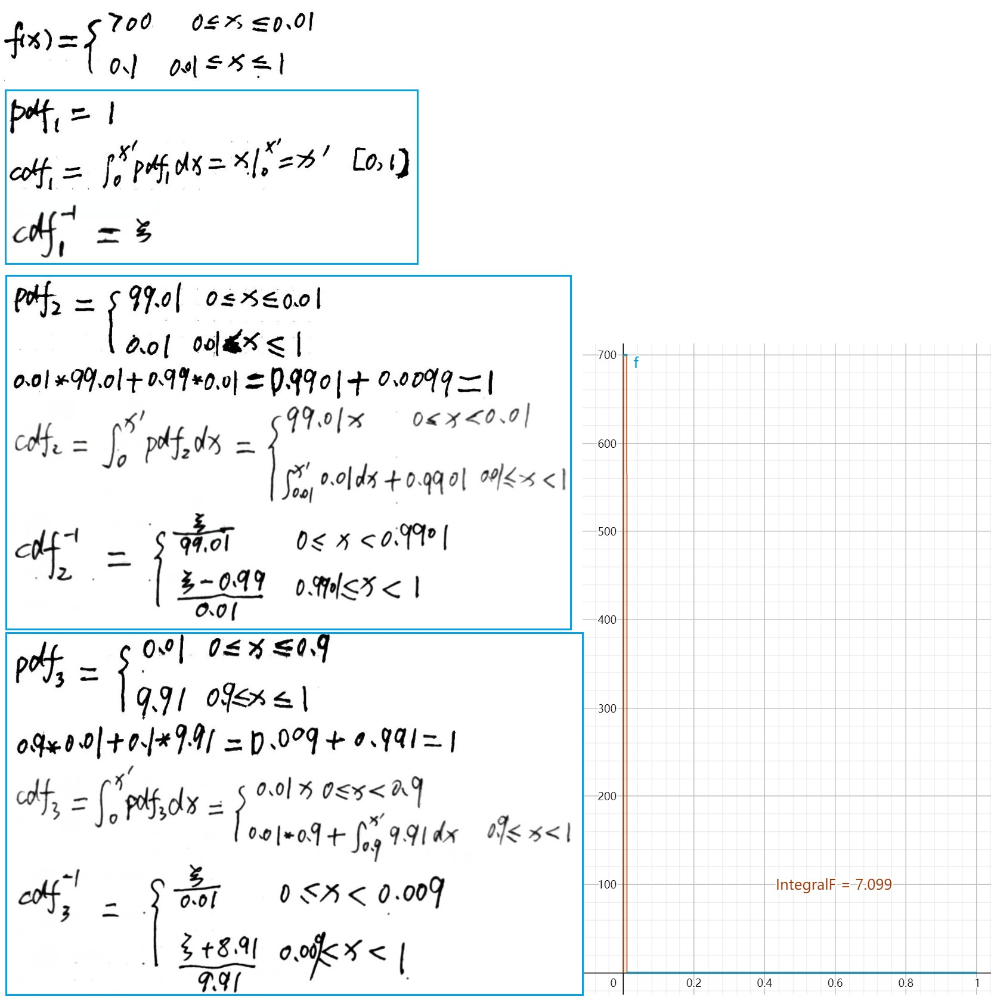
import random import math def gen_x1(uniform_01_value): return uniform_01_value; def gen_x2(uniform_01_value): if uniform_01_value<0.9901: return uniform_01_value/99.01; else: return (uniform_01_value-0.99)/0.01; def gen_x3(uniform_01_value): if uniform_01_value<0.009: return uniform_01_value/0.01; else: return (uniform_01_value+8.91)/9.91; def pdf1(x): return 1; def pdf2(x): if x<0.01: return 99.01 else: return 0.01 def pdf3(x): if x<0.9: return 0.01 else: return 9.91 def f(x): if x<0.01: return 700 else: return 0.1 def main(): total_times = 16; counter = 1; real = 7.099 random.seed(10); print("No Uniform Importance1 Importance2 Err.Uniform Err.Importance1 Err.Importance2") while counter<=total_times: samples_count = 10000 sum1 = 0.0 sum2 = 0.0 sum3 = 0.0 for index in range(samples_count): x = random.random() sample1 = gen_x1(x) sample2 = gen_x2(x) sample3 = gen_x3(x) s_pdf1 = pdf1(sample1) s_pdf2 = pdf2(sample2) s_pdf3 = pdf3(sample3) sum1 += f(sample1)/s_pdf1; sum2 += f(sample2)/s_pdf2; sum3 += f(sample3)/s_pdf3; sum1 /= samples_count; sum2 /= samples_count; sum3 /= samples_count; err1 = 100.0*(sum1-real)/real; err2 = 100.0*(sum2-real)/real; err3 = 100.0*(sum3-real)/real; print("%-6d %-14.4f %-14.4f %-14.4f %-14.2f %-14.2f %-14.2f" %(counter, sum1, sum2, sum3, err1, err2, err3)) counter+=1 if __name__ == '__main__': main() # No Uniform Importance1 Importance2 Err.Uniform Err.Importance1 Err.Importance2 # 1 6.4691 7.0996 7.0870 -8.87 0.01 -0.17 # 2 7.4489 7.1013 7.1020 4.93 0.03 0.04 # 3 7.2390 7.0969 0.1020 1.97 -0.03 -98.56 # 4 6.5391 7.1002 0.0930 -7.89 0.02 -98.69 # 5 7.3790 7.1013 7.1050 3.94 0.03 0.08 # 6 7.4489 7.0972 14.1050 4.93 -0.02 98.69 # 7 6.9590 7.0993 0.1010 -1.97 0.00 -98.58 # 8 7.7289 7.0937 14.1090 8.87 -0.07 98.75 # 9 7.6589 7.1031 14.1070 7.89 0.06 98.72 # 10 8.3588 7.0978 7.1180 17.75 -0.02 0.27 # 11 6.5391 7.0958 0.0990 -7.89 -0.05 -98.61 # 12 7.3790 7.0981 14.1020 3.94 -0.01 98.65 # 13 6.8190 7.0958 0.0920 -3.94 -0.05 -98.70 # 14 7.0290 7.1013 7.0960 -0.99 0.03 -0.04 # 15 6.7490 7.1005 7.0950 -4.93 0.02 -0.06 # 16 6.4691 7.0993 7.0940 -8.87 0.00 -0.07
./PhysicallyBasedRendering/00_04_13_10_importance_sampling_01.ggb
import random import math def gen_x1(uniform_01_value): return math.pi*uniform_01_value*0.5; def gen_x2(uniform_01_value): return math.pi*0.5*math.pow(uniform_01_value, 0.5); def gen_x3(uniform_01_value): return math.acos(1.0-uniform_01_value); def pdf1(x): return 2/math.pi; def pdf2(x): return 8*x/(math.pi*math.pi); def pdf3(x): return math.sin(x); def f(x): return math.sin(x); def main(): total_times = 16; counter = 1; real = 1.0 random.seed(10); print("No Uniform Importance1 Importance2 Err.Uniform Err.Importance1 Err.Importance2") while counter<=total_times: samples_count = 16 sum1 = 0.0 sum2 = 0.0 sum3 = 0.0 for index in range(samples_count): x = random.random() sample1 = gen_x1(x) sample2 = gen_x2(x) sample3 = gen_x3(x) s_pdf1 = pdf1(sample1) s_pdf2 = pdf2(sample2) s_pdf3 = pdf3(sample3) sum1 += f(sample1)/s_pdf1; sum2 += f(sample2)/s_pdf2; sum3 += f(sample3)/s_pdf3; sum1 /= samples_count; sum2 /= samples_count; sum3 /= samples_count; err1 = 100.0*(sum1-real)/real; err2 = 100.0*(sum2-real)/real; err3 = 100.0*(sum3-real)/real; print("%-6d %-14.4f %-14.4f %-14.4f %-14.1f %-14.1f %-14.1f" %(counter, sum1, sum2, sum3, err1, err2, err3)) counter+=1 if __name__ == '__main__': main() # No Uniform Importance1 Importance2 Err.Uniform Err.Importance1 Err.Importance2 # 1 1.0795 0.9779 1.0000 7.9 -2.2 0.0 # 2 0.9786 1.0001 1.0000 -2.1 0.0 0.0 # 3 0.9601 1.0161 1.0000 -4.0 1.6 0.0 # 4 0.9502 1.0153 1.0000 -5.0 1.5 0.0 # 5 0.8464 1.0461 1.0000 -15.4 4.6 0.0 # 6 1.0855 0.9899 1.0000 8.6 -1.0 0.0 # 7 0.7889 1.0531 1.0000 -21.1 5.3 0.0 # 8 1.1980 0.9565 1.0000 19.8 -4.4 0.0 # 9 1.2529 0.9194 1.0000 25.3 -8.1 0.0 # 10 0.9384 1.0180 1.0000 -6.2 1.8 0.0 # 11 0.9748 1.0113 1.0000 -2.5 1.1 0.0 # 12 1.1036 0.9892 1.0000 10.4 -1.1 0.0 # 13 0.9582 1.0025 1.0000 -4.2 0.3 0.0 # 14 1.1459 0.9545 1.0000 14.6 -4.5 0.0 # 15 0.9775 0.9990 1.0000 -2.2 -0.1 0.0 # 16 1.1445 0.9629 1.0000 14.5 -3.7 0.0
下面文章中包含了重要性采样相关的知识：
Multiple Importance Sampling
Multiple Importance Sampling 的基本理念为，估算积分时，我们可以从多个样本分布抽取样本，多个样本中至少有一个会和积分的的形状相匹配，即使我们不知道匹配的样本是哪个。MIS 提供了一种方法给样本分配权重，其可以减少方差峰值。只考虑不常见的特殊情况的特化采样程序是被鼓励的，因为当这些情况发生时，其可以减少方差，而且只是用先对少的开销。
权重函数考虑生成一个样本 Xi 或 Yj 所有不同的方式，而不只是特定的实际用到的一个。平衡启发式是权重函数的一个好的选择。其可以为样本分配权重减少方差。
14 Light Transport I:Surface Reflection
Sampling Reflection Functions
概述
virtual Spectrum BxDF::Sample_f(const Vector3f &wo, Vector3f *wi, const Point2f &sample, Float *pdf, BxDFType *sampledType = nullptr) const; virtual Float BxDF::Pdf(const Vector3f &wo, const Vector3f &wi) const;
考虑间接光照时，在 BxDF::Sample_f 方法中，首先生成入射方向样本 wi，然后调用 BxDF::f 方法返回 wi 入射方向，wo 出射方向下对应的辐射率。例如：整个过程为 WhittedIntegrator::Li -> SamplerIntegrator::SpecularReflect -> BSDF::Sample_f -> BxDF::Sample_f -> BSDF::f。 Tips: 考虑光在表面的一次反射，其实就是包含了一次间接光照。
BxDF::Sample_f 方法按照分布选择一个方向，该分布和对应的散射方程相似。该方法用于在完美镜面表面处查找反射和透射射线。
BxDF::Sample_f 会取[0,1)^2 范围内的两个样本值，这两个样本值可以通过分层采样或低差异采样技术来生成。这两个样本值可用于基于 inversion method 的采样算法。
BxDF::Sample_f 方法返回给定方向的 BSDF 值，以及采样的方向 wi 和 wi 方向对应的概率密度函数 p(wi)的值 pdf。pdf 值为立体角，wi 和 wo 在标准反射坐标系下。
BxDF::Pdf() 方法返回给定入射方向和出射方向对应的概率密度 pdf。该方法对于 multiple importance sampling 非常有用。
- BSDF::Pdf
Float BSDF::Pdf(const Vector3f &woWorld, const Vector3f &wiWorld, BxDFType flags) const { if (nBxDFs == 0.f) return 0.f; Vector3f wo = WorldToLocal(woWorld), wi = WorldToLocal(wiWorld); if (wo.z == 0) return 0.; Float pdf = 0.f; int matchingComps = 0; for (int i = 0; i < nBxDFs; ++i) if (bxdfs[i]->MatchesFlags(flags)) { ++matchingComps; pdf += bxdfs[i]->Pdf(wo, wi); } // 注意： 此处通过除matchingComps对BSDF的Pdf进行了归一化 Float v = matchingComps > 0 ? pdf / matchingComps : 0.f; return v; }
Microfacet BxDFS
基于微表面的反射模型会基于一个微表面分布 D(wh)，每一个微表面都展现出完美的镜面反射或透射。D(wh)函数对 Torrance-Sparrow BSDF 函数的形状起决定性作用，因此按照 D(wh)函数的分布进行采样会非常高效。使用这种方式，首先从微表面分布 D(wh)生成一个微表面的朝向样本，然后入射方向通过镜面反射或透射公式来获得。
// 实践中，采样可见微表面区域比采样整个分布要更高效 // 下面变量用于指定是否只采样可见微表面区域 const bool MicrofacetDistribution::sampleVisibleArea;
Vector3f Sample_wh(const Vector3f &wo, const Point2f &u) const;
下面为 BeckmannDistribution::Sample_wh 对于各项同性情况下，在整个分布上进行采样的原理：
下图为从倾斜方向看可见微表面分布和整体微表面分布的区别：
下面为 从 wh 的分布概率密度函数推导 wi 的分布概率密度函数：
FresnelBlend
FresnelBlend 类为 diffuse 和 glossy 的混合。采样该 BRDF 的一种直接的方式为同时对 cosine-weighted 分布和 microfacet 分布进行采样。
Specular Reflection And Transmission(FresnelSpecular)
前面章节使用 Dirac delta 分布来定义 specular 反射的 BRDF 和 specular 透射的 BTDF。对于当前的采样框架其非常适用，Dirac delta 分布在 x!=0 时，其值为 0，其只有一个样本，因此为该分布生成样本非常简单。但是，确定其 PDF 则不是很简单。严格来说，delta 分布不是一个真正的函数，其必须定义为另一个函数的极限(如 面积为 1 的 box 函数，其宽度无限接近于 0 对应函数，此时δ(0)趋近于无穷大)，当然，计算 PDF 时，返回一个无穷大或很大的值，在渲染时，不会得到正确的结果。
基于上面的分析，Sample_f()中分子分母中，因此返回的 pdf 为 1，而 Pdf()返回的 pdf 为 0，表示其他方向的概率密度为 0.
FresnelSpecular 类同时封装了镜面反射和镜面透射，其通过电介质 Fresnel 项来调节镜面反射和镜面透射的量。例如，在掠射角度上，反射比较高，此时使用 MonteCarlo 采样时应该更大可能返回反射方向而不是透射方向，这种方式改进了 MonteCarlo 的效果。
FresnelSpecular::Sample_f() 当样本为 Specular Reflection 时，pdf=F，当样本为 Specular Transmission 时，pdf=1-F。F 为 Fresnel 反射量，计算 F 值的函数为 FrDielectric函数 FrConductor函数。
FresnelSpecular(const Spectrum &R, const Spectrum &T, Float etaA, Float etaB, TransportMode mode) : BxDF(BxDFType(BSDF_REFLECTION | BSDF_TRANSMISSION | BSDF_SPECULAR)), R(R), T(T), etaA(etaA), etaB(etaB), fresnel(etaA, etaB), mode(mode) {} Spectrum FresnelSpecular::Sample_f(const Vector3f &wo, Vector3f *wi, const Point2f &u, Float *pdf, BxDFType *sampledType) const { Float F = FrDielectric(CosTheta(wo), etaA, etaB); // 对反射进行采样 if (u[0] < F) { // Compute specular reflection for _FresnelSpecular_ // Compute perfect specular reflection direction *wi = Vector3f(-wo.x, -wo.y, wo.z); if (sampledType) *sampledType = BxDFType(BSDF_SPECULAR | BSDF_REFLECTION); *pdf = F; return F * R / AbsCosTheta(*wi); } else // 对透射进行采样 { // Compute specular transmission for _FresnelSpecular_ // Figure out which $\eta$ is incident and which is transmitted bool entering = CosTheta(wo) > 0; Float etaI = entering ? etaA : etaB; Float etaT = entering ? etaB : etaA; // Compute ray direction for specular transmission if (!Refract(wo, Faceforward(Normal3f(0, 0, 1), wo), etaI / etaT, wi)) return 0; Spectrum ft = T * (1 - F); // Account for non-symmetry with transmission to different medium if (mode == TransportMode::Radiance) ft *= (etaI * etaI) / (etaT * etaT); if (sampledType) *sampledType = BxDFType(BSDF_SPECULAR | BSDF_TRANSMISSION); // 注意：透射的pdf = 1-F，这保证了能量守恒 *pdf = 1 - F; return ft / AbsCosTheta(*wi); } }
TODO Fourier BSDF
Application: Estimating Reflectance
Sampling BSDFs
Sampling Light Sources
Lights 需要实现两个采样方法。第一个为 Sample_Li()，其对场景中某点的入射方向进行采样，光照沿该方向可以照亮该点。第二个为 Sample_Le()，其返回携带光照的射线，该射线从光源出发。
// in ref --> ref为光线和场景中表面的交点 // in u --> u 提供了一个2D样本值，用于对光源进行采样 // out wi --> wi 为样本的方向，入射角 // out pdf --> wi对应的概率密度 // return --> virtual Spectrum Light::Sample_Li(const Interaction &ref, const Point2f &u, Vector3f *wi, Float *pdf, VisibilityTester *vis) const = 0;
Lights With Singularities
和完美的镜面反射和镜面透射一样，被定义为 delta 分布的光源也适用于当前采样框架，但是需要注意返回的辐射率和 PDF 中所隐含的 delta 分布，大多数情况下，这些 delta 分布会被约掉，但是 Multiple Importance Sampling 必须注意这种情况。
PointLight 是由 delta 分布来描述的，其只会从单个方向照明一个点。由于是 delta 分布，因此 PointLight::Pdf_Li()返回 0.
Sampling Shapes
pbrt 中，area lights 都有一个 Shape 对象来指定区域光的形状，为了从这样的区域光采样入射照明，需要在区域光形状上生成样本。因此，pbrt 为 Shape 类增加了采样方法。
有两个采样方法，第一个方法如下：
// 该方法除了初始化采样点的位置p，法线n以外，其还需要处理浮点值的舍入错误 virtual Shape::Interaction Sample(const Point2f &u) const = 0; // 形状上的采样几乎都是均匀的，因此其pdf为面积的倒数 virtual Float Shape::Pdf(const Interaction &) const { return 1 / Area(); }
第二个采样方法如下，该方法对于光照来说特别有用，因为调用者可以传入被照亮的点，其允许区域光的形状实现保证只采样对于被照亮点可见的部分。
virtual Interaction Shape::Sample(const Interaction &ref, const Point2f &u) const {return Sample(u);} // 默认实现中，将定义在区域上的密度转化为定义在立体角上的密度 // 给定一个交点和wi，若从交点发出wi方向的射线和区域光形状不相交，则pdf为0，若相交其计算公式如下图： virtual Float Shape::Pdf(const Interaction &ref, const Vector3f &wi) const;
上面公式推导请参考： Integrals over area
- Sampling Disks
Interaction Disk::Sample(const Point2f &u) const { // 重心坐标采样disk Point2f pd = ConcentricSampleDisk(u); Point3f pObj(pd.x * radius, pd.y * radius, height); Interaction it; it.n = Normalize((*ObjectToWorld)(Normal3f(0, 0, 1))); if (reverseOrientation) it.n *= -1; it.p = (*ObjectToWorld)(pObj, Vector3f(0, 0, 0), &it.pError); return it; }
- Sampling Cylinders
Interaction Cylinder::Sample(const Point2f &u) const { Float z = Lerp(u[0], zMin, zMax); Float phi = u[1] * phiMax; Point3f pObj = Point3f(radius * std::cos(phi), radius * std::sin(phi), z); Interaction it; it.n = Normalize((*ObjectToWorld)(Normal3f(pObj.x, pObj.y, 0))); if (reverseOrientation) it.n *= -1; // Reproject _pObj_ to cylinder surface and compute _pObjError_ Float hitRad = std::sqrt(pObj.x * pObj.x + pObj.y * pObj.y); pObj.x *= radius / hitRad; pObj.y *= radius / hitRad; Vector3f pObjError = gamma(3) * Abs(Vector3f(pObj.x, pObj.y, 0)); it.p = (*ObjectToWorld)(pObj, pObjError, &it.pError); return it; }
- Sampling Triangles
Interaction Triangle::Sample(const Point2f &u) const { Point2f b = UniformSampleTriangle(u); // Get triangle vertices in _p0_, _p1_, and _p2_ const Point3f &p0 = mesh->p[v[0]]; const Point3f &p1 = mesh->p[v[1]]; const Point3f &p2 = mesh->p[v[2]]; Interaction it; it.p = b[0] * p0 + b[1] * p1 + (1 - b[0] - b[1]) * p2; // Compute surface normal for sampled point on triangle it.n = Normalize(Normal3f(Cross(p1 - p0, p2 - p0))); // Ensure correct orientation of the geometric normal; follow the same // approach as was used in Triangle::Intersect(). if (mesh->n) { Normal3f ns(b[0] * mesh->n[v[0]] + b[1] * mesh->n[v[1]] + (1 - b[0] - b[1]) * mesh->n[v[2]]); it.n = Faceforward(it.n, ns); } else if (reverseOrientation ^ transformSwapsHandedness) it.n *= -1; // Compute error bounds for sampled point on triangle Point3f pAbsSum = Abs(b[0] * p0) + Abs(b[1] * p1) + Abs((1 - b[0] - b[1]) * p2); it.pError = gamma(6) * Vector3f(pAbsSum.x, pAbsSum.y, pAbsSum.z); return it; }
- Sampling Sphere
Interaction Sphere::Sample(const Point2f &u) const { Point3f pObj = Point3f(0, 0, 0) + radius * UniformSampleSphere(u); Interaction it; it.n = Normalize((*ObjectToWorld)(Normal3f(pObj.x, pObj.y, pObj.z))); if (reverseOrientation) it.n *= -1; // Reproject _pObj_ to sphere surface and compute _pObjError_ pObj *= radius / Distance(pObj, Point3f(0, 0, 0)); Vector3f pObjError = gamma(5) * Abs((Vector3f)pObj); it.p = (*ObjectToWorld)(pObj, pObjError, &it.pError); return it; }
Area Lights
Spectrum DiffuseAreaLight::Sample_Li(const Interaction &ref, const Point2f &u, Vector3f *wi, Float *pdf, VisibilityTester *vis) const { // 采样的具体工作都由前一节介绍的Shape::Sample函数完成 Interaction pShape = shape->Sample(ref, u); pShape.mediumInterface = mediumInterface; if ((pShape.p - ref.p).LengthSquared() == 0) { *pdf = 0; return 0.f; } *wi = Normalize(pShape.p - ref.p); *pdf = shape->Pdf(ref, *wi); *vis = VisibilityTester(ref, pShape); return L(pShape, -*wi); } Float DiffuseAreaLight::Pdf_Li(const Interaction &ref, const Vector3f &wi) const { return shape->Pdf(ref, wi); }
Infinite Area Lights
Infinite Area Lights 可以被当作一个无限大的球，其包围了整个场景，从所有方向对场景进行照明。InfiniteAreaLights 使用的环境贴图通常会随着方向不同而有明显的变化，例如，白天的天空环境贴图，对着太阳的少数方向的亮度要比其他方向亮数千倍。给定明显的变化，对 InfiniteAreaLights 采样如果匹配其照明分布，将会明显减小生成图片的方差。
这种采样方式的实现主要需要如下三个步骤：
- 定义一个 2D 分段概率分布函数 p(u,v)，(u,v)为图片的坐标。p(u,v)对应了环境贴图表示的辐射率的分布。
- 应用 13.6.7 节的采样方法Piecewise-Constant 2D Distributions，将 2D 样本转化为从分段的 p(u,v)分布进行采样
- 基于(u,v)上的概率密度，定义在单位球所有方向上的概率密度函数
第一步通过 Spectrum::y() 函数计算一组样本点的 luminance（亮度），从而将环境贴图定义的连续的光谱辐射率函数转化为常量分段函数。该步骤需要注意以下三点：
- 计算辐射率函数的值时，所取的点的数量和原始贴图图元的数量相同。使用更多或更少的点，会导致对应地增加或减少内存的占用，但依然可以生成可用的样本分布。更少的点可能会导致采样分布和函数不匹配，而更多的样本会导致内存浪费却只增加了很少的好处。
- 常量分段函数的值被存储在 img 变量中，MIPMap::Lookup()方法返回的值赋给了 img 变量。MIPMap::Lookup()方法会轻微 blurring 辐射率函数。因为连续的辐射率函数是通过线性插值图元来重建的，而有些图元是完全黑的，但离该图元很短距离的点可能是不为零的(不完全黑的)。因为我们使用常量分段函数来采样，而不是分段线性函数，因此必须考虑这种情况来保证在辐射率函数不为 0 的地方任何点的概率都大于 0。
- img 变量中的值都被乘了一个 sin(θ)，将经纬图映射到球时，对应的每行都有不同的 θ 值。注意这样做对于采样方法的正确性没有影响，因为 sin(θ) 的值在[0, π]范围上总是大于 0，我们只是改变了 pdf 的形状。这样做是为了调节 pdf 以消除从 2D 图片到单位球映射的扭曲。
利用上面的公式，我们可以从图片定义的阶段常量分布进行采样，然后将样本极其概率密度转化为单位圆上方向的形式。
Spectrum InfiniteAreaLight::Sample_Li(const Interaction &ref, const Point2f &u, Vector3f *wi, Float *pdf, VisibilityTester *vis) const { // Find (u, v) sample coordinates in infinite light texture // Convert infinite light sample point to direction // Compute PDF for sampled infinite light direction // Return radiance value for infinite light direction } Float InfiniteAreaLight::Pdf_Li(const Interaction &, const Vector3f &w) const { Vector3f wi = WorldToLight(w); Float theta = SphericalTheta(wi), phi = SphericalPhi(wi); Float sinTheta = std::sin(theta); if (sinTheta == 0) return 0; return distribution->Pdf(Point2f(phi * Inv2Pi, theta * InvPi)) / (2 * Pi * Pi * sinTheta); }
Direct Lighting
DirectLightingIntegrator 只考虑直接光照(从光源直接到达被渲染点的光)忽略间接光照(来自不发光物体的光)。
DirectLightingIntegrator 的实现提供了两种策略用于计算方向光照。
LightStrategy.UniformSampleAll 会循环遍历所有光源，对于每个光源按照取 Light::nSamples 个样本，累加结果。
LightStrategy.UniformSampleOne 只会随机选择一个光源的一个样本。
依赖于被渲染的场景，这两种方式都可能更适合。例如，如果为每个像素选择的样本很多，则单个光源样本更合适：合计一个像素的所有样本对方向光的采样就足够好了，可以得到高质量的图片。如果每个像素的样本比较少，采样所有光照可能更适合，这样才能保证无噪声的结果。
在场景中有很多光源时，可能并不希望总是为被渲染的点计算来自所有光源的光。MonteCarlo 给了一种方式，其可以不计算所有光源平均来说依然能得到正确结果。考虑计算两个函数和的期望 E[f(x)+g(x)]，如果我们随机只计算 f(x)或 g(x)，然后将结果乘 2，则结果的期望将为 f(x)+g(x)。这就是 LightStrategy.UniformSampleOne 策略的原理。
Estimating The Direct Lighting Integral
为了减少方差，我们会使用重要性采样来选择 wj 方向。因为 BSDF 和方向辐射率项是独立的，很难找到这两项乘积的样本分布。这里我们会对一部分样本使用 BSDF 的样本分布，剩下的使用光照的分布。依赖于两者各自的特性，可能其中一种采样方法比另一种更有效。对于这种一个可能比另一个更有效的情况，我们将使用 Multiple Importance Sampling 来减少方差。
The Light Transport Equation
- Transport Equation 传输方程
- Transfer Equation 传播方程
场景中某点的入射辐射率受到场景中所有物体的几何属性、散射属性影响，这使得求解 Light Transport Equation 很困难。例如，一个亮的光照射一个红色物体，可能导致场景中旁边物体上有红点，或者桌子上的玻璃可能将光聚焦为焦散形状。考虑这种复杂性的渲染算法被称为全局照明算法，而局部照明算法则在渲染计算中只使用局部表面的信息。
Basic Derivation
为了达到能量守恒，出射辐射率 Lo 必须等于物体发射的辐射率加上入射辐射率被散射的部分。
Analytic Solutions to the LTE
简洁的 LTE 隐藏了无法对其进行一般化的解析求解的事实。基于物理的 BSDF 模型，场景中几何体的任意性，物体之间任意的可见性关系都使得只能通过数值求解技术来对 LTE 进行求解。
但对于极其简单的设定，依然可以通过解析的方法来求解 LTE，例如，考虑一个球体的内部，其表面所有点都有相同的 LambertianBRDF，即，f(p,wo,wi)=c，并且向所有方向发出相同的辐射率：
参考 LambertainBRDF 推导 就可以明白上面推导了。
The Surface form of the LTE
尽管方向形式和表面形式的光照传输方程是等价的，但其代表了两种不同的光照传输方式。使用 MonteCarlo 对方向形式的 LTE 进行求解，我们需要从方向分布中采样多个方向样本，然后发射射线来求解积分；对于表面形式的 LTE，我们需要按照点在表面面积上的分布在表面上选择多个点，然后计算这些点之间的连接来求解积分，追踪射线来求解可见性项 V(p<->p')。G(p"<->p')为耦合的几何项，其包含了方向形式 LTE 中的|cosθ|项，双向可见性项 V。
立体角积分到面积积分的转化请参考： Integrals over area
Integral Over Paths
从表面形式的 LTE 方程可以推导出更灵活的 LTE 形式，该形式被称为光照传输的路径积分公式(path integral formulation of light transport)。
Delta Distributions in the Integrand
假设在 Plight 点处，场景中只有一个点光源，考虑直接照明项，使用 delta 分布描述的 P(p2)如下：
也就是说，在场景中 p2 必须和点光源的位置一样；分子中的δ项可以和分母中 p(Plight)中隐含的δ项约去，剩余的项可以直接求解而不需要使用 MonteCarlo(由于δ项的存在，只有 p2 为 plight 才有值，其他情况都为 0，所以不需要积分了)。类似的情况适用于路径吞吐量 T 中包含δ分布的 BSDF 项。
δ项的抵消，具体请参考： δ项抵消
Partitioning The Integrand
很多渲染算法被开发出来用于求解某些条件下的光照传输方程，而对于其他条件则无法使用。例如，Whitted integrator 只处理 delta BSDF 的镜面反射而忽略 diffuse 和 glossyBSDF 的多次散射光。
我们希望导出正确的光照传输算法，其考虑所有可能的散射模型，而不忽略任何贡献，并且也不多次计算。处理该问题的一种比较好的方式是以多种方式将 LTE 进行划分。例如，我们将 LTE 求和在路径上展开：
第一项通过计算 p1 点的发射辐射率来进行求解，第二项使用精确的直接光照求解技术进行求解，而剩余的项使用快速但不精确的方式进行求解。如果剩余的项对于整体反射的辐射率贡献相对比较小，这种方式就是合理的。需要注意的细节是，在计算剩余项时，需要忽略 P(p1) P(P2).
将每个 P(pn)项分离为独立的多项也是很有用的。例如，我们可以将 Emission 项分为小光源 Les 和大光源 Lel:
这两个积分可以独立求解，可能使用完全不同的算法或不同的样本数量。
BSDF 项也是可以被分离的。如下：
下面展示了连乘的意义：
Path Tracing
Overview
给定路径积分形式的光照传输方程，我们希望估算出 p1 点的出射辐射度，p1 点为摄像机射线和场景中物体的交点。为了估算该值，有两个问题需要解决：
- 如何使用有限数量的计算来估算无限个 P(pi)项
- 给定特定的 P(pi)项，如何生成一个或多个路径来利用 MonteCarlo 估算多维积分
对于路径追踪，我们可以利用如下事实，基于物理的场景中，包含多个顶点的路径散射的光比包含更少顶点的路径散射的光要少。这是 BSDF 能量守恒很自然的结论。因此，我们总是估算开始的几项，然后开始应用 Russian roulette 来停止采样。例如，我们总是计算 P(p1) P(p2) P(p3)，但是按照概率 q，停止计算更多的项，则求和的无偏估计为：
以这种方式使用 Russian roulette，没有解决需要求无穷和的问题。如果我们将这种思想再往前推进一步，即对于每一项都按照概率 qi 来确定是否结束计算：
最终我们将停止继续计算求和。因为对于任何特定的 i，计算 P(pi)的概率大于 0，如果我们求解了 P(pi)，其将会被赋予合适的权重，最终的结果就是一个无偏估计。
Path Sampling
给定计算有限项来计算无限项的方法，我们还需要计算特定项 P(pi)的方法。我们需要 i+1 个顶点来指定该路径，其中最后一个顶点 pi 在光源上，第一个顶点 p0 在摄像机胶片上。
P(pi)为在场景物体表面区域上的多重积分，最自然的方法是按照场景中物体表面对顶点 pi 进行采样，这样对场景中某个物体上的特定点 pi 和其他点都是等可能的。
我们可以在场景中的 n 个物体上定义一个离散概率。如果每个物体的表面面积为 Ai,则在第 i 个物体的表面上采样一个路径顶点的概率为：
给定一组按照这种方式采样得到的顶点 p0,p1,…,pi-1，对于最后一个顶点 pi，我们可以在光源上进行采样。尽管我们可以使用相同的技术来采样路径点和光源上的点，但这会导致比较大的方差，因为对于所有的路径当 pi 不在发射光的对象上时，该路径对应的值为 0。期望值依然是正确的积分值，但是收敛速度非常慢。更好的方法是仅对发光对象的区域进行采样，并相应更新概率。 给定完整的路径，我们拥有估算 P(pi)所需的所有信息。
对于通用的方式，关于如何设置采样概率，我们可以更具创造性。例如，如果我们知道间接照明来源于很少几个物体的贡献，我们可以对这些物体上的路径点赋予更高的概率，并更新样本的权重。
然而，以这种方式进行路径采样时，有两个互相关联的问题。第一个会导致很高的方差，第二个会导致不正确的结果。
第一个问题为很多路径将为无贡献的，如果其有邻接的点之间互相不可见。例如，在一个很复杂的建筑模型，邻接的路径点之间几乎总是有一堵或两堵墙。
第二个问题为如果积分包含 delta 函数(例如，点光源或完美镜面 BSDF)，该采样技术将无法选择路径点从而让 delta 分布不为零。即使没有 delta 分布，BSDFs 变得越 glossy，则几乎所有路径将只有很小的贡献，因为 f(pi+1->pi->pi-1)中的点将导致 BSDF 为很小值或零值，这使得我们依然遭受高方差问题。同样地，如果不显示地进行采样，小区域光源也会导致高方差问题。
Incremental Path Construction
解决以上问题的一个方案为从摄像机顶点 p0 开始渐进地构造路径。在每个顶点上，对 BSDF 进行采样来生成新的方向；通过追踪从 pi 出发指向采样方向的射线，然后求最近的交点来发现下一个顶点 pi+1。通过一系列选择，查找对局部贡献重要的方向，我们可以有效查找对整体贡献很大的方向。尽管有些情况该方案不是有效的，但是一般来说其是一个好的策略。
因为该方案通过对 BSDF 按照立体角采样来构造路径，而路径积分 LTE 是在表面区域上的，因此我们需要将按照立体角的概率密度 pw 转化为按照面积的密度 pA 来执行修正.
上图中公式的推导请参考 将在方向上的积分转化为在面积上的积分 。
Tips: pA = 1/A
该修正导致所有的几何项都从 P(pi)中被消去。我们已经知道 pi 和 pi+1 互相可见，因为我们通过射线追踪找到 pi+1,因此可见项都等于 1.换一种方法来理解就是，射线追踪提供了一种重要性采样可见分量 G 的操作。因此，如果我们使用该采样技术，我们依然从所有光源表面上按照 pA(pi)采样最后一个点 pi，可得一个路径的 MonteCarlo estimate 为：
Implementations
从摄像机射线和场景的第一个交点 p1 开始，在当前顶点从 BSDF 的采样分布进行采样，然后追踪射线到下一个顶点，从而递增地得到采样路径顶点。为了查找特定路径的最后一个顶点 pi，其必须在场景的某个光源上，使用了 multiple importance sampling，该 MIS 是基于直接光照的代码，开发出来用于直接光照积分器使用。通过使用 MIS 采样权重代替 pA(pi)来计算前面描述的估计量，当对 BSDF 进行采样是得到一个光源上点的更好方法时，我们可以得到方差更小的结果。
另一个微小的差异是，估算 P(pi)项时，前面 i-1 长度路径的顶点会被复用。这意味着只需要追踪一条射线来构建新的路径，而不是 i 条射线。以这种方式复用路径会在所有的 P(pi)项之间引入关联性，其会轻微减低质量，但是实践上其远远弥补了整体效率的改进。
Spectrum PathIntegrator::Li(const RayDifferential &r, const Scene &scene, Sampler &sampler, MemoryArena &arena, int depth) const { ProfilePhase p(Prof::SamplerIntegratorLi); Spectrum L(0.f), beta(1.f); RayDifferential ray(r); bool specularBounce = false; int bounces; for (bounces = 0;; ++bounces) { // Find next path vertex and accumulate contribution // Intersect ray with scene and store intersection in isect // Possibly add emitted light at intersection // Terminate path if ray escaped or maxDepth was reached // 如果没有交点或者达到最大深度则break // Compute scattering functions and skip over medium boundaries // 忽略射线和介质边界的相交 // Sample illumination from lights to find path contribution // Sample BSDF to get new path direction // 对bsdf进行采样得到下一个路径点的的方向 // Account for subsurface scattering, if applicable // Possibly terminate the path with Russian roulette // 利用 Russian Roulette 结束路径追踪 } return L; }
15 Light Transport II:Volume Rendering
就像 BSDF 刻画了从表面的反射，Medium 类实现了表面之间发生的散射。例如大气散射效果的薄雾，牛奶瓶中的脂肪颗粒的散射。技术上来说，这些现象都是由于大量微小粒子之间的表面交互而产生的。
The Equation of Transfer
- Transport Equation 传输方程
- Transfer Equation 传播方程
Equation of Transfer 是控制光在中间介质中行为的基础方程，介质会吸收、发射和散射辐射。light transport equation 是 Equation of Transfer 的特例情况，其略去了中间介质，只包含了从物体表面的散射。
Equation of Transfer 的最基础形式是一个积分-微分方程，其描述了空间中一点上，沿着一条光线辐射的变化。可以将其转化为一个纯积分方程，该积分方程描述了中间介质的效果，该中间介质为空间中沿着一条射线的无穷多个点。
上面方程的意义为：从 p 点沿着 w 射线的所有点增加的辐射对从 w 方向上到达 p 的辐射都有贡献，每个点增加的辐射到达 p 点后被衰减的量由该点到 p 点的光线透射率(Tr(p'->p))确定。
场景中包含反射或发射表面的情况更通用一些，此时射线不必是无限长度的，而且射线碰到的第一个表面会影响其辐射，我们需要将从表面离开的辐射添加进来，并且将沿着射线超过交点后贡献的辐射去掉。
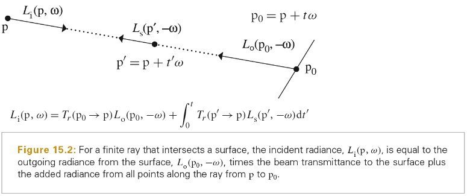
上面微分方程求解请参考如下链接：
TODO Generalized Path Space
Sampling Volume Scattering
// 该函数的目标是，对积分形式的 equation of transfer进行采样 // ray 世界空间的射线 virtual Spectrum Medium::Sample(const Ray &ray, Sampler &sampler, MemoryArena &arena, MediumInteraction *mi) const = 0;
Medium::Sample 和前面遇到的 BSDF::Sample_f()有不同的语义。Medium::Sample 不会给调用者提供关于函数值额外的信息，也不会提供采样处的概率密度 PDF。通常这些信息是不需要的，当可以计算这些量的比值时，有些介质模型(特别是非均匀介质)允许更高效的采样机制。
下图为使用蒙特卡洛估计量求解 Equation of Transfer 中部分系数的公式：
Homogeneous Medium
HomogeneousMedium::Sample 方法的实现非常直接，唯一复杂的地方是衰减系数对于不同波长来说是变化的。
上面最后一个公式推导如下：
生成介质交互来代替表面交互的概率刚好等于 1 减去选中波长光波的光线透射率。因此，给定光学上比较薄的介质(或者比较短的射线边界)，更可能使用表面交互，而对于光学上比较厚的介质(或者比较长的射线边界)，则更可能对介质交互进行采样。
- 指数随机变量 指数随机变量
- An Intuitive Guide To Exponential Functions & e https://betterexplained.com/articles/an-intuitive-guide-to-exponential-functions-e/
Heterogeneous Medium
当中间介质空间上的变化可以被分解为多个均匀的区域（例如：一块一块的常量体素），一种称为 regular tracking 的技术可以将均匀介质相关的技术应用于各个独立的体素。该方式的缺点是，当有很多体素时消耗比较大。
其他的技术则建立在直接泛化均匀介质采样概率密度函数公式上，这些技术通过空间可变的衰减系数执行来泛化。如下面公式：
最常用的对上面方程执行重要性采样的方法为 ray marching。其将整个介质范围分成多个子范围，通过数值近似每个子范围内的积分，然后将离散的结果合并。这种方式会引入系统性统计偏差，即使每个像素使用了无数个样本点，该方式也无法得到正确结果，而且该方法会产生引人注意的可见的 artifacts。
delta tracking 是一种无偏差方式。该方法原本是开发出来用于模拟原子反应中的中子体积散射的。当σt 为单色(monochromatic)时，该方式非常容易实现。需要注意的是，散射σs 和吸收σa 系数依然允许随光波长变化，只需要σt=σs+σa 是均匀的。
delta tracking 可以被解释为，使用额外的虚拟粒子填充介质，直到介质中所有地方的衰减系数都相同。此时就可以利用均匀介质的采样技术了，当和介质粒子的交互发生时，需要判断涉及的粒子是真实的还是虚拟的，如果是虚拟的，则该交互会被忽略。而可以通过概率来随机确定是否为虚拟粒子，其概率为虚拟粒子占总粒子数的比例。
下图为 Regular Tracking、 Ray Marching 和 Delta tracking 原理的对比:
下图为 delta tracking 实现原理：
上图中迭代终止的条件有两个：
- ti > tmax，表示我们已经离开介质，而且没有产生任何和介质的交互，因此，Sample()方法不会对中间介质进行采样。
- 在每次迭代中，会以σt(ti)/σt,max 的概率结束，σt(ti)/σt,max 值为此次迭代时，局部的真实粒子所占比例。
Spectrum GridDensityMedium::Sample(const Ray &rWorld, Sampler &sampler, MemoryArena &arena, MediumInteraction *mi) const { Ray ray = WorldToMedium(Ray(rWorld.o, Normalize(rWorld.d), rWorld.tMax * rWorld.d.Length())); // Compute $[\tmin, \tmax]$ interval of _ray_'s overlap with medium bounds const Bounds3f b(Point3f(0, 0, 0), Point3f(1, 1, 1)); Float tMin, tMax; if (!b.IntersectP(ray, &tMin, &tMax)) return Spectrum(1.f); // Run delta-tracking iterations to sample a medium interaction Float t = tMin; while (true) { t -= std::log(1 - sampler.Get1D()) * invMaxDensity / sigma_t; // 终止循环的第一种情况 if (t >= tMax) break; // 终止循环的第二种情况 if (Density(ray(t)) * invMaxDensity > sampler.Get1D()) { // Populate _mi_ with medium interaction information and return PhaseFunction *phase = ARENA_ALLOC(arena, HenyeyGreenstein)(g); *mi = MediumInteraction(rWorld(t), -rWorld.d, rWorld.time, this, phase); return sigma_s / sigma_t; } } return Spectrum(1.f); }
Sampling Phase Functions
对 Phase Function 进行采样主要有以下两种应用：
- 应用 Multi Importance Sampling 来计算中间介质中的直接光照
- 为中间介质中间接光照样本采样被散射方向
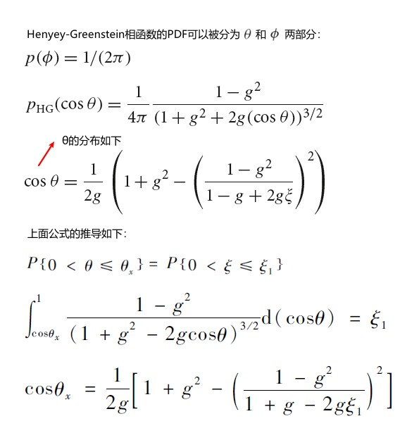
// 为了满足上述应用，Sample_p实现了给定特定出射方向wo和[0,1]^2空间中的样本值u，采样得到一个入射方向wi // 注意：和BxDF的采样方法不同，Sample_p不会返回相函数值和其对应的PDF。 virtual Float PhaseFunction::Sample_p(const Vector3f &wo, Vector3f *wi, const Point2f &u) const = 0;
- 紫外波段多分散系气溶胶散射相函数随机抽样方法研究 http://wulixb.iphy.ac.cn/article/doi/10.7498/aps.59.1749
Volumetric Light Transport
基于前面的采样构建模块，我们可以实现各种在中间介质中的光照传输算法。我们可以实现 EstimateDirect 函数中和中间介质相关的处理逻辑了。
从光照采样之后，如果产生了中间介质的散射交互，就需要为出射方向和入射方向计算相函数的值，以及该值对应的 PDF（用于对该方向进行 Multiple Importance Sampling）。因为我们假设相函数是完美采样，其值和 PDF 相同。
Path Tracing
VolPathIntegrator 是 SamplerIntegrator 的子类，其会考虑中间介质中的散射和衰减，以及表面的散射。
Spectrum VolPathIntegrator::Li(const RayDifferential &r, const Scene &scene, Sampler &sampler, MemoryArena &arena, int depth) const { Spectrum L(0.f), beta(1.f); RayDifferential ray(r); bool specularBounce = false; for (int bounces = 0; ; ++bounces) { //Intersect ray with scene and store intersection in isect //Sample the participating medium, if present //Handle an interaction with a medium or a surface //Possibly terminate the path with Russian roulette } return L; }
Sampling Subsurface Reflection Function
VolPathIntegrator 可用于求解 BSSRDF：给定表面上的一对点和一对方向，该积分器可用于计算从 wi 方向到达 pi 点的入射光在 po 点的 wo 方向上出射的部分。除了标准的路径追踪或双向路径追踪技术，还有很多其他光照传输算法技术适用于求解 BSSRDF。
很多透明物体具有很高反射率(albedo)的特点，使用经典的方式无法有效处理。例如：脱脂的牛奶的 albedo 为 0.9987。在介质中的每次交互中，几乎所有的光都被散射，而基本没有光被吸收，光在该介质中可以行进很远。数百甚至数千次的散射交互需要被考虑，用于计算出精确的结果。例如：在高 albedo 的牛奶中，经过 100 次散射交互后，路径中依然有 87.5%的入射光，而经过 500 次散射交互后，还有 51%，经过 1000 次散射交互，还有 26%。
BSSRDF 类的实现表达了这类材质中聚集的散射行为，其可以高效地渲染这种效果。
virtual Spectrum BSSRDF::S(const SurfaceInteraction &pi, const Vector3f &wi) = 0; // Sample_S 确定了在内部散射后光线重新出现的表面位置 // u1 为1D样本，其用于离散的采样决策(例如：选择特定的光谱通道) // u2 为 2D样本，其用于映射到表面的交点 virtual Spectrum BSSRDF::Sample_S(const Scene &scene, Float u1, const Point2f &u2, MemoryArena &arena, SurfaceInteraction *si, Float *pdf) const = 0;
TODO Sampling The SeparableBSSRDF
参考前面章节内容了解 S(po, ωo, pi , ωi)被分离开的细节。 Separable BSSRDFS公式描述
如果我们假设 BSSRDF 只采样透射穿过表面边界的射线，射线按照(1− Fr(cos θo))概率传播，这样就不需要对 1− Fr(cos θo))部分做任何事情了。
为了采样 Sp，我们需要一种方法，可以在出射位置的附近利用表面的参数化将 2D 分布函数映射到该表面上。概念上来讲，可以通过测地线来获得这种参数化，但是发现和求解会很不容易，并且需要为每种支持的形状做很多工作。我们使用更简单的一种方式，这种方式使用射线追踪将 radial profile Sr 映射到场景的几何体上。下图展示了其基本的理念：
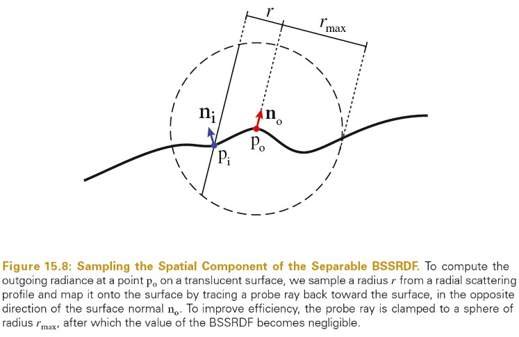
po 和其对应的法线 no 定义了一个平面，用于近似几何体表面。使用 2D 极坐标，我们首先采样一个方位角φ和一个半径值 r，然后将其映射到几何体表面得到点 pi。SeparableBSSRDF 只支持径向对称的 profile 函数，强制φ从均匀分布[0, 2π)中取样，并且 r 是按照径向 profile function Sr 分布。
对于上面这种基础的方式，此处依然有一些困难：
- radial profile Sr 对于不同的波长可能是不同的，对于不同的光谱通道，平均自由程可以有数量级的不同。
- 当使用平面近似的表面几何体非常不精确并且 no·ni≈ 0 时，探针射线将会在掠射角处碰到表面，这使得 pi 对应的 S(po, ωo, pi , ·)拥有相对较高的值却可能被以很低的概率采样。这会导致很高的方差。
- 探针射线可能会和表面多个地方相交。而所有这些交点可能都对反射辐射有贡献。
我们为每种波长的光使用不同的采样技术来处理光谱波长的变化，并且每种技术使用不同的投影轴重复 3 次，投影轴由基础的向量给出，这样就得到了一个总数为 3*Spectrum::nSamples 的采样技术。这保证了 S 取不可忽略值的每个点都是拥有可靠概率的交互点。这个组合起来的技术是在 SeparableBSSRDF::Sample_Sp()中实现的。
我们开始选择一个投影轴。注意：如果表面接近平面，沿着法线 SeparableBSSRDF::ns 很明显是最好的采样策略，沿着其他方向的探针射线很可能会和表面没有交点。因此我们分配了一大部分(50%)采样预算给垂直的射线。另外的一半平分给 SeparableBSSRDF::ss 和 SeparableBSSRDF::ts。
因为 profile 减弱的很快，因此我们不需要考虑离 po 很远的点 pi。为了减低射线追踪的计算消耗，我们将探针射线截取到 \(r_{max}\) 。SeparableBSSRDF::Sample_Sr() 函数可用于确定 rmax，SeparableBSSRDF::Sample_Sr()方法将一个样本值 x 映射为一个球的半径，该球包含了 x 的散射能量(例如：SeparableBSSRDF::Sample_Sr(ch, 0.999f)表示计算包含了 0.999 光谱 ch 通道散射能量的球的半径)。
给定 r 和 \(r_{max}\) ，探针射线和半径为 \(r_{max}\) 的球相交的长度 l 可以通过下面公式计算：
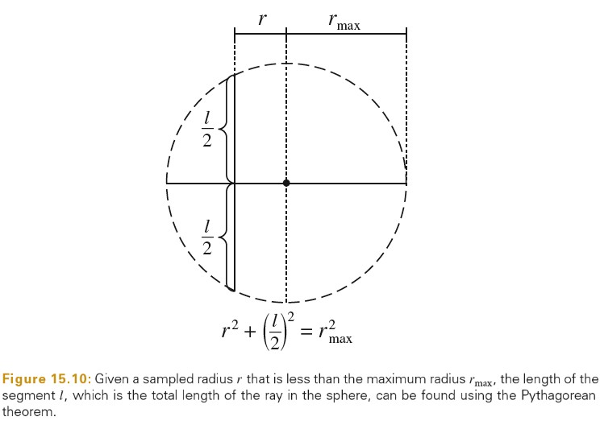
实践上，探针射线和表面可能由多个交点。使用 IntersectionChain 链表来依次存储所有交点。
Sample_Sp()只会返回单个位置 pi。因此需要使用均匀采样，从列表中选择一个交点返回。
最后，SeparableBSSRDF::Pdf_Sp()用于计算组合的 PDF，其需要考虑用到的所有采样策略。
TODO Sampling The TabulatedBSSRDF
TODO Subsurface Scattering In The Path Tracer
散射渲染方程可以参考前面章节内容： BSSRDF 积分形式 散射渲染方程
下图为散射渲染方程的蒙特卡洛积分公式：
Subsurface Scattering Using The Diffusion Equation
Photon beam diffusion 做了很多重要的假设和近似：
- 光在透明介质中的分布是使用 diffusion approximation 来建模的，diffusion approximation 描述了照明在高散射中间介质中的均衡分布。
- 介质是均匀的，并且隐含假设介质是半无限的（介质在一个无限延伸的平面下，介质是半无限延伸的）
- photo beam diffusion 建立在 separable BSSRDF 近似公式（Separable BSSRDFS 近似公式）基础上。
当这些假设成立时，使用 Photon beam diffusion 计算的结果和使用 the equation of transfer(The Equation of Transfer) 实地模拟得到的结果相似。
当然，当 profile 被应用于任意的几何形状或材质属性随空间变化的几何体时，很多上面的假设都是不成立的。在图形学中，diffusion-type 方法的魅力在于，其会以优雅的方式退化，即使一些或所有的基础假设都被违反，其依然可以得到视觉上合理的结果。
Principle Of Similarity
相似性原理是指对于高反照率的各项异性的散射介质，可以使用各项同性的相函数，以及适当的可修改的散射、衰减系数来模拟。基于可修改的系数计算出的光照传输结果和基于原始系数和相位函数计算的结果相差不多，同时基于各项同性的散射假设可以简化计算。
相似性原理基于下面的观察，即经过多次散射事件后，高反照率介质中光的分布在各个方向上变得越来越均匀，而与原始照明分布和相函数的各项异性无关。
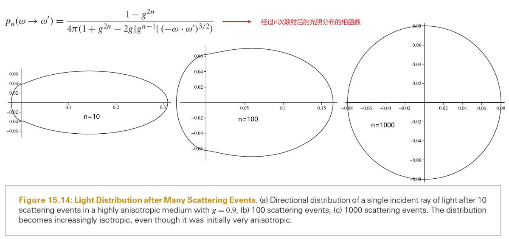
上面图片中的公式中，随着 n 的增大，相函数收敛于各项同性相函数 1/(4π)。
运用相似性原理把相函数当作各项同性后，各个散射属性也需要对应做修改。reduced scattering coefficient 被定义为σs'=(1−g)σs，reduced attenuation coefficient 定义为 σt'=σa+σs'，reduced albedo 定义为ρ'=σs'/σt'。
为了理解这些系数所运用的理念，可以考虑一个强烈向前散射的相函数，其 g->1。对于原始的相函数，在散射后光大部分依然沿着同一方向前进。在该实例中，reduced scattering coefficient σs'=(1−g)σs 比σs 要小很多，这意味着光在散射之前经过了很长的距离；介质当作比起原本要薄，用于近似光传播的远。考虑相反的情况，g->-1，在依次散射事件中，光会趋向于散射到入射方向相反的方向。但是，紧接着的下一次散射，又会调转方向；光线弹射回来又弹射出去，几乎没有前进。这种情况下，reduced scattering coefficient 比原始的散射系数大，表示有更大概率发生散射交互。也就是说，介质被当作比其原本要厚，用于近似光无法向前传播。下图展示了这两种情况：
TODO Diffusion Theory
扩散理论的一个关键假设是，每次散射事件会有效模糊入射照明，当光传播进入介质比较远的地方，有角度的辐射分布的高频部分会消失；在致密并各项同性的散射介质中，甚至所有的方向性都会消失。
- 什么是扩散？ https://zhuanlan.zhihu.com/p/215865933
- 扩散系数 http://cn.comsol.com/multiphysics/diffusion-coefficient
- 扩散方程 http://cn.comsol.com/multiphysics/diffusion-equation
- A Practical Model for Subsurface Light Transport http://graphics.ucsd.edu/~henrik/papers/bssrdf/bssrdf.pdf
TODO Monopole Solution
TODO Non-Classical Diffusion
TODO Dipole Solution
TODO Beam Solution
TODO Single Scattering Term
TODO Filling The BSSRDFTable
TODO Setting Scattering Properties
16 Light Transport III:Bidirectional Methods
The Path-Space Measurement Equation
Stochastic Progressive Photon Mapping
Bidirectional Path Tracing
Metropolis Light Transport
17 Retrospective and the future
Design Retrospective
Alternative Hardware
Conclusion
参考资料
- PBR Book Online http://www.pbr-book.org/3ed-2018/contents.html
- PBR 源代码 https://github.com/mmp/pbrt-v3
- Scenes for pbrt-v3 https://pbrt.org/scenes-v3.html
- 导数计算 https://zs.symbolab.com
- WayOnPBRT https://zhuanlan.zhihu.com/wayonpbrt
Lighting Model
Lambert
只考虑环境光和漫反射的光照模型。
Phong
考虑环境光，漫反射光，镜面反射光的光照模型。其中镜面反射按照视角和反射光夹角来计算。
shininess 为反光度
镜面高光不和物体颜色交互，它被直接反射，所以在最终计算颜色时，镜面高光颜色是和散色出来的颜色相加的。
缺点
- 当放射光方向和视角夹角大于 90 度时，specular 被设置为 0，当反光度比较小时，镜面半径会比较大，而 specular 被设置为 0 导致，镜面光照突然就消失了。
当然该缺点可以通过将 specular+1 从而将 specular 的值限定在[0,2]的范围呢 - 反射光方向计算复杂
- 没有考虑菲涅耳效应。反射量随视角和法线的夹角增大而增大。
BlinnPhong
考虑环境光，漫反射光，镜面反射光的光照模型。反射光方向取视线和光照方向的中心线，镜面反射按照中心线和法线的夹角来计算。
PBR
Cook-Torrance 模型
下面是计算机图形学引入的 BRDF 模型，又叫做 Cook-Torrance 模型.
F(l,h)为菲涅耳反射方程，用于计算 l 方向的入射光和在 h 法线处的反射量；
G(l,v)为几何衰减因子，用于计算入射光线被遮挡(Shadowing)和反射光线被遮挡(Masking)的量；
D(h)为法线分布函数，用于计算在 h 方向上法线的分布率；
h 表示微观法线 l 和 v 之间的半矢量 half-vector,对 v 方向反射光有贡献的法线
n 表示宏观法线
l 表示入射光方向
v 表示视觉方向
\(\theta_i\) 表示入射光和法线的夹角
\(\theta_o\) 表示视线和法线的夹角
OpenGL Implement BRDF
DisneyBRDF
BRDF 图像切片
图片说明：
- 法线向量垂直向上
- 半角向量是灯光向量和视角向量的中间向量，h为半角向量
- l 为灯光方向，v为视角方向
- θ(d) 表示灯光方向和半角向量的夹角 或者 视角方向和半角向量的夹角
- θ(h) 表示半角向量和法线的夹角
DisneyDiffuse
下面文件展示了 \(y(x)=1 + (FD90 - 1) (1 - cos((π θ_{l}) / 180))⁵ (1 + (FD90 - 1) (1 - cos((π x) / 180))⁵)\)
./PhysicallyBasedRendering/02disney_brdf_diffuse.ggb
// Unity 实现方式 // Note: Disney diffuse must be multiply by diffuseAlbedo / PI. This is done outside of this function. half DisneyDiffuse(half NdotV, half NdotL, half LdotH, half perceptualRoughness) { half fd90 = 0.5 + 2 * LdotH * LdotH * perceptualRoughness; // Two schlick fresnel term half lightScatter = (1 + (fd90 - 1) * Pow5(1 - NdotL)); half viewScatter = (1 + (fd90 - 1) * Pow5(1 - NdotV)); return lightScatter * viewScatter; } // [Burley 2012, "Physically-Based Shading at Disney"] float3 Diffuse_Burley_Disney( float3 DiffuseColor, float Roughness, float NoV, float NoL, float VoH ) { float FD90 = 0.5 + 2 * VoH * VoH * Roughness; float FdV = 1 + (FD90 - 1) * Pow5( 1 - NoV ); float FdL = 1 + (FD90 - 1) * Pow5( 1 - NoL ); return DiffuseColor * ( (1 / PI) * FdV * FdL ); }
DisneySpecular
法线分布项 D
./PhysicallyBasedRendering/02disney_brdf_D.ggb
// Generalized-Trowbridge-Reitz distribution float D_GTR1(float alpha, float dotNH) { float a2 = alpha * alpha; float cos2th = dotNH * dotNH; float den = (1.0 + (a2 - 1.0) * cos2th); return (a2 - 1.0) / (PI * log(a2) * den); } float D_GTR2(float alpha, float dotNH) { float a2 = alpha * alpha; float cos2th = dotNH * dotNH; float den = (1.0 + (a2 - 1.0) * cos2th); return a2 / (PI * den * den); } float D_GTR2_aniso(float dotHX, float dotHY, float dotNH, float ax, float ay) { float deno = dotHX * dotHX / (ax * ax) + dotHY * dotHY / (ay * ay) + dotNH * dotNH; return 1.0 / (PI * ax * ay * deno * deno); }
Fresnel 项 F
F0 表示入射光方向在 normal 方向上时，所对应的反射率。该值由折射率决定。
- 常用折射率表 https://baike.baidu.com/item/%E5%B8%B8%E7%94%A8%E6%8A%98%E5%B0%84%E7%8E%87%E8%A1%A8
- 数百种常见材质的折射率值 https://www.btbat.com/12032.html
// [Schlick 1994, "An Inexpensive BRDF Model for Physically-Based Rendering"] float3 F_Schlick(float HdotV, float3 F0) { return F0 + (1 - F0) * pow(1 - HdotV , 5.0)); }
几何项 G
// Smith GGX G项，各项同性版本 float smithG_GGX(float NdotV, float alphaG) { float a = alphaG * alphaG; float b = NdotV * NdotV; return 1 / (NdotV + sqrt(a + b - a * b)); } // Smith GGX G项，各项异性版本 // Derived G function for GGX float smithG_GGX_aniso(float dotVN, float dotVX, float dotVY, float ax, float ay) { return 1.0 / (dotVN + sqrt(pow(dotVX * ax, 2.0) + pow(dotVY * ay, 2.0) + pow(dotVN, 2.0))); } // GGX清漆几何项 // G GGX function for clearcoat float G_GGX(float dotVN, float alphag) { float a = alphag * alphag; float b = dotVN * dotVN; return 1.0 / (dotVN + sqrt(a + b - a * b)); }
Q&A
文章中 φ(d) 如何理解？
参考文档
英文 https://disney-animation.s3.amazonaws.com/library/s2012_pbs_disney_brdf_notes_v2.pdf
中文 https://blog.csdn.net/poem_qianmo/article/details/88936992
中文 https://gameinstitute.qq.com/community/detail/123891
DisneyBRDF Tool https://github.com/wdas/brdf
基于物理着色（三）- Disney 和 UE4 的实现 https://zhuanlan.zhihu.com/p/20122884
UnityBRDF
BRDF1
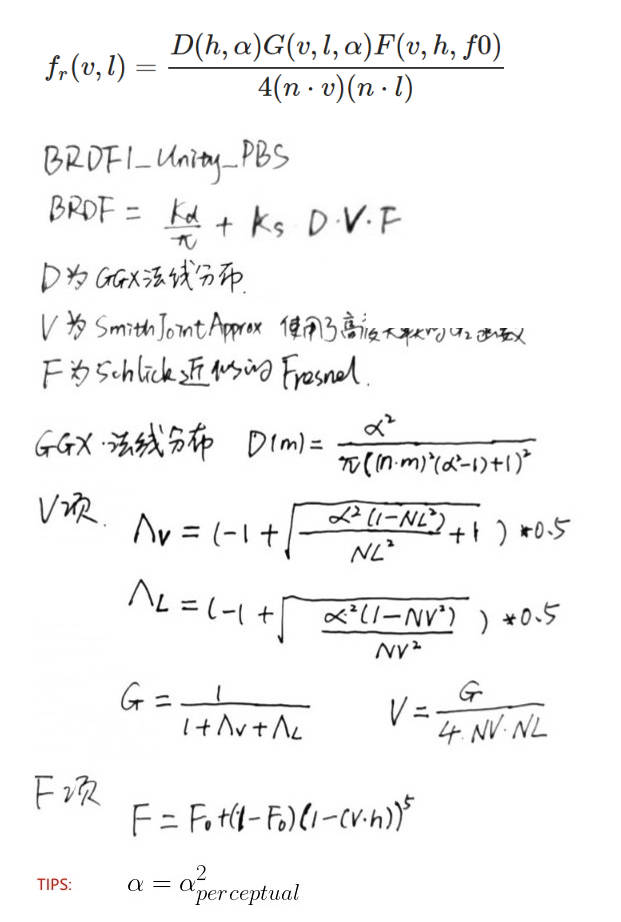
下图展示了 SmithJointGGXVisibility 的推导：
DiffuseTerm
// Note: Disney diffuse must be multiply by diffuseAlbedo / PI. This is done outside of this function. half DisneyDiffuse(half NdotV, half NdotL, half LdotH, half perceptualRoughness) { half fd90 = 0.5 + 2 * LdotH * LdotH * perceptualRoughness; // Two schlick fresnel term half lightScatter = (1 + (fd90 - 1) * Pow5(1 - NdotL)); half viewScatter = (1 + (fd90 - 1) * Pow5(1 - NdotV)); return lightScatter * viewScatter; }
Specular G|V(Visibility) D
// --- G|V--- // Ref: http://jcgt.org/published/0003/02/03/paper.pdf inline float SmithJointGGXVisibilityTerm (float NdotL, float NdotV, float roughness) { #if 0 // Original formulation: // lambda_v = (-1 + sqrt(a2 * (1 - NdotL2) / NdotL2 + 1)) * 0.5f; // lambda_l = (-1 + sqrt(a2 * (1 - NdotV2) / NdotV2 + 1)) * 0.5f; // G = 1 / (1 + lambda_v + lambda_l); // Reorder code to be more optimal half a = roughness; half a2 = a * a; half lambdaV = NdotL * sqrt((-NdotV * a2 + NdotV) * NdotV + a2); half lambdaL = NdotV * sqrt((-NdotL * a2 + NdotL) * NdotL + a2); // Simplify visibility term: (2.0f * NdotL * NdotV) / ((4.0f * NdotL * NdotV) * (lambda_v + lambda_l + 1e-5f)); return 0.5f / (lambdaV + lambdaL + 1e-5f); // This function is not intended to be running on Mobile, // therefore epsilon is smaller than can be represented by half #else // Approximation of the above formulation (simplify the sqrt, not mathematically correct but close enough) float a = roughness; float lambdaV = NdotL * (NdotV * (1 - a) + a); float lambdaL = NdotV * (NdotL * (1 - a) + a); #if defined(SHADER_API_SWITCH) return 0.5f / (lambdaV + lambdaL + 1e-4f); // work-around against hlslcc rounding error #else return 0.5f / (lambdaV + lambdaL + 1e-5f); #endif #endif } // --- D --- inline float GGXTerm (float NdotH, float roughness) { float a2 = roughness * roughness; float d = (NdotH * a2 - NdotH) * NdotH + 1.0f; // 2 mad return UNITY_INV_PI * a2 / (d * d + 1e-7f); // This function is not intended to be running on Mobile, // therefore epsilon is smaller than what can be represented by half }
Specular G|V(Visibility) D Legacy
// --- G|V--- // Smith-Schlick derived for Beckmann inline half SmithBeckmannVisibilityTerm (half NdotL, half NdotV, half roughness) { half c = 0.797884560802865h; // c = sqrt(2 / Pi) half k = roughness * c; return SmithVisibilityTerm (NdotL, NdotV, k) * 0.25f; // * 0.25 is the 1/4 of the visibility term } // Generic Smith-Schlick visibility term inline half SmithVisibilityTerm (half NdotL, half NdotV, half k) { half gL = NdotL * (1-k) + k; half gV = NdotV * (1-k) + k; return 1.0 / (gL * gV + 1e-5f); // This function is not intended to be running on Mobile, // therefore epsilon is smaller than can be represented by half } // --- D --- // BlinnPhong normalized as normal distribution function (NDF) // for use in micro-facet model: spec=D*G*F // eq. 19 in https://dl.dropboxusercontent.com/u/55891920/papers/mm_brdf.pdf inline half NDFBlinnPhongNormalizedTerm (half NdotH, half n) { // norm = (n+2)/(2*pi) half normTerm = (n + 2.0) * (0.5/UNITY_PI); half specTerm = pow (NdotH, n); return specTerm * normTerm; }
Specular F
inline half3 FresnelTerm (half3 F0, half cosA) { half t = Pow5 (1 - cosA); // ala Schlick interpoliation return F0 + (1-F0) * t; }
BRDF1
// Main Physically Based BRDF // Derived from Disney work and based on Torrance-Sparrow micro-facet model // // BRDF = kD / pi + kS * (D * V * F) / 4 // I = BRDF * NdotL // // * NDF (depending on UNITY_BRDF_GGX): // a) Normalized BlinnPhong // b) GGX // * Smith for Visiblity term // * Schlick approximation for Fresnel half4 BRDF1_Unity_PBS (half3 diffColor, half3 specColor, half oneMinusReflectivity, half smoothness, float3 normal, float3 viewDir, UnityLight light, UnityIndirect gi) { float perceptualRoughness = SmoothnessToPerceptualRoughness (smoothness); float3 halfDir = Unity_SafeNormalize (float3(light.dir) + viewDir); // NdotV should not be negative for visible pixels, but it can happen due to perspective projection and normal mapping // In this case normal should be modified to become valid (i.e facing camera) and not cause weird artifacts. // but this operation adds few ALU and users may not want it. Alternative is to simply take the abs of NdotV (less correct but works too). // Following define allow to control this. Set it to 0 if ALU is critical on your platform. // This correction is interesting for GGX with SmithJoint visibility function because artifacts are more visible in this case due to highlight edge of rough surface // Edit: Disable this code by default for now as it is not compatible with two sided lighting used in SpeedTree. #define UNITY_HANDLE_CORRECTLY_NEGATIVE_NDOTV 0 #if UNITY_HANDLE_CORRECTLY_NEGATIVE_NDOTV // The amount we shift the normal toward the view vector is defined by the dot product. half shiftAmount = dot(normal, viewDir); normal = shiftAmount < 0.0f ? normal + viewDir * (-shiftAmount + 1e-5f) : normal; // A re-normalization should be applied here but as the shift is small we don't do it to save ALU. //normal = normalize(normal); float nv = saturate(dot(normal, viewDir)); // TODO: this saturate should no be necessary here #else half nv = abs(dot(normal, viewDir)); // This abs allow to limit artifact #endif float nl = saturate(dot(normal, light.dir)); float nh = saturate(dot(normal, halfDir)); half lv = saturate(dot(light.dir, viewDir)); half lh = saturate(dot(light.dir, halfDir)); // Diffuse term half diffuseTerm = DisneyDiffuse(nv, nl, lh, perceptualRoughness) * nl; // Specular term // HACK: theoretically we should divide diffuseTerm by Pi and not multiply specularTerm! // BUT 1) that will make shader look significantly darker than Legacy ones // and 2) on engine side "Non-important" lights have to be divided by Pi too in cases when they are injected into ambient SH float roughness = PerceptualRoughnessToRoughness(perceptualRoughness); #if UNITY_BRDF_GGX // GGX with roughtness to 0 would mean no specular at all, using max(roughness, 0.002) here to match HDrenderloop roughtness remapping. roughness = max(roughness, 0.002); float V = SmithJointGGXVisibilityTerm (nl, nv, roughness); float D = GGXTerm (nh, roughness); #else // Legacy half V = SmithBeckmannVisibilityTerm (nl, nv, roughness); half D = NDFBlinnPhongNormalizedTerm (nh, PerceptualRoughnessToSpecPower(perceptualRoughness)); #endif float specularTerm = V*D * UNITY_PI; // Torrance-Sparrow model, Fresnel is applied later # ifdef UNITY_COLORSPACE_GAMMA specularTerm = sqrt(max(1e-4h, specularTerm)); # endif // specularTerm * nl can be NaN on Metal in some cases, use max() to make sure it's a sane value specularTerm = max(0, specularTerm * nl); #if defined(_SPECULARHIGHLIGHTS_OFF) specularTerm = 0.0; #endif // surfaceReduction = Int D(NdotH) * NdotH * Id(NdotL>0) dH = 1/(roughness^2+1) half surfaceReduction; # ifdef UNITY_COLORSPACE_GAMMA surfaceReduction = 1.0-0.28*roughness*perceptualRoughness; // 1-0.28*x^3 as approximation for (1/(x^4+1))^(1/2.2) on the domain [0;1] # else surfaceReduction = 1.0 / (roughness*roughness + 1.0); // fade \in [0.5;1] # endif // To provide true Lambert lighting, we need to be able to kill specular completely. specularTerm *= any(specColor) ? 1.0 : 0.0; half grazingTerm = saturate(smoothness + (1-oneMinusReflectivity)); half3 color = diffColor * (gi.diffuse + light.color * diffuseTerm) + specularTerm * light.color * FresnelTerm (specColor, lh) + surfaceReduction * gi.specular * FresnelLerp (specColor, grazingTerm, nv); return half4(color, 1); }
BRDF2
BRDF2
// Based on Minimalist CookTorrance BRDF // Implementation is slightly different from original derivation: http://www.thetenthplanet.de/archives/255 // // * NDF (depending on UNITY_BRDF_GGX): // a) BlinnPhong // b) [Modified] GGX // * Modified Kelemen and Szirmay-Kalos for Visibility term // * Fresnel approximated with 1/LdotH half4 BRDF2_Unity_PBS (half3 diffColor, half3 specColor, half oneMinusReflectivity, half smoothness, float3 normal, float3 viewDir, UnityLight light, UnityIndirect gi) { float3 halfDir = Unity_SafeNormalize (float3(light.dir) + viewDir); half nl = saturate(dot(normal, light.dir)); float nh = saturate(dot(normal, halfDir)); half nv = saturate(dot(normal, viewDir)); float lh = saturate(dot(light.dir, halfDir)); // Specular term half perceptualRoughness = SmoothnessToPerceptualRoughness (smoothness); half roughness = PerceptualRoughnessToRoughness(perceptualRoughness); #if UNITY_BRDF_GGX // GGX Distribution multiplied by combined approximation of Visibility and Fresnel // See "Optimizing PBR for Mobile" from Siggraph 2015 moving mobile graphics course // https://community.arm.com/events/1155 half a = roughness; float a2 = a*a; float d = nh * nh * (a2 - 1.f) + 1.00001f; #ifdef UNITY_COLORSPACE_GAMMA // Tighter approximation for Gamma only rendering mode! // DVF = sqrt(DVF); // DVF = (a * sqrt(.25)) / (max(sqrt(0.1), lh)*sqrt(roughness + .5) * d); float specularTerm = a / (max(0.32f, lh) * (1.5f + roughness) * d); #else float specularTerm = a2 / (max(0.1f, lh*lh) * (roughness + 0.5f) * (d * d) * 4); #endif // on mobiles (where half actually means something) denominator have risk of overflow // clamp below was added specifically to "fix" that, but dx compiler (we convert bytecode to metal/gles) // sees that specularTerm have only non-negative terms, so it skips max(0,..) in clamp (leaving only min(100,...)) #if defined (SHADER_API_MOBILE) specularTerm = specularTerm - 1e-4f; #endif #else // Legacy half specularPower = PerceptualRoughnessToSpecPower(perceptualRoughness); // Modified with approximate Visibility function that takes roughness into account // Original ((n+1)*N.H^n) / (8*Pi * L.H^3) didn't take into account roughness // and produced extremely bright specular at grazing angles half invV = lh * lh * smoothness + perceptualRoughness * perceptualRoughness; // approx ModifiedKelemenVisibilityTerm(lh, perceptualRoughness); half invF = lh; half specularTerm = ((specularPower + 1) * pow (nh, specularPower)) / (8 * invV * invF + 1e-4h); #ifdef UNITY_COLORSPACE_GAMMA specularTerm = sqrt(max(1e-4f, specularTerm)); #endif #endif #if defined (SHADER_API_MOBILE) specularTerm = clamp(specularTerm, 0.0, 100.0); // Prevent FP16 overflow on mobiles #endif #if defined(_SPECULARHIGHLIGHTS_OFF) specularTerm = 0.0; #endif // surfaceReduction = Int D(NdotH) * NdotH * Id(NdotL>0) dH = 1/(realRoughness^2+1) // 1-0.28*x^3 as approximation for (1/(x^4+1))^(1/2.2) on the domain [0;1] // 1-x^3*(0.6-0.08*x) approximation for 1/(x^4+1) #ifdef UNITY_COLORSPACE_GAMMA half surfaceReduction = 0.28; #else half surfaceReduction = (0.6-0.08*perceptualRoughness); #endif surfaceReduction = 1.0 - roughness*perceptualRoughness*surfaceReduction; half grazingTerm = saturate(smoothness + (1-oneMinusReflectivity)); half3 color = (diffColor + specularTerm * specColor) * light.color * nl + gi.diffuse * diffColor + surfaceReduction * gi.specular * FresnelLerpFast (specColor, grazingTerm, nv); return half4(color, 1); }
Image Based Lighting
约去 F 项的依据：
对于光滑情形， wh 接近 n ，所以 F 基本是定值，分子分母可约去
对于非光滑情形，L 已经变得很粗略了，所以做这种近似也影响不大。
约去 dot(wh, n)的依据：
对于镜面反射的 brdf f(wi,wo)，只会在反射方向 R 的附近有值。在不同方向入射时（除掠射角），brdf 的波瓣变化不大，因此，f(wo,wi(n),n) ≈ f(R, wi(R), R)，即 wo = n = R
diffuse 部分 ： 将 irradiance*1/pi 烘培到 Cubemap 中，Cubemap 采样 uv 对应于被渲染点的 normal 方向
specular 部分 1 ： 将 irradiance 的第一部分烘培到 Cubemap 中，Cubemap 采样 uv 对应于 wi 即 reflect(-V,N)
specular 部分 2 ： 将 irradiance 的第二部分烘培到 Texture2D 中，uv.x 对应 NoV, uv.y 对应 roughness
计算 specular 第一部分时，需要知道 wo(即 V)，才能求出 wh(即 H)，但视线方向 V 在预计算时，还无法知道。因此，假设 Normal 方向为视角方向 V，对 GGX 进行重要性采样得到微表面法线方向 H，利用 V 和 H 得到 wi（即 L），这样就可以进行预计算了。
解释一下 ImportanceSampleGGX(float2 Xi,float roughness), Xi 为均匀分布的随机变量 roughness 为粗糙度，该函数内利用了 pdf->cdf->特定分布的随机变量 的方法得到了特定分布的θ,φ表示的微表面法线。
计算 specular 第二部分时，假设了 specular 反射为各项同性，假定 N 为(0,1,0)，则使用 NoV 可以构造一个合法的 V 为(NoV,sqrt(1-NoV*Nov),0)，对 GGX 进行重要性采样得到微表面法线 H，利用 V 和 H 得到 L。这样就可以进行预计算了。
- https://learnopengl.com/PBR/IBL/Specular-IBL
- 基于物理的渲染：基于图像照明(Image-based Lighting) https://zhuanlan.zhihu.com/p/261005894?utm_source=ZHShareTargetIDMore
- 深入理解 PBR/基于图像照明 (IBL) https://zhuanlan.zhihu.com/p/66518450
- 蒙特卡洛积分 https://zhuanlan.zhihu.com/p/146144853 ImportanceSampleGGX 的原理可以参考该文章
球谐函数
- 球谐光照与 PRT 学习笔记（一）：引入 https://zhuanlan.zhihu.com/p/49436452
- 球谐光照与 PRT 学习笔记（二）：蒙特卡洛积分与球面上的均匀采样 https://zhuanlan.zhihu.com/p/49746076
- 球谐光照与 PRT 学习笔记（三）：球谐函数 https://zhuanlan.zhihu.com/p/50208005
- 球谐光照与 PRT 学习笔记（四）：球谐函数的性质与球谐旋转 https://zhuanlan.zhihu.com/p/50699527
球谐光照与 PRT 学习笔记（五）：预计算传输与着色 https://zhuanlan.zhihu.com/p/51179426
球谐函数的推导可以参考下面文章以及《数学物理方法》中勒让德多项式和球谐函数章节
- (一)从拉普拉斯方程到球谐函数 https://zhuanlan.zhihu.com/p/66989673
- (二)蒙特卡洛积分和光照投影 https://zhuanlan.zhihu.com/p/68522268
- (三)光源和光照计算 https://zhuanlan.zhihu.com/p/68913680
- 拉普拉斯算子 https://baike.baidu.com/item/%E6%8B%89%E6%99%AE%E6%8B%89%E6%96%AF%E7%AE%97%E5%AD%90
- 拉普拉斯方程 https://baike.baidu.com/item/%E6%8B%89%E6%99%AE%E6%8B%89%E6%96%AF%E6%96%B9%E7%A8%8B
- 调和函数 https://baike.baidu.com/item/%E8%B0%83%E5%92%8C%E5%87%BD%E6%95%B0
- 连带勒让德方程 1 https://baike.baidu.com/item/%E8%BF%9E%E5%B8%A6%E5%8B%92%E8%AE%A9%E5%BE%B7%E6%96%B9%E7%A8%8B
- 连带勒让德方程 2 https://mathworld.wolfram.com/AssociatedLegendreDifferentialEquation.html
- 连带勒让德函数 https://baike.baidu.com/item/%E8%BF%9E%E5%B8%A6%E5%8B%92%E8%AE%A9%E5%BE%B7%E5%87%BD%E6%95%B0
- 勒让德方程 1 https://baike.baidu.com/item/%E5%8B%92%E8%AE%A9%E5%BE%B7%E6%96%B9%E7%A8%8B
- 勒让德方程 2 https://mathworld.wolfram.com/LegendreDifferentialEquation.html
- 勒让德函数 https://en.wikipedia.org/wiki/Legendre_function
- 伴随勒让德多项式 https://baike.baidu.com/item/%E4%BC%B4%E9%9A%8F%E5%8B%92%E8%AE%A9%E5%BE%B7%E5%A4%9A%E9%A1%B9%E5%BC%8F
- 正交多项式 https://baike.baidu.com/item/%E6%AD%A3%E4%BA%A4%E5%A4%9A%E9%A1%B9%E5%BC%8F
- 勒让德多项式 https://baike.baidu.com/item/Legendre%E5%A4%9A%E9%A1%B9%E5%BC%8F
- 数学物理方法-勒让德多项式 勒让德多项式
Zonal Spherical Harmonics 为球谐函数的特殊形式，
- Zonal Spherical Harmonics https://en.wikipedia.org/wiki/Zonal_spherical_harmonics
下面链接包含了（复）球谐函数表 和 实球谐函数表：
- 球諧函數表 https://en.wikipedia.org/wiki/Table_of_spherical_harmonics
- UnityCatLikeCoding SH Spherical Harmonics
从虚球谐函数推导出实球谐函数的方法可以参考 同济大学高等数学第七章第七节 常系数齐次线性微分方程 以及下面链接中的内容：
按照上面推导出来的实函数符号和 wikipedia 上不同，这是因为左手坐标系、右手坐标系的问题，可以参考下面链接的解释：
PBR Detail
参考文档
How Is The NDF Really Defined?
- How Is The NDF Really Defined? en http://www.reedbeta.com/blog/hows-the-ndf-really-defined/
- How Is The NDF Really Defined? cn https://www.jianshu.com/p/197bed54a099
- http://www.cs.cornell.edu/~srm/publications/EGSR07-btdf.pdf
Sampling microfacet BRDF
- Sampling microfacet BRDF https://agraphicsguy.wordpress.com/2015/11/01/sampling-microfacet-brdf/
Misc
基于物理的渲染（PBR）白皮书（一）开篇：PBR 核心知识体系总结与概览 https://zhuanlan.zhihu.com/p/53086060
基于物理的渲染（PBR）白皮书（二）PBR 核心理论与渲染光学原理总结 https://zhuanlan.zhihu.com/p/56967462
基于物理的渲染（PBR）白皮书（三）迪士尼原则的 BRDF 与 BSDF 相关总结 https://zhuanlan.zhihu.com/p/60977923
基于物理的渲染（PBR）白皮书（四）法线分布函数相关总结 https://zhuanlan.zhihu.com/p/69380665
基于物理的渲染（PBR）白皮书（五）几何函数相关总结 https://zhuanlan.zhihu.com/p/81708753
深入 BRDF 和 PBR 大作战！：微面理论 https://zhuanlan.zhihu.com/p/62904454
参考资料
- 基于物理着色：BRDF https://zhuanlan.zhihu.com/rgba8
- 基于物理着色
- 几种反射模型 https://zhuanlan.zhihu.com/p/20091064
- Microface 材质和多层材质 https://zhuanlan.zhihu.com/p/20119162
- Disney 和 UE4 的实现 https://zhuanlan.zhihu.com/p/20122884
- 次表面散射 https://zhuanlan.zhihu.com/p/21247702
- 几种反射模型 https://zhuanlan.zhihu.com/p/20091064
- unity 材质数值图表 https://docs.unity3d.com/Manual/StandardShaderMaterialCharts.html
- PBR Book Online http://www.pbr-book.org/3ed-2018/contents.html
- 为什么 PBR 中 Lambert 光照要除 PI? https://zhuanlan.zhihu.com/p/29837458
- https://www.jordanstevenstechart.com/physically-based-rendering
Misc
Aniso
简单计算方式
inline fixed4 LightingAnisotropic(SurfaceAnisoOutput s,fixed3 lightDir,fixed3 viewDir,fixed atten) { float diffuse_ = dot(s.Normal,lightDir); float3 halfVect = normalize(lightDir + viewDir); fixed HDotA = dot(normalize(s.Normal+s.AnisoDir),halfVect); float aniso = max(0,sin((HDotA+_AnisoOffset)*3.141)); float spec = saturate(pow(aniso,s.Gloss*128)) * s.Specular; float3 specColor = spec*_SpecColor.rgb; fixed4 c; c.rgb = (s.Albedo * _LightColor0.rgb * diffuse_) + (_LightColor0.rgb * specColor) * atten * 2; c.a = 1.0; return c; }
说明：
- sin(HDotA*3.14) 将 sin 函数图像周期从（0-2Pi）缩放到（0-1） 所以该函数等价于 cos((HDotA-0.5)*3.14)
- sin(x*3.14)的函数值图像化如下，其效果是为了实现从中间到两边逐渐变暗的效果
参考资料
- Unity Shader 之 不锈钢（各向异性材质）https://blog.csdn.net/joynson/article/details/77049813
- UnityShaderAndEffectCookbook 第三节